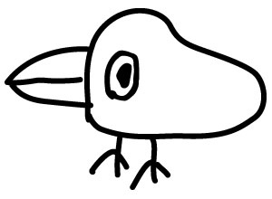

| きまぐれ暦 | |
| 星新一 | |
この作品の全部あるいは一部を無断で複製・転載・配信・送信すること、内容を無断で改変・改竄することを禁止します。また、有償・無償にかかわらず第三者に譲渡することはできません。
きまぐれ暦
星 新一
目次
きまぐれ暦
私の名はＳＦにふさわしい。いや、ふさわしすぎるほどである。その分野の研究家、佐久間英氏の「お名前風土記」によると、星という姓は特に多い五〇〇傑のうち三七七番目であるという。珍しいようだが、割といるのである。同姓の人に会うと「ご出身はどこで」と聞いてしまう。そして、新潟県から福島県にかけて多いことを知った。
私の父は福島県いわき市の生れであった。この地には星という姓が多い。明治時代の政治家、星亨の伝記を読むと、彼自身は江戸の生れだが、幼時に母が新潟出身の医師と再婚したため、星という姓になったとある。
四国に行った時、必要があって三文判を買おうとしたら「このへんに星なんて姓の人はいません」と、入手不能だった。
東北の日本海から太平洋に至るこの一帯になぜ星という姓が集中しているのだろう。想像だが、むかし大流星が、夜空を横切ったのではないだろうか。
なお、わが家の紋は九曜星である。大きめの丸のまわりを八つの丸がとりまいている。結婚してわかったことだが、家内の実家の紋も九曜星。ただし、こっちは同じ大きさの九つの丸で環を作った形である。
こうなってくると、うまくできすぎていて、半信半疑になる人もいるのではなかろうか。
理髪店へ行き散髪をしてもらい、つぎはひげそり。石けんの泡をブラシで顔にぬられる。すると、とたんにかゆくなるのである。
指でかきたいが、泡がついたらどこでふけばいいのだ。カミソリに当ってケガをするかもしれない。自由にかけない状態なので、よけいにかゆさを感じるのかもしれない。これをがまんするのは苦痛である。なんとかならぬものか。かゆみ止めの作用のある成分でも、石けんにまぜたらどうなんだ。そんな製品がないのなら、おれが特許を申請して、大もうけしてやるか。
と、そのたびに考えるのだが、理髪店を出るとけろりと忘れる。私ばかりでなく、ほとんどの男性がそうなのではなかろうか。
私の作品の大部分は、寓話めいた架空の話である。資料や体験は不必要で、その点はいいが、アイデアを思いつくまでの苦労は、なみたいていのものではない。
書斎の机にむかい、ひたすら考えるばかりである。この書斎以外の場所では、私はなんにも書けない。近所の地下鉄工事の騒音からのがれるため、ホテルへ入って原稿を書いたことがあったが、出来がどうも気に入らず、帰宅してすっかり書きなおした。
書斎はもはや私の脳髄の一部といっていい。といって、べつに完備した豪華な部屋ではないのである。採光がよくなく、昼でもうすぐらい。しかし、仕事をするのは夜で、お昼ぐらいまで眠っているのが日常だから、採光などどうでもいいことだ。
机と椅子がきちんと合っていない。仕事に熱中してくると、椅子の上であぐらをかき、さらには立てひざをしたりする。あまり大きな椅子でないから、きゅうくつきわまる。
壁はだいぶよごれてきた。部屋を作ったとたん、板張りにすればよかったと後悔した壁である。だが、改装するほどはまだよごれていず、中途半途な状態である。
家は第二京浜のすぐそばなので、車の響きが震動として伝わってくる。大型の重いトラックが通ると、小さな地震ほどになる。
なんだかんだと、不満だらけだ。しかし、考えてみると、小さな不満の散在しているのがいいのかもしれない。採光がほどよく、椅子が机やからだにぴったりで、壁も文句なく、静かきわまるものだったら、アイデアはなにひとつ浮かんでこないであろう。
未来小説には、みちたりた完全な社会のなかで、人間の退化する話がよくある。それと同様に、住宅の場合も、精神的刺激のためにいくらかの不満を残しておくことが必要なわけであろう。もちろん、大きすぎてもいけない。この種の研究はすでにはじまっていることだろうが、さぞやっかいなことであろう。
これまで私は、ずいぶん小説を書いてきた。そのなかで最も多いのは、ある人のところへだれかが訪れてきて、事件がはじまるというタイプのストーリーである。
たとえば、ドアにノックの音がし、あけてみるとそこにサンタクロース。あるいは見知らぬ美女が立っていて、室内の男に愛の言葉をのべはじめる。精神科医がドアをあけると、そとの男が「おれは殺された」と話しはじめる。というたぐいの発端のものだ。
なぜこんな形式が好きかというと、私の出不精の性格のためのようだ。外出するのがめんどくさくてならないのである。それに、私の執筆時間は夜から明け方にかけてとなっている。つまり、起きるのは正午ごろとなる。
食事をし、新聞や雑誌などを読み、来客と会ったりしていると、いつのまにか夕方になる。また食事をし、テレビを眺めているうちに、執筆時間となるのである。外出しないまま、一日がすぎてゆく。もっとも、週に二回ぐらいは外出するが、平均よりぐっと少ないにちがいない。一方、外出好きの作家は、その作品の主人公もあちこち動きまわる傾向があるようだ。
まあ、それはそれとして、ある訪問者ではじまる小説は、書きやすい形式ともいえそうである。アイデアというものは、異質のものの組合わせのことだ。昨今はしろうと発明が大流行だが、豆電球つきのネジ回しなど、だいぶ売れたという。これは豆電球とネジ回しという二つのものの組合わせ。
いや、アイデアのみならず、人生も異質な人間の組合わせといえそうだ。恋愛や結婚はいうまでもないこと。友人関係にしろ、企業体や同好会にしろ、それぞれ特長をもった人どうしの組合わせである。
個人という特長を持った存在、それが偶然によって組合わされ、その結果そこになにかが起る。いい発展になることもあろうし、いやなことになることもあろうが、なにかが起るのである。これが人の世の原則である。
ドアをあけることで、ある二人が出あう。世の原則を最も単純化した形である。私が小説に書きやすいというのも、こういった理由からであるといえる。
また、アメリカの漫画にも、このたぐいの、ドアをあけたら思いがけぬ人物という構図のが、大量にある。そのうち整理分類してみようと思っているが、まだそのまま。つまり、整理がめんどうなほどの量が私のところにあるわけである。
人間はそれぞれ、自己の生活空間を持っている。それが他人の生活空間と接触する部分のひとつとして、ドアがある。訪問する者にとっても、訪問されるものにとっても、まずドアが開かれることによって幕があがる。
といったわけで、私はドアに神秘的な感じすら抱いている。まともにとりくめば「ドア学」という論文が書けそうだが、それほどひまでもない。
いつだったかテレビの外国映画を見ていて、その会話が気になった。「逃走犯人の身長は約一八三センチ」といっているのである。三センチまではっきり示していて、なぜ約なのかである。しかし、考えてみると、すぐにわかる。もとの英語では「六フィート」なのであろう。一フィートは三〇・五センチ、これに六をかけた換算で翻訳がなされたというわけ。こういうのを正確な訳というべきか。
かつて私は、英国のＳＦの翻訳をやったことがある。わが国の若い人のためには、メートル法のほうがわかりやすいだろうと、いちいち換算した。フィート、ヤード、マイルなどをメートルに直したので、だいぶ英国ムードが薄れてしまった。船の速度を示すノット（一時間に一海里）という単位には、私のような年代の者には郷愁があるのだが、それも時速何キロと換算して訳した。
文学作品ならいざしらず、ＳＦならこうすべきだと思う。換算表を見て計算するだけの手間ですむ。しかし「一平方インチ当り千ポンドの水圧にもびくともせぬ」という原文には参った。私も、こういう複雑な換算は苦手なのである。
かくのごとく私はメートル法に協力的だが、決して好意的ではない。メートル法は科学史上の最大の失敗ではなかったかとさえ思っている。ご存知のように、メートルとは地球の円周をもとに作りあげた単位。人間不在なのである。帯に短しタスキに長しといった感じがする。一方、人体を基準に発生した一尺や一フィートは、親しみやすい長さで、人間の身長を二つの数であらわせる。一フィートは一二インチなので、五フィートと といった表現になる場合もあるが。
といった表現になる場合もあるが。
しかし、メートル法だと、身長は三ケタになってしまうのである。日常生活に関連のある数字は、二ケタ以下ですむようくふうがなされるべきだと思う。パーセントという呼称が好まれるのは、二ケタですむからであろう。ジェット機の速力にはマッハ（音速）が使われ、天文学では光年（一年に光が進む距離）が使われているが、いずれもメートル法とは関係のない補助単位である。東京都民の一日に使う水の量が、霞が関ビル何杯分だなどとよく報道されるが、二ケタでおさめようとする要求からだろう。正確でなければならぬ学術論文はべつとして、一般大衆に感覚的にわかってもらいたい場合には、二ケタ以上の数字を使わないよう、当事者は形容に努力すべきだろう。めんどくさいことではあるが、大衆はもっとめんどくさがりやなのである。面積だって、週刊誌や新聞の大きさなどを単位にしてくれると、そのほうがぴんとくる。
かつてニコヨンという言葉があったが、戦後まもなくのころの、日雇労務者の日給が二四〇円だったためである。それを二ケタで呼びたい大衆の欲求が、そんな言葉を作りあげた。しかし、その後のインフレで、金額だけは手におえなくなってきた。このところデノミ論議がさかんだが、以上の理由から私は賛成派である。ヨーロッパ旅行で気づいたが、ドイツの一マルク、オランダの一ギルダーは、それぞれ日本の約百円に当る。デノミ後の日本がそこにある。二八三五円は二八マルク三五ペニッヒ。二ケタずつ区切ると、はるかにすっきりする。このほうが値上げ抑制に役立つように思えてならない。
以下は冗談だが、デノミが話題になった時、私は百円を「一新円」などにせず、「一尺」と呼んだらと提案した。七五〇円は七尺五〇銭になるのである。発音が似ているし、すんなりと慣れるかもしれない。尺貫法が廃止になったのに、尺は当用漢字にあるのである。ここで利用したらどうだろう。
店で品物を値切る時、両手をひろげて「これくらいまけないか」と交渉したら、ちょっと面白いのではなかろうか。金銭という抽象的な単位に、長さという具体的なイメージを導入することは、必ずしも悪くないのではなかろうか。
ついでにもうひとつ、なかば冗談なかば本気の提案。昭和の年数と西暦との二重のわずらわしさの解消法である。年号の廃止は、「日本人とユダヤ人」という本のなかで、自主性のないことだと皮肉られており、意地でもやれない。そこでだが、西暦二千年まで昭和をつづけ、二千一年になった時、なにかおめでたい行事を考案し、「日扇」でも「弐泉」でもいいから、そんな発音の年号に改元するのである。日扇二年、日扇三年となれば、あとはスムースだ。以後ずっと二ケタですむ。いま西暦が日常生活にとけこめないでいるのは、一九七一などと、四ケタで呼ばねばならず、最初の二ケタの省略ができないからだが、その点も解決される。もっとも、あとかなり先の話だが、われながら悪くないことだと思っている。
「どんな時に幸福感をおぼえるか」と聞かれると、私の場合「小説を書き終った時」と答える以外にない。こんなに楽しい気分はない。そのあと、ウイスキーの水割りのグラスに口をつける瞬間など、なんともいえない。
それを味わうために生きているようなものだ。私が長い小説を書きたがらず、短いのばかりをいくつも書くのは、ここらあたりに原因のひとつがあるにちがいない。快感に数おおくひたれるからである。
なぜそんなに楽しいかといえば、いうまでもない。執筆そのものが大変な苦痛だからである。同じ字を書く作業でも、年賀状のあて名書きなどは、ぜんぜん苦痛でない。だから、終ってからの楽しさもない。
ブラッドベリという作家の小説のなかに「生きていていいなと思うのは、ちょっとした季節の感じとか、夏の氷水ぐらいかな」というせりふがある。主人公が平穏な人生の男だと、それでわかる。しかし、春の訪れが楽しいのも長い冬があればこそで、氷水がおいしいのも夏が暑いからこそだ。世にいやなことがあって、そのあとに幸福感が存在する。
童話のなかには「それから二人は、いつまでもいつまでも、しあわせに暮しました」で終るのが多い。私にはちょっといじの悪い性質があり、それは具体的にどんな生活なのかを考慮してみたことがある。
あくせく働かなくても生活は安泰、仲は円満、地位をおびやかされることもなく、健康で、被害にあうこともない。はた目には幸福そのものである。しかし、当人にとってどうであろうか。
精神的にぼけてしまうか、退屈でやりきれなくなるかである。ほどほどの苦痛が、時おりおそってくれる。それが必要なのではなかろうか。
そこで私は、童話の末尾のこの欠陥を指摘し、問題にしようかと思ったのだが、やめた。やはり「二人はいつまでもしあわせ」なのだと気づいたからである。二人は大冒険、大悲劇という共通体験を持っている。ぬるま湯のような状態のなかにあっても、それを話題にしさえすれば、過去の大苦痛の思い出がよみがえり、たちまち幸福感にひたれるというわけである。まったく、うらやましい限りだ。だからこそ、いつまでも語りつがれる童話ということになっているのだろう。
テレビを眺めていて気がついたことだが、しろうとと本職の出演者の違いは、しゃべる言葉にあるようだ。
しろうとは、なにかというと「すごく」と「やっぱり」を使いたがる。使いたがるのではなく、ほかに言葉を知らないかのようだ。いや、いまや万人の口ぐせのようなもので、わけもなく出てくる。
本職のタレントが使わないといっても、それは台本に書いてないからで、台本がなかったら「すごく」と「やっぱり」の洪水になるにちがいない。
「すごく」とは「おそろしいほど極度に」の意味だが、こう連発されると、本来の強さが失われ、なんということもないものになってしまう。それを気にしてか「すごーく」とか「ものすごーく」とか力をこめる人もあるが、大差ない。そんな努力はむなしいのだ。
では、どうすればいいのかとなると、それは簡単、べつな形容詞を使って強調すればいいのである。しかし、それが出てこないというのは、読書不足のせいではなかろうか。読書していてそうなのだとしたら、これは文章を書く人たちの責任でもある。
みなが心がけて、「すごく」を書いたり口にしたりしないようにしたら、少しは単調さが消え、世の中に変化がつくかもしれない。
「やっぱり」のほうだが、「同様に」とか「予想の通りに」とかの意味である。だから、他人に対して「やっぱり、そうでしたか」などというのは、自己の予想を誇り相手を平凡と見ているわけで、失礼な発言ではなかろうか。また「わたしの意見は、やっぱり......」などと使うのは、その他大勢の一員にすぎないことを自認している形である。
そんなことにおかまいなく、「やっぱり」が横行しているのは、みなが平凡人になってしまったからだろうか。なさけないことだ。個性、個性と時たま思い出したように叫ばれるが、現実は平凡化の道をたどっているのだ。
最近の流行は〝衝撃〟のようである。女性むけ男性むけを問わず、週刊誌の目次は毎号毎号、衝撃特集となっている。
衝撃とは、ことに接してしかるのちにおこる反応のはずだが、いまや結果のほうを看板にかかげ、広告で客を釣る。お客のほうもそれに引きこまれ「では一冊買って、衝撃を味わうとするか」という気になる。
「さあ、びっくりだよ、すごいよ、ショックだよ」と客を呼びこむ夏の遊園地のビックリ・ハウスとおんなじ形。みんなぞろぞろ入ってゆく。繁栄の世、われわれに欠乏しているものは衝撃だけのようだ。
しかし、この衝撃の演出は、けっこうむずかしい。セックスはもはやその種にならない。またかである。小説雑誌などで〝衝撃のセックス〟といった特集があるが、期待したほどのものはめったにない。その道の権威である作家と編集者が、他を出し抜こうと知恵をしぼって掘りかえしたあと、砂金をとりつくしたあとの砂のごとし。なんにもフルイにひっかからぬ。
また「いまや宇宙時代」などと叫んでみても、山奥の老人だってもはや驚かない。「大学を改革せよ」と叫べば、なにをいまごろ言ってるんだ、一年ほど絶対安静の入院生活でもしてたのか、と思われるのがオチだ。
未来という言葉も、最初のころは新鮮だったが、だいぶ手あかがついてしまった。企業広告にさんざん使われてしまったせいだ。われわれのあいだでの最近の冗談は「未来はもはや過去のものだ」である。実際、そんな感じがするではないか。
せめて〝戦争〟という言葉ぐらいは安易に使わないでもらいたかったが、これまたあとの祭りである。交通戦争などと、むやみに使い、すっかり日常化してしまった。交通〝戦争〟と名づけたからには、マスコミもよほどの決意でキャンペーンを展開するのかと期待したが、ただ衝撃の効果を一時的に高めるだけだったようだ。
マスコミに対し私が失望している点はここにある。「戦争阻止について、マスコミはどれだけの力を示しうるか」への答えが、これですでに出てしまった。交通戦争に対しておこなった程度のことしかできないというわけである。本物の戦争と交通戦争とはちがうのだ、との弁解もあろうが、どんなものだろうか。「オオカミが来た」と叫ぶイソップ物語の少年の例が連想される。
かくのごとく、衝撃材料の大物を使いつくしてしまったので、もはや残っているのは、プライバシー、スキャンダルのたぐいしかない。女性週刊誌の衝撃の告白なんてのは、タレントの色ごとにすぎない。私などちっとも驚かないが、世の人はこういうのが好きなのであろう。大衝撃なんてあるわけがないという、物わかりのよさからのあきらめか。衝撃はスキャンダルにはじまりスキャンダルに終るという、原則でもあるのかもしれない。
ひとつ、ここいらで衝撃学会でも作り、衝撃のパターンでも研究したらどうだろうか。うまくゆけば、衝撃量産のベルトコンベアーができないとも限らない。
「デビ夫人、クロケット氏と婚約」
「北京・台北間のホットライン電話」
「ナセルのためのピラミッド建設計画」
「あばかれたＣＩＡの大汚職」
「マフィア、モスクワ暗黒街を支配」
「スイス銀行の不良貸付け、百億ドル」
なんてたぐいが、流行歌の歌詞のごとく、いくらでも出てくるのではなかろうか。これらを見出しにし「？」をあとにくっつければいっちょう上がりである。
なんだか話がへんなほうに来た。このへんで本題に入らなければならぬ。題名が気になって、ここまで読んで下さったかただってあるはずだ。これ以上つづけたら「なんだ、おふざけか」と、べつなページの文に飛び移るかたも出る。ここらあたりが限界といえそうだ。
はっきり申しあげるが、決してふざけているのではない。「東京に原爆を！」であって「？」ではないのだ。世に流行している、くだらぬ無責任な〝衝撃〟とはちがうのである。私も逃げもかくれもしない。
それにしても、原爆という言葉、具体的な地名と結びつくと、急にリアルになってくる。わが国では毎年夏になると原爆反対のムードが高まるが、地名と結びついているからこそであろう。
かつてわが国でベトナム反戦運動の流行したことがあった。その時「北ベトナムに爆弾を落すなら、それを日本に落せとの広告を、ニューヨーク・タイムスにのせる」なんて話があった。立派な主張である。しかし私が「ヒロシマ、ナガサキをまずねらえ、とつけ加えるか」とブラック・ユーモア的なことを口に出したら、一瞬みんな青ざめてしまった。具体的な地名の効果、かくのごとしである。
そのくせ、地名と結びつかない原爆となると、これまたおそろしく無関心。子供漫画かテレビのおとぼけスパイ映画の小道具以上のなにものでもない。かりに私が「原爆反対」と街頭で絶叫しても、だれも耳を傾けてはくれない。たまに親切な人が「そんなのは流行おくれ、公害反対をおやりなさい」と声をかけてくれるだけだろう。
しかし「東京に原爆を！」とプラカードをかかげて街頭に出たとしたら、おそらく大さわぎになるにちがいない。新聞記者がかけつけて来る前に、ぶんなぐられてのびてしまうにちがいない。私がなにかを説明する前にである。しかし、ありがたいことに、これは活字媒体、いちおう最後まで読んでいただける。
まったく、もう見るもあきあきしている原爆という言葉も、東京という地名と結びつけると、一挙に強烈となる。色ごとというありふれた現象も、タレントと結びつけると強烈になるのと同様であろう。衝撃の公式のひとつ。抽象的なものを受取る能力が私たちから大はばに失われたせいもあるとしたら、これは困った現象である。
また寄り道となったが、私はここで原爆反対を論じるつもりではない。論じたいのは大震災のほうである。第二次といっていいのかどうかわからないが、将来に予想される東京周辺の大地震のことだ。
記録によると関東大震災の時の東京の人口は約二二〇万人。そのうち死者行方不明者が一五万人、被災者一五〇万人という。半分以上がひどい目にあった計算である。
大戦中の空襲による東京の死者被災者の数は、手もとに資料がないので明記できないが、それ以上ではなかろうか。このほうは私も現実に体験している。二回ほど火の海にかこまれたし、あの見渡す限りの焼野原は、いまでも時どき夢に見る。
こんど第二次大震災が起ったら、どうなるのだろう。人口は一千万を越え、超過密である。震災体験者の減少が問題になっているが、過去の体験は通用しないのじゃなかろうか。私の空襲体験が古くさいのと同じである。
戦時中は庭のある家がけっこう多かった。当時にくらべ不燃性の建物がふえているとはいえ、可燃性のものの増加率はそれを上まわっている。すなわち、自動車のガソリンである。どうなることか。
このあいだのペルーの大地震の記事を読むと、その惨状はものすごいものだが、私たちにとって異様なのは、火災の火の字も出てこないことである。われわれの場合はそれに火が加わるのかと思うと、とても冷静ではいられない。
しろうとの私にはよくわからないが、大地震周期説というのがあるらしく、専門家の説によると数年のうちに危険な時期に入るそうだ。なんだか気が気でない。ビルや高速道路はそれを計算に入れて作ってあるというが、どこまで確実なのか。おそらく設計では計算に入ってるのだろうが、はたして工事がそれに忠実におこなわれているのかどうか。このへんにも心配のたねがある。
東京の住人はだれも口に出しては言わぬが、心の底では私のようにおびえているはずである。数年内に発生しなくても、十数年内となると、発生率は九割に近いのではないだろうか。ここ五〇年は大丈夫という説があるのなら、それにすがって気休めにすることもできるが、そんなのは聞いたこともない。つまり、危険率は高まる一方。不治の病気の診断が下されたようなものだ。考えれば考えるほど、気が滅入ってくる。
なんとかならないのか。
その対策として、東京での核爆発を一つの案として提唱したいのである。といって、原爆を東京に投下しろというのではない。地震恐怖症ではあっても、私はそこまで狂ってはいないし、自暴自棄になってもいない。
東京に原爆を持ちこんで、地下爆発をやったらどうだろうというのである。大規模な人工地震を発生させるというわけ。
つまり、迫りくる天災の先手を打って、われわれのほうで先取りしてしまおうというのである。それには原爆がいくつ必要で、どことどこで地下爆発をやったらいいのか、その計算は私にはできないが、人工地震は可能なはずである。
また、いうまでもなく、それを予告なしでやれというのではない。不意にやれば意味がない。はっきりと計画をたてて、完全な準備のもとに決行するのである。
準備の第一は、住民の避難。当然のことである。大変だが不可能ではないはずだ。万博の入場者は六千数百万人、東京の人口は一千万人、この比較は無茶かもしれないが、可能への手がかりにはなる。一千万人のうち、老病婦女子だけの避難でもいいのである。しかも、長期にわたる避難ではなく、その地下爆発の当日に東京をはなれていればいい。
かつてテレビ放映になった、イギリスのフィクション映画にそんなのがあった。ごらんになったかたもあるだろう。気ちがい科学者が時限装置つきの原爆をロンドンのどこかに仕掛け、それを政府に通告する。原爆捜査の一方、ロンドンの全市民が避難をするという、緊迫したシーンがあった。映画では市民たち、いやに整然と行動していた。
東京の住民にだって、できないはずはない。気候のいい季節を選べば、野宿をしたってすむ。そこでの食料など心配はいらない。米があり余っている時代ではないか。
準備の第二。人間ばかりでなく、自動車の避難。正確にいえばガソリンの避難である。ガソリンスタンドの貯蔵も、一時的にゼロにする。ガスや電気も一時的にとめる。火薬や危険性のある薬品など、厳重に管理する。つまり、火事への発展原因をとり除いておく。
かくして準備がととのったら、いよいよ核の地下爆発。大地震の発生となる。どこがどうだめになるか、興味しんしんではなかろうか。自分の家やつとめ先がどうなるか、だれでも関心はそこにあるはずだ。
ぶっつぶれるビルや家屋が、どの程度かはわからないが、でることは確実。そこでである。ぶっつぶれた建造物は、土地もろとも国家が安く買いあげる。いまの地価相場の一割ぐらいの代価でいい。いやおうなしにだ。
一割とはひどいと言うやつが出るだろうか。もし、かりにそこに住んでいたり、つとめたりしていたら、当人や家族は死んでいるのである。命があることを考えてみたら、安いの高いのと言ってはいられないはずである。人情として、ほっと胸をなでおろすべきではなかろうか。喜ぶべきことである。
この人工地震をやらずに、都市計画のためだから国に土地を売れといったって、応じる者は一人だっていやしない。たとえ応じる者があったとしても、とてつもない補償と引きかえである。
しかし、この人工地震の洗礼を受けたあとなら、かなりの土地を国の所有にすることができる。そこはすべて緑地としてもいいし、絶対保証つきの耐震性のビルを建ててもいい。人工地震に損傷なしに残ったビルもあるだろうし、それがどの建設会社のたてたものかも判明しているわけである。その社が建設すれば、保証つきといってよさそうだ。
帰るべき家を失った人は気の毒だが、一家全滅よりどんなにいいか、問題にならない。かりに私の家がつぶれ、そのため国に安く買われても、べつに文句はいわないつもりだ。もらった代金で地方に居を移し、生まれ変ったつもりで人生の再出発をする。くりかえすようだが、死ななくてすんだのである。
建物のつぶれた企業も同様。死者も出ず、資材や書類の焼失がなかったのだから、はるかにいいというべきだろう。
その人工地震後の東京、そこには安心感があることになる。少なくとも倒壊の危険だけは大はばになくなっている。地震についての資料もたくさん手に入り、補強すべき個所には手が打たれている。いざ本物の地震が発生しても、あわてふためくことはない。火災にだけ注意すればいいといえる。いくらかの火が出たとしても、少なくとも地獄図にはなるまい。また、退避のための緑地も各所にできているのである。
いや、そんな計画はばかげているとの反論もあるだろう。それをやる費用があるなら、地震予知の研究を進めるべきだとの考え方である。しかし、予知が可能になったとしても、誤差一週間での的中はむりにちがいない。かりに一カ月の幅での予知ができたとしても、その期間はどう行動したらいいのだろう。全住民を避難させ、自動車の使用中止を命ずるのだろうか。みながすなおに従うだろうか。
その予知への反対意見も出るだろうし、予知の発表者だって万一的中しなかった時の責任を考え、あいまいな発表をすることだろう。こうなると、かえって住民の不安をかきたてることになり、どう混乱に発展するかわからず、ろくなことはない。地震の予知への精度は研究で高まりはするだろうが、その現実への成果となると、私は懐疑的にならざるを得ない。
そこへゆくと、核の地下爆発による人工地震のほうが、よっぽどすがすがしい。すべてがぴしりときまるのである。
そのうえ、この計画がうまくゆくと思われる理由の一つとして、娯楽的な面をあげられそうである。余裕のない時期だったらむりだが、いまなら、なかば興味を持ってみなが協力するのではないかと思えるのだ。大計画の運営というものは、それがあんがい重要なのである。興味と関心がなかったら、人はだれも動きたがらない時代である。
みなが避難先で、テレビを通じて東京の人工大地震を見物できるのだ。こんな面白いショーは、有史以来はじめてではなかろうか。アポロの月着陸以上の刺激とスリルがあるはずだ。なぜなら、そのショーはみなの参加で成り立っている。
賭けのスリルだってある。自分の住居がどうなるかが賭かっているのだ。もし、これが予告のない本物の地震だったらとなると、人生や生命が賭けられてもいるわけだ。大変な興奮。それを安全な場所にいて見物できるのである。
さらに、これは想像だが、東京の住民としての連帯意識みたいなものも、これであらためて再認識されるのではないだろうか。生存競争は現代に生きる宿命であるにしても、おたがいが生きていればこそである。同一地区という運命の船に乗りあわせた乗客という立場にあるということを、一回でも身にしみて感じるのはいいことだ。
この大計画のあとは、同じ生存競争も安心してやれるようになるのではなかろうか。生命の心配なしの競争なので、そのあとの発展は一段とめざましいものになるかもしれない。これにかかった費用ぐらい、すぐにとりかえせそうである。短期の国債発行で、資金のつごうがつくかもしれない。
なによりもいいのは、恐怖への黒い雲が消えることである。ぐっすり眠れるにちがいない。大地震め、早く来やがれという心境である。地震待望論をだれもが書きたくなることだろう。
以上は私の思いつきを、いちおうまとめた形である。暴論であるかもしれない。しかし、私は名案じゃないかと思っている。大金があれば、外国からひそかに原爆を買い入れ、テレビ局を乗っ取って、独力でも実行したい感じである。しかし、スパイ映画の主人公の黒幕ほどの力は私にないのだ。ここに計画を発表するだけしかできない。
これを暴論ときめつけ、それ以上の案を示して下さるかたがあれば、私はすぐに自己の不明をおわびし、それに力をお貸しする気もある。しかし、東京の改良案はいろいろと聞くが、地震というかんじんな部分をごまかし、つぎはぎ的な改良に大金がつぎこまれそうな感じである。そんなことで大丈夫なのだろうか。衝撃的な標題で読者をここまで釣ったのも、この疑問を表明したかったからである。
（１９７０・11）
うろおぼえのことだが、かつて社会派ミステリーに対する「ウドン論」なるものがあったようだ。刑事がウドンを食べながら尾行することを、からかったような意見だったと思う。
しかしだ、それならなにを食えばいいのかである。ランチを食えばいいのか。スシ、テンプラ、ウナギを食えばいいのか。代案はなかったようだ。これらの食事は栄養的にはいいのだろうが、けっこう待たされること、ご存知の通り。そんなものを注文して待っているうちに、容疑者はどこかへ行ってしまう。
テンプラを一口だけ食って席を立ったら目立ってしまうにちがいない。結局、ウドンかソバ以外にないのである。こんな簡単な食事はほかにない。パン食という手もあるが、わが国のパン屋は店頭で食べるのにふさわしくない。むりにやったら、これまた目立ってしまうのである。
「バークにまかせろ」というアメリカのテレビ映画があった。百万長者の警官という設定で、まったくどぎもを抜くアイデア。しかし、そのバークだって、仕事中にはサンドイッチを食べている。わが国の警察予算は以前にくらべかなりふえていることだろうが、尾行する刑事はやはりソバ屋で食事をしているのだろうと思う。
この「バークにまかせろ」の設定は新鮮だった。また「逃亡者」や「泥棒貴族」や「インベーダー」「それ行けスマート」や「奥様は魔女」など、アメリカのテレビ映画はみな根本のところで、ずば抜けたアイデアを使っている。わが国の作品に欠けるものがあるとすれば、その点かもしれない。
なんとなく優等生の模範答案的。それらしき人物ばかりが登場してしまうのである。いかにも政治家らしい政治家、金貸しはみるからに冷酷そうで、暴力団は一般人の持つイメージそのまま、といった調子である。泣き上戸の政治家、笑い上戸の金貸し、女ぎらいの暴力団なんかが一人でも出れば、もっと多彩にできるのではなかろうか。
それにしても、ハードボイルドの探偵たち、どうしてみんな独身なのだろう。そのほうがつごうがいいと知ってはいるが、現実には結婚している探偵のほうが多いはずである。そういう探偵たちは、どんな心境で活動しているのだろう。
危地に飛びこむ時、妻子のことがちらと頭をかすめるんじゃないだろうか。そこに焦点をおいたら普通小説になってしまうが、マイホーム主義と職務とを巧みに両立させる探偵のほうが、かえって現代にアッピールするような気もする。
原稿以外になにかを書くとなると、ぜんぜんだめだ。原稿用紙への字は、決して達筆ではないが、まあまあである。判読に苦しむというたぐいではない。
しかし、それ以外の用紙となると、おかしくなってくる。ハガキも困る。別人のごとく、形が崩れてくる。
私のハガキをごらんになったかたに、このさい申しあげておくが、あんな字で原稿を書いているのではないのです。手紙も同様。字が大きくなったり、小さくなったりしてしまう。
どうやら、マスメがないといけないらしい。四角い並んだワクのなかに書くと、かっこうのついた字となる。ワクにとらわれるなとの言葉があるが、私の場合はワクがないとだめなのだ。
先日、新聞を見ていたら、世の中にはワクにとらわれない字を書く人も多いらしく、郵便番号の自動読取機が悲鳴をあげているという記事が出ていた。番号はワクの中にきちんとお書き下さい。これが郵政省からのご依頼である。
規格的な字を書くようにしないと、エレクトロニクスの時代にとり残されるというわけか。その一方、ハンコをやめてサインにしろとの、新しがりやがいる。サインなら、他人にまねされぬよう、個性的な字を書く修業をしなければならない。
矛盾ではないかと言いたいところだ。だが、考えてみると私は、マスメのなかには規格的な字を書き、マスメがないと個性的となる。よって、残念ながらこの説をひろげる資格がない。
以前、ある出版社の人が来て、色紙を書いてくれと三枚ほどおいていった。うっかり承知したのが失敗だった。「春夏秋冬、東西南北、曲直表裏、喜怒哀楽」との文を考えついたまではいいが、そのあとがいけない。
筆と墨汁を買ってきて色紙にむかったが、まるでだめだ。小学生の時に習字をやったのにと回想してみると、習字の時には、大きなマスメのついてる下敷の上に紙をのせて書いていたようだ。
色紙ではこれができぬ。手がかりとなる線のない、まっ白な紙。白色恐怖とかいう神経症状があるそうだが、その気分がいくらかわかった。独房に入れられるのなら、白壁でなく、四角いマスメのタイル張りのにしてもらいたい。
ひや汗をかきながら書いた。あとで、ほかの作家はみんな上手な字とわかり、あんな恥ずかしいことはなかった。二度とやりたくないことである。
しかし、ＳＦ作家となると、そうもいっていられない。ＳＦファンの会などに出ると、なにか書いてくれとたのまれる。純真な少年相手となると、つめたく断われない。郵便での依頼ならほっとくが、若い人から礼儀正しく申し出られると、私はよわいのだ。

というわけで、図のごとき鳥の絵が出現した。これを描くのである。これしか描けないのだ。まったく、へたくそもいいところ。
ちかごろは幼児でも、もっとましな絵を描く。つまり、私にしか描けないもので、まさに個性的である。しかし、絵がへたなことと、作家であることとのあいだには、なんの関連もないわけで、この点については恥ずかしくない。相手もいちおう満足してくれる。
「これはなんの鳥だ」と聞かれ「ツルだ」と答えたら、最初のうちは目を丸くする人がいた。だが、こればかり描いていると、いつしかＳＦなかまのあいだで、これに〝星鶴〟という名称がつけられた。
かつてＮＨＫから、小松左京原作の実写とアニメーションを組合わせた子供むけ連続テレビ番組「宇宙人ピピ」が放映されたが、石森章太郎の絵で、この星鶴がとつぜん出てきた。ありゃなんだ、と驚いた視聴者もあったにちがいない。
うみの親の私が説明するが、未来における、進化したツルの姿なのである。
うまいものを食いたがるので、口が発達してくる。交通が便利になり、歩かなくなるので足が退化した。したがって、運動不足により、ふとってしまったのだ。
重くなり、もちろん飛ぶことは不可能。しかし、なぜ飛ぶ必要がある。じっとしていても、事件はすべてテレビが見せてくれる。テレビの見すぎで、目が大きくなってきた。雑然たる情報がむやみと入ってくるので、頭だって大きくなるさ。大きくてなにかがつまっているといっても、それは頭がいいというのと別である。
このツルは行動しない。どう動いていいのかわからないのだし、動こうにも歩けも飛べもしないのだ。ただ沈黙している。
「アサー」と叫ぶ才能もない。食ってテレビを見るだけのこと。
生きてたってしようがないだろうが、あいにくとツルは千年の寿命を持ち、そうあっさりとは死なない。そのくせ、体内には有害物質が蓄積されており、食用にならぬとくる。このツルの存在の意味はなんであろうか。
と書くともっともらしいが、すべてあとでくっつけた理屈である。それにしても、なんでこんな形を思いついたのだろう。そこがはっきりしないのだ。苦しまぎれのあげくの、インスピレーションというたぐいだろう。
これまで何羽となく星鶴を描いてきたが、いっこうにうまくならぬ。絵の天分のなさを、そのたびに確認するばかりだ。
友人たちと四国の高松へ旅行したとき、なんということなしにはいった、あまりぱっとしない店。なにげなく食べた、くしかつがいやにうまい。聞いたらフグのフライだとのこと。ウインナぐらいにぶつりと切って、くしに刺し、普通にフライにしただけ。この店は、くしかつ専門店で、ほかにえび、たこ、いか、貝柱などもあるのだが、ふぐが抜群の珍味だった。
フグに、こういう料理法もあるのかと感心した。見ると、フグのくし刺しを、生のまま、こりこりかじっている人もいる。薄切りのおさしみより、歯ごたえがあっておいしいと言っていた。フグはここの沖で一年じゅうとれるという。
地元の食通に人気の店と、あとでわかった。
どういうわけか、去年という一年間は、あっというまにすぎた。私だけの印象かと思ったら、ほかにも同感の人が多いようだ。なぜだろう。
つまり、未来の先取りの結果である。われがちに手を伸ばし、未来の果実をもいでしまった。媒体がふえたことによる、各マスコミの競争のせいである。他よりもいかに早く未来を先取りし、金にし、早く捨てるかの競争だった。
ある現象も、それをブームや流行にまであおらないでおけば、永続性ある問題として残るのだが、競争ともなるとセンセーショナルに仕上げなければならない。そして、ブームの絶頂をきわめると、あとは気の抜けたようになる。
これが人間というもので、理屈ではどうしようもない。たとえば男と女がいたとする。恋愛で一回もえあがり、その熱がさめてしまうと、もう二度ともえあがらせることはむずかしい。周囲がいかに圧力をかけようが、どうにもならない。
すなわち、未来のめぼしいものは、マスコミがみんな先取りし、ブームという消耗品に仕上げ、私たちはそれを使い捨ててしまった。
未来ショックという言葉がある。世の急激な変化について行けず、それへのとまどいと不安という意味である。しかし、そんな人は現実にはいないのではないだろうか。未来における驚異のタネは、とっくにマスコミで商品化され、私たちの頭はそれを消化し、排泄してしまっている。驚きようがないのだ。
あまりにも問題提起をやりすぎた。ひとつの問題提起は、前の問題のひとつを忘れろということである。忘れるべきではないのだろうが、全部を真剣に頭においておけば、狂ってしまう。
このめまぐるしさが、一年を短くしてしまったにちがいない。ねがわくば、本年は問題提起が一つ、せいぜい二つでありますように。そうすれば、一年がのんびりと長くなる。しかし、むりでしょうな。
スマートになろうと思いついた。スタイルなどどうでもいい年齢なのだが、鏡の前で横むきになると、どうも腹が出っぱりすぎている。運動不足のせいである。
このごろの作家は、ふとっている人が多くなった。かつて「文学」という語には、やせた姿のイメージがあったが、いまは逆である。忙しい作家になればなるほど、ふとっている。原稿を書くため机にむかっていれば、それだけ運動不足になるというわけ。
私はべつに多作家ではないが、ＳＦという空想的な分野の小説なので、見学や資料集めに外出する必要がなく、運動不足になる点では同じことだ。
背が高いので体重とのバランスでは特にふとりすぎでもないのだが、体質のせいか、腹部に脂肪が集中している。フロにはいる時、横姿を鏡にうつしてみると、まことにみっともない。いやな気分である。そこで、スタイルをよくしてナルシシズムを味わおうと減量をこころざしたのだ。つまり自己の意志ではじめたわけで、ここが重要である。他人に強制されたのだったら、なかなかその気になれないだろう。ふとった人にむかって「節食しろ」は禁句である。当人は反発し、一段とふとるにちがいない。
まず、弱い下剤の連用をこころみた。食べた物が体内で消化されたら、その段階で止め、吸収される前に排泄してしまったらどうだろうという作戦である。自宅で仕事をしているのだから、トイレに行きたくなればいつでも行ける。うまくゆくのではないか。
しかしこれはあまり効果がなかった。やはり食べる量をへらさなければだめなようだ。正攻法である。とくに糖分と澱粉を控えねばならぬ。さいわい私は甘いものに関心がなく、コーヒーにも砂糖を入れない習慣だったので、糖分のほうは苦痛でない。
だが、澱粉は苦痛である。大好物なのだ。うどん、そば、ラーメン、パン、米飯、モチ、マカロニ、どれにも目がない。戦争中の欠乏期に青春をすごしたので、これらへのあこがれが精神の底にあるからだろう。
といって、このままではやせられない。ついに決心をし、これらを口に入れないことにした。最初のうちは悲しい気分だった。腹のなかに空白ができたよう。
ぼんやりしているとなにか食べたくなるから、机にむかって原稿を書く。私は、執筆の時はそれに没入する性質なので、邪念を追い払える。がまんできなくなるとポップコーンと牛乳を口にする。ポップコーンは澱粉質なのだがカロリーは少ないそうだ。ふくらんでいるだけで大部分は空気だからだろう。胃をだますには適当である。
そのうち気がついたのだが、胃をあるていど空腹にしておくと、頭がさえてくるようなのである。うまいぐあいだ。空腹も苦痛だが私にとっては小説の発想の出ないほうがもっと苦痛だ。こうなれば空腹でも頭のさえている方がいい。
ただの気のせいかもしれないが、私はその自己暗示みたいなものをよりどころにした。かくして、第一期をわりと容易に切り抜けた。
すなわち、何日かたつと、ふくらんでいた胃が小さくなり、少し食べただけで、満腹とはいかないまでも、まあ、がまんできる気分になれるのである。
これで一キロや二キロは、たちまちのうちにへる。体重計に乗るのが楽しみになる。食事よりもこのほうが、はるかに面白くなった。このへんに第二の問題点がありそうである。いわゆる〈メシより好きな〉趣味の存在だ。なにか熱中できる趣味を持つ人に、あまりふとった人はいないのではなかろうか。私もかつて碁に熱中したことがあったが、その時はやせていた。ふとりだしたのは碁をやらなくなってからである。
趣味がないと、仕事や日常の不満のはけ口がなく、食事が趣味になってしまう。気ばらしのために食えば、量をすごすにきまっている。運動は筋肉をきたえはすれど、体重をへらす役にはたたない。これが定説だが、運動という趣味で内部のもやもやが発散できれば、趣味を食事以外に移せるわけで、間接的効果はあるようだ。もっとも、私はなんにも運動をしないから断言はできないが。人をやせさせるには、べつな道楽を持たせればいいのだ。しかし私の場合は、やせ道楽という変なことになった。
というわけで、十カ月で十キロの減量ができた。前にくらべればスマートになった。予期しなかった副産物だが、食べ物の好ききらいがなくなった。以前には、牛乳など飲む気がしなかったが、空腹の絶頂で飲むと、捨てたものじゃないとわかってきた。野菜やクダモノやナットウなど、むかしにくらべ味への認識をだいぶあらためたしだい。
いまは繁栄の世、物質は豊富である。豊富すぎるなかにあると、人はしらないまに自己の好みにかたより、欲望のおもむくところ、かたよった方向におぼれる。いつのまにかバランスを失ってしまいがちだ。私の場合、澱粉質という好物を一時的に断つことによって、他の食品のうまさを発見することができた。
日常生活のなかには、これに類したアンバランスが、ほかにもいろいろとあるのではなかろうか。是正してみて、はじめて気がつくということが。そのうち、私はなにかを、またこころみてみるつもりだ。
（１９７１・６）
時事風俗をあつかった小説を、私はほとんど書いていない。二、三の例外を除いて、ゼロである。だから、発表の時点において、他の人の作品にくらべ、迫力不足にならざるをえない。新聞をにぎわせた大事件に関連させた小説のほうが、どうしても人目をひく。
しかし私は、わが国の小説に時事風俗密着型が多すぎることへの反発があるので、意地でもとそれを貫いている。もっとも、そのため作品の古びるのがおそいという利点はある。いまにデノミになってみろ。「一万円のかっぱらい」という文章は、ただのかっぱらいではすまない大強盗になってしまうぞ。そこへゆくと私は「魅力的な大金」といった描写をし、数字も単位も書かない方針だから、デノミがあろうが、円が両に変ろうが、平然たるものだ。なかば自慢、なかば負けおしみである。
エッセイについても、やはりその傾向がある。世の中に時事風俗エッセイが多すぎるのではなかろうか。私は万博や心臓移植、金星ロケットのたぐいを論じはしたが、三面記事的な具体的犯罪事件について、意見の表明をあまりしていないはずだ。もっとも、万博や心臓移植も犯罪だと言われれば、一言もない。
私にとっての犯罪とは、フィクションの世界のものである。小説構成の材料で、それは事実よりも奇なものでなくてはならない。現実の犯罪を超越したものでなくてはならぬ。
さっきから奥歯にもののはさまったようなことを書いている。あることへの、内心のためらいなのである。なぜためらうのか。それを言うと物議をかもしそうだし、そういうごたごたは最もいやなのだが、ひとつ書いてみるか。
たとえば三島由紀夫事件。犯罪といえるかどうかはわからないが、時事問題であることに、だれも異論はないだろう。これに関し、いろいろな人が活字媒体あるいは電波媒体で、意見を発表した。ほめた人もあり、批判した人もある。それは各人の自由であろうと、私は思う。
しかし、どうも気になるのは、その原稿料、あるいは出演料を受け取る時の、その人たちの気持ちである。口もとのほころびるようなものが、皆無だったろうか。内心で少しでもにやりとしたら、私には割り切れないのだ。また、心にさざ波も立てずに事務的に受け取った人に対しても、理解しがたい感じがする。もちろん、そのいずれでもない人が多いのだろうし、私も早くそんな境地に達したいと思っている。
三島事件は適当な例でないようだ。もっと悲惨な、ある大事故のほうがいいかもしれない。どうも具体的に名をあげる気になれず、われながら困ったものだが、要するに、死傷者多数発生のたぐいである。
そのとたん、各種の発言がマスコミをにぎわす。「人災だ、許せない」と政府や監督官庁、当事者の気のゆるみを攻撃する言葉が新聞にのる。新聞の電話アンケートに答えると、あとでウイスキー一本程度が送られてくることは、私も知っている。月着陸をどう思うかと聞かれて答えた時、そうだったからだ。大事故の場合だって同様だろう。
そのウイスキーを飲む時、その当人はどんな心境になるのだろうか。新聞には名が出たしと、いい気分に酔うのだろうか。おれがいま酔っぱらえているのは、だれのおかげなのか、頭に浮かぶことはないのだろうか。
物品でなく、金銭だって同じこと。テレビに出て涙ながらにいきどおり、そのあとで出演料を手渡された時、内心の整理をどうつけているのだろうか。
べつに私は批難しているわけではない。意見の表明に対して報酬は当然支払われるべきだし、受け取るべきでないとも、寄付すべきだとも思わない。自分にできないというだけのことである。悲惨な事件についての電話アンケートがあると「いうべき言葉もありません」としか答えられない。これをくりかえしていたら、電話がかかってこなくなった。
ベトナムの現状は、たしかに不幸である。それについての文を書いた人は多い。かなりの収入になったはずである。もしベトナムが世界中のうらやむような理想境だったら、その人はもうけそこなったわけだ。これについて、当人はどう気分を整理しているのか。
くりかえすが、個人攻撃をしているのではない。その人たちは、むしろ被害者である。もとはといえば媒体だ。売り上げをふやすため、視聴率をあげるため、うの目たかの目で、悲惨さを事件を求めている。早くいえば、利益の追求。そして、目標をみつけると、適当な人に動員令を発する。名ざされた当人は、気が進まなくても、召集に応じることになってしまう。
大久保清事件のあと、それにひっかけた小説の企画が立ったとする。その依頼を受けた作家があり、それを書かなければ生活が出来ないという立場だったら、どうだろう。本人はためらいながらも、引き受けざるをえないのではなかろうか。ひとつの悲劇。私は下級戦犯には全面的に同情する。
かくして大久保成金がうまれ、三島成金がうまれ、安保成金、公害成金、沖縄成金、不況成金などが発生する。しかし、それよりはるかに大きな利益を、媒体はあげているのだ。
なにか大事件が発生すると、それを報じる深刻をよそおった紙面やブラウン管のむこう側に、笑いのとまらない大きな存在のひそんでいるけはいが感じられる。
犯罪はひきあわないという言葉がある。マフィアや三億円犯人といった例はあるが、いわゆる刑事犯の多くは、やはりひきあわないもののようだ。
しかし、当事者はひきあわないが、マスコミ媒体とそれに連なる者は、大いにひきあうのである。念のために書くが、私は媒体のそういう態度を批難しているわけでもない。マスコミは大衆の欲求に応じているだけのことなのだ。それが大衆であり、私もその一員である。新聞やテレビのニュースに接する時、かすかではあっても、私は事件への期待をいだく。他の人もそうだろう。すべてはその集積なのである。人間とは、かくも矛盾にみちた不完全な生物。時どき、やりきれなくなる。
なにはともあれ、まずブラックユーモアとはなにかを論じなければなるまい。といっても、これについては各人各説、こういうものだとのはっきりした定義はないようである。だから、私の意見ということになる。本来なら、こうではなかろうかという謙遜の調子で述べるべきなのだろうが、最近は私もだいぶ図々しくなってきた。明快に論を進めることにする。
それには理由がある。話はそれるが、ＳＦという分野がある。確実に存在している。そんなものはないんじゃないかと、疑問を抱く人はいないはずだ。しかし、ＳＦのきちんとした定義には、まだお目にかかったことがない。これまた各人各説。ＳＦ作家は自分の作品評価が高くなるような巧妙な定義を持ち出すし、読者は自分の好みを正当化するような定義を作りあげる。出版社もまた、営業政策上つごういいようにＳＦを定義する。
混乱のあげく本体が雲散霧消してしまいそうでもあるが、しかもなおＳＦは厳然として存在しているのである。そんな分野に関連して執筆活動をしていれば、図々しくもなるというものだ。
ブラックユーモアについてのさまざまなささやきや文章のなかで、ヒッチコックの名に接することはない。死と笑いとを結合するのがブラックユーモアに含まれるとすれば、ヒッチコックの名は当然でてこなければならぬ。たとえば「ハリーの災難」という映画。死体がおもちゃのごとく扱われ、奇妙な笑いを作りあげていた。しかし、ブラックユーモアの例にこれがとりあげられたことはない。また、多くの人も漠然とそれを了承している。
テレビのヒッチコック劇場もまたそうであった。その原作によく使われたヘンリイ・スレッサーの作品には、笑いと悲劇的な結末とをうまく一致させたのが多い。「父帰る」や「豪華な新婚旅行」など、あげればきりがない。だが、これもまたブラックユーモアには入れられてない状勢である。
私はフレドリック・ブラウンという作家を、最も残酷な作風の主だと思っている。「不老不死の妙薬」という短編がある。その薬の発明者、肺炎にかかってもはや助からぬと知った時、それを服用するのである。ききめはあらわれ、昏睡状態におちいる寸然、彼は不死になる。しかし、体内の肺炎菌も同時に不死となり、病状は回復しない。もうろうとした意識のまま、均衡がとれた形である。だが、現実的な医師たちは、こんな厄介な患者にいつまでもつきあってはいられないと、彼を埋葬してしまう。
ポーの「早すぎた埋葬」もいやな話だが、それにはまだ死という救いがある。しかし、ブラウンのこれにはそれすらない。人間ばなれした異常な冷酷さと、ユーモアとを結合させている。だが、ブラウンをブラックユーモアの分野に加える人はいないし、みなもまた了承している。
これらが、なぜそう扱われているのか。その説明をする前に、ブラックユーモアの側に入れられる例をあげ、比較の参考にしたほうがいいだろう。
フランスの漫画家にサンペという人がいる。私の好きな彼の作品に、こんなのがある。
街をゆく葬列。それに加わっているひとりの男。故人の親友かなにかだろう。他の人たちと同じように頭をうつむかせ、悲しみの追憶にひたりながら歩いてゆく。しかし、なにげなくふと目をあげた時、見るべからざる光景を見てしまうのだ。
たくさんの荷物を抱えて歩いていた中年の婦人が、むこうの道ばたですってんころりんとひっくりかえったのだ。それを目撃してしまった。その男の内部で、笑いがしだいに大きくなる。笑ってはいけない状態のなかにいるのだが、そのため笑いは一段と強くこみあげてくる。
かすかに笑い声をもらす。葬列の人たちは彼にむけて、批難をこめた視線をぶつけてくる。当然だ。ほかの連中には、彼の笑いへの欲求など理解できないのだ。彼にしても、笑いを押えようとはするのだが、制御できるものではない。といって、葬列のなかで笑うわけにはいかない。
男は列をはなれ、ビルのかげにかけこみ、思うぞんぶん大笑いする。通行人はふしぎがる。通行人にとっては、彼の笑いの原因などわからないのだ。ここも大笑いするのに最適な場所ではないようだ。
男はそこが映画館の前であることに気づく。喜劇映画をやっているらしい。彼はこの自分だけの大笑いを、もっともっと持続させたいと、館内に入る。上映されているのはチャップリンの喜劇。チャップリンが道ばたで、大げさにすべってころぶ。観客たちはいっせいに爆笑。しかし、そのなかにあって、彼は急に悲しみに襲われるのである。
漫画を文にしたため意をつくせぬ点があるだろうが、以前より私の心に焼きついている作品なので、あえて紹介した。まさしくブラックユーモア的であり、そう分類しても異議はあまり出ないことと思う。
というわけで、ブラックユーモアの境界線がおぼろげながら浮きあがってきた。前にあげたヒッチコック的なものは、論理の笑いなのである。理性だか知性だかをふまえている。この笑いはウィットによる笑いと称すべきではなかろうか。私は笑いの研究書を読んだことがなく、ウィットなる語をこう使っていいのかどうか自信がないが、本文中では以下これで押し通すことにする。
一方、サンペの葬列漫画のほう。論理で割り切るのは容易でない。最後に男が悲しみに襲われるシーン、文章で分析できないこともないが、やれば大変な手間だし、やらなくてもわかるのである。そして、このストーリーの特色は、アイデアにもとづいているのでなく、じわっとにじみ出てくるものにある。まさにユーモアであり、ブラックである。
私はアメリカの一齣漫画を収集し、ひまにあかせて分類するという、愚にもつかないことを趣味としている。かつて論じたことであり、ここで書くと重複になるが、ようするにアメリカ漫画の大部分はウィット的なのである。
死刑漫画を眺めて気がつくことは、死への緊迫感がそこにないという点だ。自殺漫画、死体漫画にも、そこには死のにおいが少しもただよっていない。そのほかも同様。拷問漫画に残酷感がなく、乞食漫画に哀れさがなく、はだか漫画に情欲をそそる要素がなく、人食い人種漫画に後進国蔑視ムードがなく、ギャング漫画に凶悪さがない。
きりがないのでこの程度にしておくが、情感とでもいうべきものがゼロなのである。アイデアとかウィットというものは、ドライにならざるをえない。ヒッチコック的なものも、ブラウンも、いずれもドライなのだ。
べつな形容をすれば、蒸溜されちゃっているのである。エッセンスだけが純粋に取り出され、どろどろした他の部分が除去されている。そこが特徴。どっちがいいの悪いのと、ここで判定を下すつもりはない。
同じブドウから作った酒でも、蒸溜しないブドウ酒と、蒸溜したブランデーとがあるようなものである。いずれかを特に好む人もいようし、同じように好む人もいようし、どっちもきらいな人だっていよう。蒸溜しない酒と、した酒との二種あるということである。ただ、付随的な現象をあげれば、蒸溜しない酒の好きな人は、ブドウ酒も日本酒も、いろいろとうるさく、料理やムードまで気にする。蒸溜酒とはウイスキーやジンもそうで、もっぱら飲むのが好きな人である。分散型と集中型というべきか。
サール、アンゲラー、ボスク、トポール、トレーズなどの漫画をごらんになれば、それらがブドウ酒的、すなわち蒸溜せざる酒だとおわかりいただけると思う。抽出されたアイデアとは別種なのである。さきにあげたアメリカ一齣漫画にない情感、死のにおい、残酷感、悲哀などといったものが、これらには絵のなかに色濃くただよっている。蒸溜酒だと悪酔いすることが少ないが、ブドウ酒や日本酒という蒸溜してないやつだと、悪酔いすることが時たまある。酒のなかに色濃くただよっている微妙な成分が体内に残存し、なかなか排泄されないからである。
一般のアメリカ一齣漫画は、読んだあとになにも残さない。よくも悪くも、そこが特色。なにかが残るものだったら、何万種と収集した私なんか、とっくの昔に頭がおかしくなっているはずである。
だが、ブラックユーモア漫画はその逆なのだ。眠ってから悪夢となってあらわれかねないのは、これらのほうである。とくにトポールの作品など、純粋な論理の遊びのアイデアとは、はなはだ異る。すぱっとしたウィットの笑いとちがい、まさにブラックなユーモアがここにある。
いったい、人間の持つブラックなものとはなんであろうか。ここに至ると、これまで明快に進んできた私の筆もはたと止まる。私はずるく賢明であり、ここにふみこんだら泥沼と知っているからである。ほかの人の書いたブラックユーモア論をお読み下さいと言うしかない。読んでもよくわからんとおっしゃる人が多いと予想するが......。
わからないからこそ、ブラックなのである。私だってその泥沼の底を自分なりの方法でさぐっているつもりだが、とても経過報告のできる段階ではない。
なんだ、かんじんの問題をごまかして逃げるのかとの感じを持った人がいるにちがいない。それもまた不愉快なので、私の印象に残っている、外見は似ているがまるでちがう二つのことを並べてみることにする。なにかの参考になるはずだ。
そのひとつは柳家小さんの落語である。だしものは「長屋の花見」だったと思うが、私はそれを都心のあるホールで聞いた。絶妙ともいえるできで、客席に笑いの渦をまきおこした。小さんはそれにより、その年の芸術祭の賞をもらった。ここまではなんということのない話だが、あとで知るところによると、当日、小さんの夫人が交通事故にあい病院で重態だったそうである。内心は気が気でなかったはずだが、そんなけはいは少しも表面に出さず、芸を展開していた。悲劇的なものと笑いの共存だが、そこから受ける印象は、感銘の一語につきる。
さて、もうひとつの話は、飛行機事故の時の空港からのテレビ中継。遭難したらしいとの知らせで、乗客の家族たちが空港にかけつけ集っている。そのなかのひとりの女性に、アナウンサーがマイクをつきつけ「お兄さんがあの機にお乗りになってたそうですが、ご感想は」と質問した。ひどいものだが、これについて今は論じない。私が驚いたのは、その女性の反応である。
「なんとか無事であるよう祈ってます」といった意味の答えをし、なんと、にっこり笑ったのである。おそらくその女性、前からテレビに一度は出たいと思っていたのだろう。その時は、あいそよく振舞おうと心の片すみで準備がなされていた。テレビの画面の顔は、だれもあいそのいい見本みたいなものばかりだからだ。そして、その時が来た。兄の遭難が確実と判明した、このような場合ではあるが......。
あの女性の笑いが、いまだに私の頭に残っている。その女性を批難する気はまったくない。批難どころか、わかりすぎるぐらいわかる、私だって、もしかしたら、そのたぐいのことをやりかねない。悲劇的なものと笑いとの共存だが、ここには小さんの場合のみごとさとは逆の、形容しがたいものがある。
人間がその内部において、やりきれないとでもいうか、どうしようもなく持てあましているもの。それがブラック的なのである。こうでも言っておく以外にあるまい。しかし、よく考えてみると、これは単なる言いかえで、じつはちっとも説明になっていないのだが。
少し前までは、私たちは未来に対してひとつの信仰を持っていた。未来という世界においては、解明、統一、単一化、明瞭、整理、清潔、矛盾解消、などといったすがすがしいものばかりが存在しているのだと。
しかし、どうやら現実は逆のようらしいぞと、私たちは少しずつ気づきかけてきた。複雑化はさらに進み、矛盾は深まり、分散化と多極化の傾向が高まる一方だ。古きよき時代にあっては、現象の大部分は私たちの頭で理解できた。少なくとも、理解できたような気分にはなれた。だが、現在から未来にかけては、理性だけでは処理しきれそうにない。おれはすべて理解できるとの自信の主は、頭のおかしい人に限られる。
しかし、頭のおかしくない人は、人類の適応力をここで発揮する。すなわち、総合的判断の直感というか直観というか、その能力である。これがユーモアなのではなかろうか。よく説明はできないが、どことなくおかしい。その感覚こそ、まさに正常そのものではなかろうか。
ブラックユーモア漫画を見ておかしいと感じることは、矛盾にみちた人間を直視したことになる。それは同時に、自己のなかのブラックな部分をも認識したことである。
これをふまえた上でこそ、人類は未来へ進めるのだ。なんてことは、ほかのところでならべつだが、ここでは場ちがいだ。いかにもおざなりである。だいたい人類なんてもの、進んでいるのやら、退いているのやら、足ぶみしてるだけなのやら、だれにもわからないことである。
しかし、これだけはいえそうである。内部にブラック的なものを持たぬロボットは、決して笑わない。いかに精巧な大コンピューターも、われわれのような笑いを笑うことは決してあるまい。
ブラックユーモア漫画を見てなにかを感じたかたは、自己がまだロボット化していない証明となさってよろしい。それこそ人間としての最高の救いではなかろうか。いや、救われたからどうだというのだ。救われたほうがいいのかどうか、考えはじめるとなんともいえなくなり、泥沼に足が入りかけたような気分にまたもおそわれ、きりがない。
かつて話題になったマクルーハンの文明論も、いまやあとかたもなく忘れられた形である。日本人があきっぽいというより、独創的な説を受け入れたがらないからではなかろうか。彼の説に「メディアはメッセージだ」というのがあった。「媒体は伝達内容でもある」といった意味。この指摘にはあっと思った。テレビもラジオも新聞も、情報を伝達する媒体であるという点では同じだが、同一の事件を報道しても、受ける印象は大きくちがう。スポーツの報道ひとつでも、ずいぶん感じがちがってくる。まさに媒体は伝達内容と同じく重大なのだ。いや内容以上に重大といえる。
文章もまた媒体である。よく「まず内容だ」などと言う人がいるが、本当だろうか。私なんか、いかに重要な内容のものでも、文章がつまらなければ、まるで読む気がしない。あなた、退屈だからと官報や判決文を読む気になれますか。血がかよっていてこそ文章である。内容と正確さだけでいいのなら、そのうちコンピューターがやってくれるさ。内容がすべてなら、品質証明書だけで商品が売れるはずだが、そうなってるだろうか。人間が関連しているからには、内容より文章である。
現在は虚偽にみち、うそが横行している。真実をみきわめるには、その人の表情と話しかた以外に、手がかりはない。ある人を信用できるかどうかは、話す内容よりまず外面である。あなたは、立派そうなことを軽薄に話す人を信用できますか。ＮＨＫニュースの話法はあれでいいと思うが、ああいう口調の人と会話してみて楽しいと思いますか。
文章、とくに日本語の場合、その役目は大きい。書いた人の人柄がそこにあらわれる。読むほうだって、それに接したいのだ。「手紙の書き方」などの本に出ている模範文みたいなたよりをもらって、うれしがって何度も読みかえす人などいないはずだ。
私は太宰治の文が好きで、暗記してしまった部分もあるほどだが、小説の筋のほうはほとんど思い出せない。文体そのものが内容で、太宰治がそこにいる。山下清のを名文とほめる人はいないだろうが、そこにはあざやかな個性があり、だれにもまねができない。
文章とは、こうあるべきなのだ。うまいへたではなく、あくまで人柄だ。ユーモアのない人にユーモラスな文の書けるわけがなく、大まかな性格の人に神経質な文は書けない。
文章技術などより、自己発見のほうが先決である。それだけでいい。
あとは、辞書をそばに誤字をへらすよう努力し、文字をていねいに書くよう気をつければ、文章にはしぜんと、あなたの人柄のいい面があらわれてくる。相手は必ず好感を持って読んでくれる。相手にその内容は伝わらないかもしれないが、あなたの存在は必ず相手に伝わり、心のどこかに残るはずだ。
それで充分ではないか。それ以上なにを求める。逆説でなく、私は本気でそう思っているのである。
いつだったか、公害についての座談会に出た。同席の生態学者は、いま適切な手を打たないと環境は悪化し、われわれは死滅しかねないと主張した。その理由の解説も説得力を持ち、私は感心した。座談会のあと、軽い食事が出た。私は体重の減量のための節食中で、ほとんど手をつけなかったが、そのふとった生態学者は「私にはとても節食などできません。長生きできなくても、食べたいものは食べる」と、ぱくぱく。なんだか、おかしくてならぬ。
放任しておくとよからぬ結果になる、その防止のためには、いま手を打て。これは公害に当てはまるばかりでなく、個人の身体にも当てはまる。各人に私的な自制心がなかったら、社会集団の自制心も成立しえない。立派な主張とは、口先だけのものである。
ふとった人、タバコを吸う人の公害論などは、ただの理屈である。私も節食減量には成功したが、禁煙はまだである。だから、自己の制御さえできぬ私の公害論も空論にすぎぬ。三人以上の子供を持つ人の、人口爆発への警鐘も、いい気なものだ。妻子のない身軽な知事が、はたして本気で震災対策を考えるだろうか。
こんなことを考えはじめてから、私は時事問題への座談会に出る気がしなくなった。他人のそれへも関心がなくなった。
「これからのレジャーをめぐって」などという座談会で、作家・評論家・学者などがもっともらしく論じあっているが、なんだかむなしくてならぬ。そういう自由業のたぐいの人のレジャーと、会社づとめの人のレジャーとは、本質的にちがうはずだからである。
仕事の予定を自己の意志できめられる人のレジャーと、そうでない会社づとめの人のそれとは、同じではない。自由業の人のレジャー論が、一般の人の指針に役立つわけがない。そういう企画をたてるマスコミ側がどうかしている。
たとえば、地方から上京して会社づとめをしている若者。友人も少なく、ガールフレンドもない。そのような人の休日ほど、長く退屈で、いらだたしくさびしいものはないはずだ。これへの具体的な解決策こそレジャー問題の第一歩であるべきだと思うが、だれも発言してないようだ。有名知識人の実感にない発想だからである。
「テレビ出演は私のレジャーである」などと口にした作家があったが、そんな人のレジャー論を聞かされる視聴者こそ、いいつらの皮である。
話はそれるが、きわどい映画が映倫で問題になったりすると、きまって「これは芸術である。わいせつと判断する人は、わいせつな心の持ち主だからだ」との説がでる。これなんかも、おかしな理屈だ。ノーカットで上映させろというのは、利益があがるからで、わいせつな心の持ち主である大ぜいの観客をあてにしているからにほかならない。観客だって大部分は、わいせつへの好奇心で出かけてゆくのである。芸術こそいいつらの皮。
立派な主張ほどむなしいものはない。
映画もテレビもきらいなほうではないが、なんというか、あまり頭に残らないのである。どちらかというと、私は映像人間でなく、活字人間のほうらしい。活字で読んだものは、筋はいうまでもなく、つまらぬ箇所までけっこうおぼえている。だが映画となると、ロマンチック・ムード、サスペンス、驚異、笑いといった、漠然たる感情だけしか思い出さない。かんじんのストーリーがどうだったのかは、霧のかなたである。
印象に残っている映画はないものかと、必死になって頭をしぼったところ「自殺への契約書」「怒れる十二人の男」「毒薬と老嬢」あたりが浮かんできた。
この三作に共通するものは、舞台となる空間が限られているという点である。私はこのたぐいの作品が好きなようだ。主人公があちこち飛びまわると、見ている時は面白くても、すぐ忘れてしまうのである。
怪奇映画も、古屋敷のなかだけで事件が進行してくれると、あとまで頭に残ってくれる。だが、吸血鬼や狼男が外出し、各所をうろつく構成だと、私にとって印象散漫となる。
私の性質の傾向である。欠陥かもしれない。いいの悪いのいってもはじまらない。したがって、私の作品の大部分もそんなたぐいになってくる。登場人物たちはそとを動きまわらないというわけ。汗水たらして街じゅうかけまわるくらいなら、部屋のなかで殺されちゃうほうを選ぶというやつばかり。いさぎよいというべきか、ものぐさというべきか。ひでえもんです。
私の母方の祖父の小金井良精の伝記を書くため、その資料を収集中である。親類のなかに小金井家の系図をしるした本を持っている者があり、それを借りて読んでいる。こういうのを見るのははじめてだが、けっこう面白い。
小金井家は越後長岡藩士、百五十石の家。幕藩体制ができてから維新まで二百数十年間、ずっと禄高は変っていない。収入とはしだいにふえるものだと思っている現代の私にとって驚きである。
初代から順に、その人生が簡単に記録してある。なんという役についたとか、江戸屋敷づとめになったとか、殿様の剣術の相手をして銀二枚をたまわったとかである。この四年間は失敗なくつとめたので、カミシモをいただいたなんてのもある。ボーナスといったところか。時には、監督不行届きで罪人が逃亡し、上役から叱られたなんて記入もある。地方の中級武士の人生を、おぼろげながらたどることができた。
系図の事蹟によると、初代のころは合戦武士のおもかげを残しているが、しだいに文官のつとめ人へと変化してゆく。時の流れである。殿様からの伝言を江戸の正室にもたらし、ねぎらいの言葉をたまわったなどという記入もある。
これが私の祖先の一人かと系図を読んでいったのだが、途中であとつぎがいなくなり、他家から養子を迎えている。おやおやだ。血統が中断したわけだが、それが当然であるかのように、養子の件を一行で片づけている。記録の上では、殿様に声をかけられた件のほうが、はるかに重要なことのような書き方である。
幕末のころには、家老の二男を養子に迎えたりしている。そのあとで家老の長男が死亡し、そこにあとつぎがないという事態が発生した。これでは家老の家柄が絶えるというので、殿の指示で小金井家に来た養子がもとへ戻され、べつな人物がかわりに養子となって入ってくる。
なお、このしばらく小金井家の養子となり、戻って家老の家をついだ男の名は山本帯刀、戊辰の役で河井継之助とともに戦死した。その山本家は、のちに山本五十六が養子となってあとをついだ。特記すべきことのようだが、小金井家とは関係のないことだといった調子で、あっさり省略されている。
また、小金井家の二男や三男で、他家の養子になった者もあるが、それがどうなったのかも、まるで書かれていない。
こうなってくると、武士の家というものは、奇妙なものだ。時代物作家にとっては常識なのだろうが、私には新しい発見である。血縁による集団である現在の家とは、だいぶちがっている。就職と収入を保証する、ひとつの権利単位といったほうが適当のようだ。
あとつぎがないと当主は隠居もできず、死ねば未亡人が食うに困る。収入がなくなるからである。そのためにも養子を迎えなければならない。一方、二男や三男は分家させてもらえるわけでなく、一生を居候ですごすよりは、他家に養子に入って職と収入にありついたほうがいい。血のつながりなど問題ではなくなっている。えらくさばさばしたもののようだ。
この単位の集合が藩で、殿様の家がおとりつぶしになれば、家臣全員が失職となる。お家の一大事で、みな必死になるわけだ。
明治以後の文学には、家をテーマにしたものがあり、血縁関係のからみあいを陰湿に描いたりしている。家がこう変質したのは、いつからなのであろうか。考えてみるとふしぎでならない。
江戸時代は商家だって、店の存続のため、どんどん養子を入れていたし、農民もまたそのようだ。死亡率が高かった時代だから、そうせざるをえなかったのかもしれない。
小説に出てくる血縁集団としての家という形態は、えらく古風なもののようだが、じつは明治以後の新しい現象のように思える。もっとも、このほうがわれわれの性格にあった形だ。江戸時代はその体制によってそうならざるをえなかったかもしれない。
推察するに、江戸時代には私有財産がなかった。武士は収入の保証はあれど、財産はべつにない。農民も耕作権はあれど、土地は自分のものでない。商家の資本も、収入をうむためのもので、個人財産とは本質的にちがう。ここいらに原因がありそうだ。
家族はドライであるべきかウエットであるべきか、それについての主張を時たま見かけるが、無意味である。どうするべきだと言っても、社会体制が変らなければ、どうにもならない問題のようだ。社会保障が完備し、財産がなくても収入が保証される国ならば、ドライにもなるだろう。その現象だけを見て、ドライをめざしたって無理である。親の財産をあてにしなければ新居を持てない現代のわが国にあっては、若者はウエットから脱却できないのである。
アメリカでは、繁栄のおこぼれで食えると知り、家出してヒッピーになるのがふえた。しかし、もし大不景気となったら、みな家に戻り、家族集団に復帰するにちがいない。
家族なる形態は、未来においてどう変化するか。これはＳＦ作家としていつも頭を悩ます問題なのだが、こう見てくると、まったくむずかしい。国家や社会はどうあるべきかとなると、かなり論じられている。個人はどうあるべきかも、また同様。しかし、家という中間単位を無視するのはどうであろうか。家のほかにも、社会と個人との中間に、さまざまな小集団の単位がある。それらの特質についての関心がもっと高まっていいと思うし、私も自分なりに考えてみるつもりでいる。
空想的な小説はずいぶん書いてきた。しかし、空想的な随筆はほとんど書いてない。たまにはそれをやってみるとするか。
そもそも、幽霊はなぜ出現するかの問題である。幽霊なんかあるものか、という考えの人も多いにちがいない。これが健全な科学的な常識なのかもしれない。しかし、それにしては、見たという人が多すぎる。古今東西、幽霊についての話は山のようにある。となると、断定的に否定することもできなくなるというものだ。じつは、私も幽霊にはまだお目にかかったことがない。その上、理科系の出身である。それでいながら、幽霊の存在をなかば信じているのである。
いる、いないの議論をしていたら、話は少しも進展しない。いないとすれば、問題はここで終りで、ちっとも面白くない。幽霊はいるのだとの仮定で書きつづけることにする。
幻覚だという説がある。そういう場合もあるだろうが、それでは説明のつかない例も多い。ある部屋に幽霊が出るという場合だ。それぞれの人が、きまって特定の幻覚症状になるというのは、どうもおかしい。
われわれの存在している、この空間そのものに記憶能力があるのだとの仮説がある。空間に記録性能があり、たとえていえば写真のフィルムかビデオテープのような作用を示し、過去の現象を再現してくれるということだ。すりかえの感もあるが、巧妙な解説である。
まえにも指摘したことがあり、いささか重複するが、この解説のおかしいのは、地球の自転を無視している点だ。地球は回っているのだから、ハムレットの父王の亡霊のたぐいが、日本に出現しかねないことになる。
地球の公転を考えたら、もっと変なことになる。番町皿屋敷のお菊の幽霊、お岩さまの幽霊、それらが地球の公転でとり残され、宇宙空間にむなしく出現することになる。ロケットの乗員が窓のそとにそれを見たら、きもをつぶすにちがいない。
こうなると、空間に記録性能があるというのは、いささか怪しくなる。空間でなく、大気にその性能があるとの仮定も成立しない。風のまにまに、幽霊があっちへ出たり、こっちへ出たりになってしまう。
では、大地はどうであろうか。大地に記録性能があるとなると、最も説明しやすい。死者の無念さが、大地にしみついていて「うらめしや」と出現してくる。
これだと、なっとくできる。しかしながら、土壌のごとき単純成分の無機物に、そんなしゃれた性能があるとは思えない。あったとしたら、とっくの昔に科学者が発見して、実用化しているはずである。
無機物でなければ、有機物ということになる。有機物でも、虫や獣のように動くものではいけないわけである。つまり植物だ。
ちかごろ読んだ外電記事に、こんなのがあった。植物にも意識があるというのである。よくおぼえていないが、サボテンかなにかに、うそ発見機をとりつける。そして「この植物を傷つけよう」とそばで会話すると、針がゆれて反応があらわれた。そんな内容だったようだ。意識のある植物というテーマのＳＦは古くからあるが、うそ発見機のこの実験が本当となると、えらいことだ。
思い当ることも出てくる。たとえば、ご神木というやつだ。枝を切るとたたりがあるなんてのも、木に意識があればこそだ。柳の下に幽霊の出ている例が多いが、もしかしたら、柳には、うらみの記録性能が高いからかもしれない。
記念碑や墓地のそばに、植物が必要であるのもそのせいかもしれない。死者の霊も、それにとどまっている。やってきた生前の知人たちが、そこで追憶の念にひたる。植物を媒体とする記録は補強され、追加がなされる。
植物における記録的性能のほかに、伝達的性能ということも考えられる。
いわゆる、虫の知らせという現象がある。なんの器具も用いず、遠くはなれた者に考えを伝えることだ。テレパシーである。こういった分野を、超心理学という。アメリカのＪ・Ｂ・ライン博士は、この問題とまともにとりくみ、数えきれぬほどの実例を集めている。そして、テレパシー現象の存在しうることを証明した。しかし、どのようにして、なぜおこるかの点で説明がつかず、研究は壁にぶつかった形である。
脳波の作用などとの仮説もあるが、生体の電気作用は弱く、そう遠くまではとどかない。なにかの助けが必要である。
まだしも、植物を媒体と仮定したほうがいい。死ぬ前にひと目あいたいと念じると、親切な（？）植物がリレー的にそれを伝え、相手の夢枕にとどけてくれるしかけである。
科学の進歩によって、幽霊など神秘的な現象がへったといわれる。科学の進歩によってでなく、都市の近代化によってかもしれない。コンクリートだらけの場所になっては、植物の働く余地がなくなってしまう。
熱帯のジャングルの奥に住む原住民は、あやしげな術をいまでも使っているらしい。のろいによって、遠くはなれた人を病気にさせたりするのである。これはつまり、植物がたくさんあり、思念の伝達がやりやすいからではなかろうか。
海中の原子力潜水艦と、陸上の本部とのあいだで、テレパシー交信の実験をこころみたとかいう記事を読んだこともある。原子力潜水艦とテレパシー。この組合わせの奇妙さがニュースを印象的にしていた。
その結果がどうだったかは、発表されていないようだ。おそらく、失敗だったのではなかろうか。なぜなら、媒体となるべき植物が、あたりになかったからである。
こんなことを書いていると、あいつ頭がおかしいと思われるにきまっている。だから、私は空想的な随筆を書かないのだ。しかし、今回はここまで書いてしまった。ついでだから、さらにはめをはずすことにする。
もし植物に、情報の記録や伝達を助ける作用があるのなら、その徹底的な調査をやるべきである。頭のいい、よく作用する植物はどんな種類であるか、それをさがし出すのである。
かりに、柳の木に記録性能があったとする。それを家のまわりに植えておけば、度忘れした時「なんだったかな」と念じると、しぜんに頭に浮かんでこないとも限らない。同じ柳でも、品種改良でその性能を高めれば、もっと有効である。
それと同様に、情報伝達性能のある植物をみつけ、品種改良し、各所に植えておくようにしたらどうだろう。「あの人にこの思いを伝えたい」とか「このことを知らせたい」と念じると、すぐ、それが相手に伝わることになる。
そんなことになったら、電電公社は倒産となる。しかし、公社の関係者、ご心配なさることはない。「あんちくしょう」といううらみも伝わるわけである。かげ口がすべて耳に入ったら、こんなたまらないことはない。すなわち、かりにそんな植物ができたとしても、普及するはずがないからだ。
作家という商売は、運動不足になりがちだ。しかも中年とくる。一時はかなりふとってしまった。そこで一大決心、やせるための努力をした。澱粉と糖分をとらなければいいのである。おかげで現在、標準体重になっている。すなわち、米飯をめったに食べない食生活をつづけているしだいだ。
しかし、ごくたまには米の飯を食べることがある。胃腸のぐあいがわるい時など、蛋白質より消化のいい米飯をとるのである。
そんな時、なんとうまいものだろうとつくづく思う。ふとるものだと理性ではわかっているのだが、それがたちまち乱れてしまう。少しにしておこうと思うのだが、つい、おかわりをしてしまう。自分でも情ないと感じるほどだ。
これは、私の意志薄弱のためでなく、米の味のすばらしさのせいだ。麻薬のような魅力である。その時の私の目つきを第三者が見たら、なにかにとりつかれたように思うことだろう。そのため、さらに胃をわるくしたりする。
このごろの米は昔よりまずいとかの議論があるが、本質的にこんなうまい食品はないのである。異論のあるかたは、一カ月、いや一週間でいいから、米食を休んでごらんなさい。そのあとで食べてみると、なるほどと痛感するはずである。
米の味のすばらしい点は、どんな副食物にも合うところにあるのではなかろうか。つけものだけでも食える。極端にいえば、塩をかけただけでも食える。甘い味のオハギだって、これまたごちそうである。パンだったら、そうはいかない。せいぜい、バタかジャムである。つくだ煮や葉トウガラシをつけたのでは、食えたものじゃない。
私たち日本人には、外国の文化をたちまち取り入れてしまう、という性格がある。思いつき的な文化論だが、あるいは米食の習慣と関連があるのではないだろうか。いかなるものとも調和してしまうのである。カツドン、ハムライスなどという形を、すぐ作り上げてしまう。それらにはなんの違和感もない。
わが国は、江戸時代、いやそれ以前から、米を中心とする社会となっていた。政治、経済、生活が米によって成立していた。武士の給料が、米で支払われていた。こんな例は、外国にないのではなかろうか。江戸時代には、米の収穫を目標として、全国的に国土改造がなされたといっていい。これはすべて、米の味の麻薬的なすばらしさに原因があるのではないかと思っている。
米食の普及、それと藩校や寺小屋による教育の普及。この二つのおかげで、明治の開国がすんなりとおこなわれた。そんな気がしてならないのである。
話は少しそれるが、私の母方の祖父は越後長岡藩の百五十石の武家の子であった。中級の家柄といっていい。その書き残した文を読む機会にめぐまれたが、江戸時代の末期においても、武家の食生活はずいぶんと粗末なものだったようだ。
野菜のごった煮と、ぞうすい、あるいは、湯漬けが日常の食事だったという。つまり、たいたままの米飯ではなく、それを薄めて食べていたわけである。テレビの時代劇で見るような、豊かなものではなかったらしい。
よくそれで満足できたと思う人もいようが、いまの私にはよく理解できるのだ。米とはうまいものなのだ。このあいだ新潟を旅行した時、ふとるもとと知りながら、お茶漬のおかわりをやってしまった。正直なところ、私は高級フランス料理より米飯のお茶漬のほうが好きである。
戦後、農業技術の進歩で、米の収穫量はずいぶんと向上したらしい。いいことである。そこで夢のような空想だが、いまのままの味で、いくら食ってもふとらないという米が、品種改良によってできないものだろうか。そうなったら、どんなにいいだろう。私も、食って食って、食いまくることができる。
外国における日本人旅行者の失敗談ほど面白いものは、ほかにそうあるまい。常識の一部がぽっくりと抜けていて、はなはだ人がよろしく、妙におかしく、それでいてなまなましさもある。日本人像なるものを浮彫りにするというか、鏡にうつしてくれるというか、そんな感じなのである。それらの失敗談を聞いたり読んだりして笑いながらも、なんとなくものがなしくもなってくる。
こういう事例を収集できたら、日本人についての新しい再発見ができるのではなかろうか。いいアイデアだ。小松左京とともに二十日ほどヨーロッパを旅行するに際し、私はそれを計画のひとつに加えていた。
しかし、こういった、自分は冷静なる観察者でいられるという態度こそ、そもそもよろしくないのであって、やがて当人そのものがずるずるとワナにかかってゆくのである。
南まわりのＫＬＭ（オランダ航空）で、まず到着したのがギリシャのアテネ。ものすごい雷雨をついて、まだ暗い朝の空港に着陸した。だが雨はたちまち晴れ、すがすがしい空気がにおってくる。感激。さいさきがよさそうではないか。
じつは私、ギリシャの地理風俗について、なんの勉強もしていない。出発前に、筑摩書房の世界ロマン文庫、サマラキスなる人の「きず」という作品を読んだだけである。「一市民と秘密警察員との出会い、現代ギリシャの驚異のサスペンス」といううたい文句の本で、とっつきにくいが読みはじめると悪夢のような迫力があった。興味ある事件にぶつかるかもしれないぞ。
そんな緊張もあったのだが、アテネの市内に入ると、すっかり予想を裏切られた。全市街ただいま新装開店といった感じなのである。ギリシャムードを感じさせる古びた建物は目に入らず、近代的なビルがずらりと並んでいる。市内ばかりではない。翌日は近郊の港町、翌々日には半島南端のポセイドン神殿まで遠出をしたが、どこもかしこもすべて新築の住宅ばかり。こりゃあ、どういうことなんだ。
もっとも、ギリシャ的なものがないわけではない。市の中央にあるアクロポリスの丘は、まさに写真やエハガキで見る通りの大看板である。私たちはＳＦ作家の高斎正の親類である大使館の人の案内で、その丘にのぼってみた。すみきった空、その下の白い大理石の壮麗な廃虚、遠くにはエーゲ海が見わたせ、心はいつしか神話の世界へと......。
まあ、こういった感想はどの旅行記にも出ていることだろうから略するが、いい気分になったことだけはたしかである。去りがたい心を押えつつ丘を下りかけると、途中にいたギリシャ人が近よってきて、私たちに話しかけながら、なにやらさし出す。
それは私たちをうつした写真であった。丘をのぼってゆく姿を、廃虚をバックに撮影してある。いつのまにとられたのか、少しも気がつかなかった。あこがれのアクロポリスの丘を前にして、そんなことまで注意の行きとどくわけがない。かなりの大判に引きのばした写真で、何枚もある。
記念にお買いになりませんかとの意味であることは、すぐにわかる。だが、それにしても、なんたる早業。同一なのが何枚もあるところから、ポラロイド・カメラではなさそうだ。われわれが丘の上にいた一時間ほどの間に、すべてを仕上げたもののようである。涙ぐましい努力というべきではなかろうか。アクロポリスの感激さめやらぬ私たちは、それらを買いとった。
ホテルへ帰り、私たちが「あれで商売が成り立つのだろうか」と話しあったことは、いうまでもない。いらないよと断わる者だって、いるはずである。あやふやな営業だ。
しかし、やがて、はたと気がつく。あの写真屋、日本人の観光客をもっぱら撮影しているにちがいない。気のいい日本人なら、ほぼ九割は買うことだろう。この私たちのごとくに。あやふやどころか、こんな確実な商売はない。
それ以外には、カメラを持っていない米人の観光客でもうつしていれば、けっこう利益があがるわけであろう。そのさらにあとになって気がついたもうひとつの点は、写真代も高かったということである。貨幣単位になれるひまのない駆け足旅行者こそ、いいカモなのだ。値切る気になれば、弱いのはむこう。そう気がついても、もはやあとの祭。
あざやかな手並みだ。もしかしたらあの写真屋、秘密警察員が内職でやっていたのかもしれない。
私たちはスペインのマドリッドにも寄った。ここも都市の再開発は相当に進んでいる。スペインはバスク地方の不穏な動きのため、非常事態が布かれるかもしれぬとのニュースを出発前に読んでいたが、ここもまた平穏そのもの。もしかしたら入国できないのではないかという懸念もけしとんでしまった。
まったく、ニュースというものは、大はばに割り引きして受け取らねばならぬ。新聞を見ていると、アメリカ国内は大混乱にあるように思えるが、行ってみればなんてこともないにちがいない。
マドリッドで私たちはニューイヤーズ・イブをすごした。大みそかのことだが、欧米ではクリスマスよりこの日のほうを大さわぎするようである。
市内の中央ちかくにプエルト・デル・ソルという広場があり、私たちはそのそばのホテルにとまった。新宿と浅草を足して二で割ったような感じの地区である。
夕方ちかくになると、色とりどりの大きなゴム風船、紙のボウシ、笛などの物売りがあらわれてきた。子供たちの楽隊が各所をねり歩いてもいる。音楽といえるしろものではないが、それによっていくらかの小銭をもらえる風習らしい。家族づれで楽しげにレストランに入ってゆく姿もある。ムードが少しずつ高まってくる。
夜、私たちはホテルのロビーでテレビを眺めていた。ヨーロッパ各地の新年を迎えようとしている光景の中継である。わが国の「ゆく年くる年」と同じような番組。ホテルのホールのほうでは、ダンスパーティーがはじまっていて、にぎやかな音楽が流れてくる。
そのうち、ホテルの受付けの人から、ここでは今夜の十二時に広場へ行ってブドウを十二粒たべる慣習があると知らされた。それをすると幸運になるといういい伝えである。
それはぜひとも見物しておかねばなるまい。時間をみはからって出かけてみた。すでに驚異的な雑踏である。歩道・車道どころか、噴水の上まで、東京の通勤時の国電内のごとき押しあいへしあいの大さわぎ。テレビの中継車もきていた。マドリッドの代表的な広場だからであろう。中継車からの照明のなかで、両手をあげてふりまわしている人たちもたくさんいる。自分の姿が画面にうつれば、さらに幸運が増すとでも思っているみたいだ。
ブドウを十二粒ビニールの袋に入れたのを売る子供たちが、そのあいだを縫っている。それを買う。十二時が近づくにつれ、さわぎの熱狂はますます高まる。紙吹雪をまきちらす者、旗をふりまわす者、歌をうたう者、シャンペンの栓を抜く音、変な音の笛、タンバリン、街灯の柱にのぼるやつ。広場というルツボのなかで、人間という液体が陽気に沸騰しているといったところ。老若男女ばかりか、外国からの旅行者もかなり多い。
十二時になると、それが最高潮に達し、なんとも形容しがたいものとなる。新しい年への一瞬。教会の鐘が鳴ってるのかどうかもわからない。群衆の爆発である。口に入れたブドウの味もわからない。
その絶頂をすぎると、人びとは周囲の者と肩をたたきあい、手をにぎりあい、笑い声であいさつをかわしながら散りはじめる。外国からの観光客も多い。私たちにシャンペンを飲ませてくれた一団の人は、自分たちはユーゴからの旅行者だと言った。人種や国境を超えたなごやかさである。
人ごみのなかで小松左京とはぐれてしまったが、ホテルは近めである。私はいい気分で帰りかけた。その時声をかけてくる者があった。
みると、貧しげな靴みがきの少年ふたり。「シガレット」と言いながら、二本の指を口の前で動かしている。私のような年代の者は、終戦直後の光景を連想してしまう。焼け跡をわがもの顔に歩きまわった米兵、そのまわりでタバコをねだる靴みがき少年の姿である。屈辱的な思い出だが、あの米兵たちにあこがれたこともまたたしかである。
ここでひとつ、それを味わってみるか。ポケットのなかのタバコの箱を渡してやると、靴をみがきはじめた。お礼のつもりだろうといい気になっていると、靴の底に金具を打ちつけはじめた。どうも雲行きがおかしい。戦後の一時期、そのたぐいの暴力靴みがきの横行したことがあったのである。
なんとなく不安になりかけると、その内心を読みとったかのごとく、靴みがき少年「マネー」と金を請求し、すごみだした。ひと握りの金を渡しても、もっと出せという。
アテネでそうであったごとく、ここでも貨幣価値になれていない。金を追加しながら、すでにけっこう払っていることに気づき、私は大急ぎで逃げ帰った。追ってきてぐさりとやられるのではないかと冷汗ものだったが、そこまでは至らずにすんだ。
ホテルのバーで酒でも飲まずにはいられない気分。そこへ小松左京が戻ってきて「じつは」と言う。私のほうも「じつは」である。二人とも同じ目にあったのであった。二人で酒を飲みつつ腹を立てあった。スペイン政府は非常事態を宣言し、こういう分子を一掃すべきである。バスク問題なんかより、はるかに重大である......。
しかし、考えてみると、あの靴みがきの少年ども、しゃくにさわるほどのテクニックであった。日本からの中年の旅行者は、すなわちすべて戦後のあの時代への追憶を持っている。その心理的な盲点を巧妙に突かれた形である。私たち以外にも、相当数の日本人がやつらに引っかかっているのではなかろうか。そうでなかったら、ああまで巧妙にはいかないはずである。
あの少年ども、試行錯誤のあげく、日本の中年男性へのこの作戦を開発したのだとしたら、大変な才能である。腹の立つ事件ではあったが、その才能に対して支払ったと思って、いちおうあきらめた。私は立腹が長つづきしない性格であり、アイデアやテクニックは尊重する主義である。
一夜あければ、すなわち元日。青く澄みきった空に、異国の初日が静かに輝いていた。さわぎ疲れた人びとの街も、静まりかえっている。昨夜の広場には、ほんの数えるほどの人影。Feliz Año（新年おめでとう）のポスターがはられているだけ。
お菓子屋を除いて、どの店も休業。博物館もしまっている。仕方がないので私たちは公園に出かけた。そこもまた閑散としていた。氷の薄くはった大きな池のむこうに、和服姿の日本女性が、友人らしき外国人のカメラにおさまっているという光景をみうけた。留学生のようでもある。わが国の女性の海外進出も、なかなかのものである。
ホテルに戻ると、テレビはいわゆる新春番組を流しつづけ、けだるさと明るさのまざったのんびりしたムード。外人観光客たちは見物や買物に出かけられないため、ホテルのロビーで時間つぶしにトランプをやっている。テーブルにのっているぶあつい新聞は、第一面が色刷りで、あとは写真と広告が大部分という読みでのなさそうなもの。この点もまた、わが国のそれと大差ない。
（１９７１・２）
どこへ行っても、日本人の旅行者がうじゃうじゃいる。私も、そのうじゃうじゃの一員だったわけだ。平和と繁栄の結果であり、悪いことではないはずだ。
外国の人はふしぎに思っているかもしれない。東のはての国から、ひっきりなしに旅行者がやってくる。どんな国なのかと首をかしげはするだろうが、不快感は抱いてないだろう。なにしろ、われわれは金払いがいい。
ホテルの従業員のなかにも、片言の日本語をしゃべるのがいる。日本語であいさつをすると、チップをはずんでくれるということに気づいた結果かもしれない。しかし、これだって悪いことではない。少なくともその瞬間、なごやかな空気がただよう。
マドリッドのホテルにとまった時だが、私たちが時間をもてあましてぼんやりしていると、受付係の中年男がやってきて「日本語では、ノー・サンキューのことをなんと言うのか」と質問した。勉強熱心というか商売熱心というか、感心なことだ。
しかし、私たちはうっとなった。どう答えればいいのだろう。「けっこうです」だろうか。しかし結構とは好ましいの意味で、謝絶の感じがうすい。「もう、たくさんです」は一回こころみた上での断わりである。「たくさんです」には大量の意味もあり、見るもうんざりの語感なきにしもあらず。
「いりません」あたりが適当なのだろうが、ぴしゃりとしたぶあいそな感情がこもり、なんとなく口にしにくい。私の机の上の英和辞書は、中学時代からの愛用の戦前版の小型のやつだが、帰国して調べたら「いいえ、よろしゅうございます」とあり、すすめられたものを断わる時の儀礼の語、と注がついていた。しかし、この訳語もどこかずれがある。
結局、ホテルの受付係に対し、教示することができなかった。相手は変な顔をしていた。考えてみるに、私たちにはノー・サンキューの概念がないようである。日常生活で、さっと謝絶する技巧が身についていない。
少年靴みがきにひっかかった件も、当方にすきがなかったわけでもない。ノー・サンキューで、さっと通り過ぎればよかったのに、その思考が身についていないので、つい相手になってしまったせいである。
わが国の世の中のごたごたの多くは、ノー・サンキュー精神の欠如が原因かもしれない。だからといって、それを批難するつもりもない。この種のごたごたこそ、われらの社会の特色であり、私もそれに愛着のようなものを感じている。人生というものを構成している要素かもしれない気がするからだ。
海外への観光旅行というもの、出発前の期待と帰国後の思い出だけが本物であって、旅行そのものは幻みたい。だれもそう感じているのじゃないかしらん。人生またかくのごとし。生まれる前の期待と死んでからの回想だけが確実な存在で、となるとこれはＳＦの主題。話が横道にそれかけた。
食べたもので印象に残っているのは、スペインのアングラスという料理である。そのほかの各地でもさまざまな料理を食べ、それはそれなりにうまかったが、どううまかったか忘れてしまった。だが、アングラスだけは忘れえぬ味である。それを食べるために、もう一回スペインへ行きたいほどだ。
怪獣の名のような語感だが、現物はそれと反対、ウナギの幼魚の料理である。小さく細く、半透明で白っぽく、わが国の白魚のごときもの。一人前に百匹ちかくある。ニンニクを加え、たっぷりオリーブ油を使っていためた料理。熱い土鍋に入れて出され、木製のフォークで食べる。
しつっこい味かと予想したが、意外にあっさりとしていて、私は大いに気に入った。マドリッドに滞在中そればかり注文し、同行の友人をあきれさせた。大げさな表現をすれば、自然界の神秘である。太古の地球上で発生した原始生命、それが進化の道をたどりながら、ウナギの幼魚となり、べつな経路で進化したものがニンニクとなった。それがここで、このように出会い、かくも微妙な味を作りあげ、私をこのように感激させたのである。ふしぎと言ってはいけないであろうか。
ケシの実の分泌物のモルヒネは、人体の激痛をてきめんにやわらげる。ネコとマタタビの関係もそうだし、例をあげればきりがない。なぜ飛び離れたものが関連しているのか。
「神が用意なさった宝さがしを、人間が少しずつ見つけてゆく」
とかの名言があるが、そんな感じである。
科学が極度に進んだ未来には、これらのすべてが解明され、どの植物のどの部分と、どの動物とは縁があるなどということを示す、生物方程式とでも呼ぶべきものを人類が手にするのだろうか。私には永遠のなぞのような気がしてならないのだが。
パリにも二日ほど滞在した。日本人旅行客が多く、観光バスには日本語の用意もある。イヤホーンを耳につけ、日の丸のついたボタンを押すと、日本語の説明が聞けるのである。数年前に訪れた時は、これが男性の関西弁で、私はユーモラスな気分を味わえた。
今回は若い女性の標準語。その解説のなかで、私は面白い新知識を得た。バスチーユについてである。これはフランス語で外敵にそなえる城という意味だそうだが、大砲の発明でその機能を失い、監獄として転用されることになった。
十七世紀から十八世紀にかけて、国王の悪口を言った者はどんどん逮捕され、ここにぶちこまれた。というと陰惨な印象を受けるが、現実はその逆であったという。すなわち、逮捕の対象は貴族、ブルジョア、政府の高官などであり、ぶちこまれたといっても、軟禁の形であった。
理髪師を毎日よぶこともできれば、好みの家具を注文して持ってこさせることもできた。食事は一級品で、それも全部ただとくる。囚人たち（？）の大部分は、自宅にいるより自由でいいと喜んでたらしい。詩人のボルテールは、ここで戯曲を書きあげた。
このありさまを見て怒ったのが一般の民衆。おれたちの汗水たらして納めた税が、こんなばかげたことに使われるとは。その感情が爆発して革命となり、バスチーユ監獄は破壊されるに至った。
本当だろうか。説明を面白くするための作り話かと疑い、帰国してから本で調べたら、やはりその説明の通りだった。これまで私が持っていた先入観みたいなものが、ひっくりかえされた。しかし考えてみると、このほうが革命の直接原因としての切実感がある。窮乏も弾圧もいやなものだが、ばかばかしいことに巨額の税金を使われるのを見てるほうが、民衆としてはもっと腹の立つことである。
一月のはじめ、小松左京とともにオランダを訪れた。南回りでアテネ、マドリッド、パリなどを見物してからである。観光シーズンとはいえない。夏なら白夜といって昼がながいが、冬だと陽ののぼるのがおそく、夕方になるのも早い。もっとも観光客の大群がいず、その点は悪くなかったといえるかもしれない。
オランダの空の玄関口はスキポール空港。旅行者の大部分はここから訪れ、ここから帰ってゆく。世界で最も美しい空港というのが看板である。整然と清潔で、近代的な美しさがある。美しいだけがとりえでは困るわけだが、設備のよさも第一級である。ここで感心させられるのは、機能と美に加え、拡張への柔軟性のある点だ。航空機での乗客と貨物とは、時とともに増加する一方である。したがって、空港とは成長する宿命を持った存在だ。ただあればいいというものではなく、成長をつづけてこそ完全な空港といえる。
スキポール空港はジャンボ・ジェット時代にそなえ拡張がなされたし、さらに大きな拡張への計画も進行中である。空港ビルからフィンガー（ゲートまでの細長い建物）が植物の枝か根のごとく伸び、枝分かれし、成長をつづけているといった感じ。となると、乗客の歩く距離も長くなることになるが、その解決のため〝動く歩道〟が作られてある。すなわち、荷物をかかえて歩かなくてすむ。世界各地の空港には、航空機の発着をさばくのでせい一杯というのが多いが、ここにはたっぷり余裕がある。
なぜ空港のこんな説明をしたかというと、ここにも「あすへの必然性を正確に読みとり、時の流れに先んじて着々と手を打つ」というオランダの国民性があらわれているからだ。このことは、滞在中ほうぼうで感じさせられた。
この空港には保税倉庫が付属し、トラック・センターもあり、また各国の貿易商社の事務所を収容する大きなビルもある。たとえば、わが国のキヤノン・カメラも欧州販売の本部をここにおいている。このあいだまでスイスにあったのだが、ここに移ってきたという。
オランダの玄関口であるばかりでなく、実質的にヨーロッパの空の玄関口となりつつある。オランダは海運国家としての長い伝統を持っている。輸送産業へのその経験を、空にむけて活用しているのである。ＫＬＭは世界最古の航空会社で、規模は世界のトップクラスにある。
なお、スキポールとはオランダ語で船の地獄の意味。ここはかつて海であり、船がよく座礁したらしいが、そのあとをとどめぬ変貌ぶりである。航空機のパラダイスとでも改名したらよさそうなものだが、あえてこの名を使っているところに「この変化を見てくれ」というオランダ人の誇りがこめられている。
近代的な空港から車で十分ほどで、対照的ともいえる童話のように美しい街、アムステルダムの中心につく。私たちはホテル・クラスノポルスキーにとまった。日本からの観光客がよく利用し、街のまんなかで見物につごうのいい場所である。
旅の思い出にと、私は写真を各所でとった。帰国してから、ある雑誌に「オランダの写真を掲載したい」とたのまれ、それを貸した。いやに評判がよく、担当者から、あなたのカメラの腕はプロ級ですとほめられた。私はプロどころか、カメラ愛好家でもない。ただ、あちこちにむけてシャッターを押しただけである。それなのに、みごとな写真となっている。
つまり、オランダとはそういう国なのだ。どこを見ても、どの角度から見ても、ちゃんと風景になっている。考えてみると、これは驚くべきことである。どこの国にも、他国人には見られたくない地区というものがあるが、オランダにはそれがないのだ。
どっちの方角へでもちょっと散歩するだけで、たちまち古きよき時代の画中の人となれる。いたるところに運河があり、それにそって並ぶ建物は高さが統一されていて、しっとりと落ち着いた調和のなかで派手でない上品なそれぞれの色彩を持ち、かげを水にうつしている。運河には水鳥がうかび、まっ白なカモメの群が飛びかい、遊覧船がめぐっている。十七世紀はオランダの黄金時代、ここは世界貿易の中心港であった。そのなごりの品のよさが、そのまま現在に残されている。
日本からの観光客のオランダでの平均滞在日数は、三〇時間だという。もう少し長くいるべきだと思う。ここほど心の休まる街はない。
見物だけなら、短時間ですませうる街である。大都会でなく、歴史的な名所も多くない。しかし、ここにはムードがあり、心を休ませるものがある。それはなぜか。
ヨーロッパの他の都市、一例をあげればパリだが、そこにはたしかに歴史的な名所が多い。しかし、血なまぐささと関連したものが大部分なのである。パリに限らず、欧州各地には、戦争だの革命だの、弾圧だの牢獄だの処刑だの、そんなたぐいにつながるものがむやみとある。だが、オランダにはまるでないのである。例外といえば「アンネの家」ぐらいなもの。くつろいだ気分になれる原因。人類の荒っぽい面の遺跡ばかり追わず、おだやかな側を心の視線で眺めるのも必要ではないかと考えさせられる。
といって、オランダの歴史が平穏の連続だったというわけではない。英独仏といった強国がすぐ近くにある関係上、過去にさまざまの勢力争いに巻きこまれた。したがって、平和愛好、紛争から中立であろうとする考え方が確立してきたわけだろう。第一次大戦にも局外者でありえた。第二次大戦ではドイツ軍の無茶な侵入にあったが、まことに巧妙に事に処し、国土をほとんど無傷で保ちえた。この昔ながらのたたずまいを眺められるというのも、そのためである。
しかし、オランダ人がことなかれ主義、エネルギー不足の性格では決してない。その底力のあらわれは、二つの現象で世界的に知られている。一つは海上への発展、もう一つは干拓工事。いずれも水に縁があるが、それは環境のなせるわざである。
アムステルダム市の、北海へ通じる大運河のそばに船舶協会の高層ビルがある。最上階は展望レストランになっており、すべてを一望のもとに見おろすことができる。すぐ下には中央駅、そのむこうには古い石づくりの〝涙の塔〟が眺められる。
かつてここから船が出航する時、見おくりの人がこの塔で別れを惜しんだという。また、この塔はニューヨークを発見したヘンリー・ハドソンの出発点としても有名である。ハドソン河は彼の名にちなんだものだ。
大西洋ばかりでなく、黄金時代のオランダ船はインド洋、太平洋でも活躍し、インドネシアを支配したし、さらに北上し日本とも貿易した。長崎の出島においてである。
歴史の本によると、日本にはじめてやってきたオランダ船の名はリーフデ号。一六〇〇年（慶長五年）に九州へ漂着した。これに同乗していたのが英国人ウィリアム・アダムスで、彼はのちに家康につかえて江戸に住み、三浦按針と呼ばれた人物。
徳川幕府が鎖国という奇妙な政策を断行したあとも、オランダ船だけは長崎での貿易を許された。宗教活動の禁止をはじめ、幕府の課した制限にはやっかいな項目が多いが、オランダ人はよく対応した。社交性というか洗練というか、忍耐というか商業に徹した精神というか、そんな性格である。そのような性格を、広大な荒海を渡る冒険心とともに持っている。みごとなものだ。
歴史の話になったが、アムステルダム港が過去のものになったというわけではない。現在なお重要であるばかりか、さらに将来への発展計画も進行中である。船舶協会の人の話によると「ヨーロッパの港はロンドンもハンブルクも、拡張しようにもその余地が残されていない。しかし、アムステルダム港には、まだいくらでも用地の余裕がある」。
すなわち、十九世紀に完成した北海運河を持つのが特徴で、その両岸には広大な用地が展開しているのである。東京港で形容するとすれば湾の口をふさぎ、房総半島に大運河を作り太平洋に出口をつけたといったところ。
北海運河の両岸にはコンテナ埠頭、倉庫、ゴミ焼却による発電所、工場などがいろいろとある。また、ライン河とも運河で結ばれている。ドイツの大工業地帯はライン河ぞいのルール地方だが、ドイツの港のハンブルクより、距離的にはアムステルダムのほうが近いのである。地の利がいい。
私たちは干拓工事の現場を見ることができた。土木計画とか工事とかいうと、日本では活気あふれるものだが、ここではまるで逆。空間的にも時間的にも気の遠くなるようなことを、静かに進行させているのである。
それは何段階にもわけてなされる。長い堤防で海を仕切り、そこを淡水化している部分。その手前にも堤防があり、そこでは水をそとへくみ出している。電動ポンプが休むことなく排水をつづけている。その堤防の上に立つと、一方は水面で、一方はそれより何メートルも低い土地の広がりという異様なもの。
その干拓された土地には、なんとかいう草がぼうぼうと茂っている。これはただの雑草ではなく、この草を成長させて刈り取ると、土に残存している塩分を抜くことができるのだそうだ。この起伏のない広大な眺めは、日本ではちょっと想像できないものだ。
そして、それらは農地や牧場へと仕上げられてゆく。道路、それにそった細い運河、並木という田園風景が作られてくる。
とてつもない年月の投入であり、気の短い私たちとは異質なものだ。オランダの面積の四割は干拓で作られた土地で、その半分は十九世紀に干拓されたもの。一〇〇年単位で計算するほかない大計画である。そして現在も、かつて湾であったゾイデル海をすべて干拓しつくそうとの計画が進行中である。
ウサギとカメの物語を連想する。日本人がウサギかどうかはなんともいえないが、オランダ人はたしかにカメである。あせることなく、休まずにじわじわと国土をひろげてゆく。「他国では、国土は神の作ったものかもしれないが、オランダではオランダ人が国土を作る」との言葉は有名だ。この気の長さと努力は、大変な底力といえよう。
このように干拓で作られた土地が、農業に好適であるわけがない。それなのにオランダは農業国として知られているばかりか、単位面積当りの作物収穫量は世界一であり、乳牛一頭当りの牛乳生産量も世界一である。なぜこうなっているかというと、肥料を惜しまずに使用すること、農業や牧畜への知識のゆたかさ、関係者による調査や指導の徹底などがあげられる。
つまり、好ましくない土地条件なのだが、住民の長い年月の努力により、それを一変せしめたのである。名物の風車小屋の点在する田園風景はのどかな印象を与えるが、それは人間の力で作られ維持されているもの。他国の田園と、ここがちがうのである。
自然改造とか自然への挑戦というと、肩をいからせた語感があるが、そのみごとな成果であるここには、そんな表情はない。長い年月をつぎこんだ地味な努力の持続によって、はじめて可能なのである。
スキポール空港が拡張中であることは前述したが、普通、空港の拡張には周辺の住民との問題が発生しがちである。しかし、オランダにはそれがない。干拓によって土地が造成されつつあるわけで、代替地の準備が十分だからである。
オランダ滞在中、アムステルダムの北西にあるホールンという小都市を訪れる機会をえた。自動車で三〇分あまりのところである。六〇〇年の歴史を持つ町で、人口は約二万人。古びた石造りの、例のオランダ風の建物の並ぶ愛らしい町。役場の会議室は、素朴で貫録があり、感じがよかった。
しかし、現在ここを中心に80計画なるものが進行中なのである。一九八〇年を目標に、八〇ヘクタールの工業用地を作り、人口を八万人にふやすという計画。工業都市ならどこへ作っても同じともいえるが、古い街を芯とし、その周辺に作りあげようというところが人間的だ。伝統ある町であると同時に新興都市というわけで、有機的な効果があるのである。
そして、まず完成させたのが大病院であり、工業学校であり、住宅用団地である。これらには国からかなりの補助が支出されている。かくのごとく態勢をととのえてから、工場の誘致にとりかかるのである。
無計画で放任しておくと、工場は大都市の近くに集中し、人口は過密化し、身動きがとれなくなる。これがいわゆる世界的な都市問題。それへの先手を打ち、一方での過疎化を防止している一例である。
フィリップスはオランダの有名な電機会社だが、ここに工場の一部を移している。そのほかアイスクリーム工場、プラスチック、ビスケット、チーズなどの工場もできつつある。オランダの企業ばかりでなく、外国の企業も工場を建設中である。
話は少しそれるが、オランダは国として、外国企業との提携、外国企業の誘致について非常に積極的である。かくも熱心な国は、ほかにないのではなかろうか。アメリカ系の石油化学会社、情報産業ではタイム・ライフ社、その他、各国のさまざまな企業がここに進出している。わが国の関係では、ホテル・オークラがアムステルダムに建設中だ。
この過程で工業国への飛躍をとげようとしているのである。オランダは運輸、商業、農業、金融関係などでは高水準にある。だが、工業面となると航空機、電気製品など一流の部門もあるが、バラエティの点ではまだ不均衡といえる。
工業国をめざすと、たいていの国は自国の力だけでむりやりやりとげようとする。だが、それには危険がつきまとう。オランダはその逆をやろうというのである。もちろん、これにもある種の危険性はあるわけだが、商業的な面で苦労を重ね今ではすっかり身についた賢明さは、それを押えうる自信となっているわけである。
夜中にぐっと冷えこみ、からりと晴れあがった冬の朝のアムステルダムは美しい。すべての木に樹氷の花が咲くのである。細工のこまかなシャンデリアが並んだよう。それが青空からの日光を受け、古風な町の色どりのなかで、きらきらと輝く。
そんな日に、ヨンカー氏の宅を訪れた。ＫＬＭの重役のかたで、以前に日本におられた関係で、ご夫妻とも日本語がたっしゃである。アムステルダムの外側の近代的な地域におすまいである。
伝統的な旧市街とは対照的に、新しい高層ビルが整然とたてられている。未来の都市にでも来たようだ。ここだけ見物して帰ったら、オランダはなんと先端的な国だろうとの印象を受けるにちがいない。オランダの一面である。伝統をふまえているからこそ未来指向ができ、未来を考えるからこそ伝統を大切にする。そこに一貫した連続がある。
この新地区には大学があり、衣料品問屋センターという巨大なビルもある。どの建物の周囲にも、空間がゆったりと確保されている。
ヨンカー夫妻からこの国についての知識をいろいろとうかがった。また、その他の人たちからの説明をも総合し、いちおうオランダ人像なるものを描いてみることにする。
オランダでは教育の根本に「独立心の養成」がすえられている。両親も教師も、独立自尊の精神を子供にうえつける点で一致しているのである。この明快さは私にとって一種の驚異だった。わが国では、親は子供をそばにおきたがるし、子供は少しでも長く親のすねをかじろうとするが、その逆なのだ。
学校の教育内容は、もっぱら実務に重点がおかれているという。原理や観念をいくらたたきこんでも、独立の役には立たないのである。アムステルダムには熱帯博物館というのがあり、かつての黄金時代の関係で、世界各地の熱帯地方の自然や生活に関するものが陳列してある。私はここで小学生の一団にであった。先生が現物によって具体的に教えていたのである。なるほどという感じだ。
そして、子供たちは成人（二十一歳）に達すると、多くはそれより以前に、男女とも例外なく親から独立する。独立してどうするのかというと、英米仏独など外国へ働きにゆくのである。習った実務知識により最初は単純な仕事にしかありつけないが、語学を身につけることはできる。また、実地に仕事を習得できる。そして、ある年月をへてから帰国し、大学で希望するコースをとりなおしたりし、さらに有利な職につく。これからは外国から誘致した企業などが就職目標に加わるわけである。
オランダで九〇％英語が通用するのは、このためである。外国企業にとって、進出するのに好ましい国ともなっている。
個人的な実力なくして独立自尊はありえないとの考え方。列強の争いに巻きこまれた歴史を持つ小国の人たちの築いた人生観である。恵まれない自然条件を克服して生活を向上させた実績からの帰結でもある。
オランダは文盲率の低さで世界一、また平均寿命の長さも世界一である。文盲率も寿命も、各人にその気がなければこうはならない。「国土を作ったのはオランダ人である」というのと同じく「オランダの社会を作っているのは、それぞれのオランダ人である」との自覚がある。観念的にならどの国民もそう言えるだろうが、ここではそれが現実そのものなのだ。
へたをすれば国家意識がうすれかねない形だが、王室をいただいて国としてのまとまりを示し、社会保障を完備させている。通貨は安定し労使の紛争は世界で最も少ないほうに属する。年間平均のストの日数は、労働者一〇〇〇人につきアメリカでは三八七日だが、オランダでは三日だそうである。国家と個人という対立感は、この国においては世界で最も少ないのではなかろうか。
国としてまとまっているばかりか、政府の関係者が先の先まで見とおした計画をたて、それにみなが協力している点には感嘆せざるをえない。名人の碁や将棋のごとく、はるか先の手まで読みきり、それを考慮に入れて布石をしている。
書き残したことを断片的に列挙してみる。
非常に静かな国である。人びとは決して大声をあげず、ささやくように会話をする。騒音が少ないから小声ですみ、小声ですませるために騒音をたてない。
オランダ人がヨーロッパ一である点は、もうひとつあった。平均身長である。むやみと背が高い。長身の私でさえ、背のびをしたくなる。海を干拓した海面下の地域が多いから、背も高くならざるをえないのだろう。まあ、これは冗談だが、小声での会話は、ここに原因があるのかもしれぬ。むやみと背の高いやつから大声で話しかけられると、恐怖や反感をいだきかねない。無用な争いをさけるには、小声のほうがいい。これも長い経験で身につけた生活技術ではなかろうか。
アムステルダムでは飾り窓の女が名物である。しかし、その通りを歩いて感じることは、施設のひとつにすぎないということ。需要があるから作っておくという形。むりやり呼びこむわけでもなく、ムードもなく、それだけのこと。行きたいやつは行けばよく、行ったから自慢になるものでなく、オランダ人の間では会話にのぼることもないという。実務的に処理されているというところ。
また、レンブラントの住んでいた家というのがあり、彼の作品や遺品を飾った博物館となっている。
そのそばの広場がノミの市。さまざまながらくたを売っている。シャンデリア用のガラスの小片や、古いタイルなどが積みあげてあったりしている。ここの国の人たちは古いものを大事にする。家のどこかがこわれたら、こういうところで適当なのをさがし出し、それで修理するのかもしれない。
そんなことを考えながら見物していたが、古い鍵をごそっと売っている露店があった。いったい、これはどんなやつが買うのだろう。自分の家の鍵穴に合うかどうかは、見ただけではわからないはずだ。
ふしぎでならない。商品価値があるのだろうか。私は手にとって眺めまわしていたが、そのうち、それらの鍵の形がいやに魅力的であることに気づいた。古風で素朴なデザインなのである。
三つほど選び出し値段を聞くと、日本金にして約二百円。私はそれを買った。高いとも思わなかったし、値切るほど語学がうまくなかったからだ。金を払うと、その店のおじさん、大感激の身ぶりで私に握手を求めてきた。いささか面くらった。
どんなやつが買うのかと、ふしぎがった当人が買ってしまったわけである。
だが、サビを落してみると、ますます魅力的になった。キーホールダーにとりつけると、その飾りよりこっちのほうがすてきに見える。
アムステルダムから車で少し北へ行くと、マルケン島がある。島といっても、干拓によって陸とつづいてしまった。干拓がさらに進むと、やがては陸にとりかこまれてしまう。われわれが使うのとちがった意味での、陸の孤島となるわけである。
ここは昔ながらの民族衣裳が看板の小さな村。住民たちは木靴をはき、古い田園風の家に住み、派手な色彩の衣服をつけている。観光客むけの土地だが、商業主義のあくどさがなく、人なつっこい人たちである。私が行った日は前の水面が遠くまで凍り、大ぜいがスケートをやり、氷上ヨットも走っていた。ちょっとした壮観だった。
アムステルダムから北東へ少し行くと、マイデンという古い城がある。いかにもヨーロッパの城といった感じのもの。ここは十七世紀ごろ学者や詩人が集り、文化活動の中心となったといわれている。
オランダにはそのほか、ローゼンタール城、ツィレイン城などがある。私は行かなかったが、案内書によると、武備的な要素はすっかり取りはずされ、観光地となっているという。武備的なものを消してあるという点、つまり血なまぐさい印象を他人に与えないという点だが、ここにオランダ人の神経のこまかさを見ることができる。
心の休まる国である。オランダを舞台にした犯罪小説やスパイ映画がよくあるが、それは平穏との対比で効果をあげようとする手法のためである。現実には盗難事件さえ、めったにない。オランダを訪れて不快な印象を受けた人は、いないのではなかろうか。私はホテルのある号数の部屋にとまったわけだが、その鍵を冗談半分に小松左京の部屋の鍵穴にさしこんだら、開いてしまった。たまたま私の室用の鍵が折れたかで、全室に通用するマスター・キーをこっちに回し、代用させてくれたわけだろう。これには恐れ入った。こうまで信用されると、私のほうが行動に慎重にならざるをえなかった。
かくのごとくいごこちがいいため、海外からヒッピーが押し寄せ、一種の社会問題になりかけている。冬はさほどでもなかったが、いい季節になると、相当な数になるという。おだやかさのもたらすヒッピー公害。残念なことであり、オランダのためにお気の毒という以外にない。この解決案はないものであろうか。
現在、オランダは軍備にあまり金をかけていない。少しぐらいかけたって、どうしようもないわけである。そんなことより、外国企業との提携などで経済的な結びつきをつよめ、国民は外国にどんどん働きに出かけ、外国からの観光客をきめこまかく歓迎する。そのほうが安全保障にははるかに有利と判断し、それを実行しているのである。
同じ平和的な小国でも、スイスは国民皆兵。スエーデンは全国民のための原爆退避壕を建設中という。それらとはちがった道を、オランダは選んでいる。
オランダの伝統工業のひとつにダイヤモンドの加工がある。原石を注意ぶかくカットし、みがきあげ、技術の粋をつぎこんで価値を作りあげるのである。
私はＫＬＭの紹介でダイヤモンド会社も訪れた。ダイヤのエレクトロニクスへの応用という新分野の開発もやっていた。
見学が終ると、支配人が「ダイヤをおろし値でおわけしてあげます」と好意ある申し出をした。よし、買うとしよう。掌編作家にふさわしいやつを。
「ここで作っている、いちばん小さいのを下さい」と注文すると、〇・〇二カラットというのを出された。そよ風によってでも飛び散りかねない小ささだが、拡大鏡でのぞくと、みごとな五十七面カット。息をのむほどのすばらしい技術である。邦価にして千八百円ほど。オランダでダイヤを買って帰った日本人は数えきれないだろうが、その小ささの点で私に及ぶものはいまい。私はダイヤを買ったのではなくその技術を買ったのである。
このような神経のこまかさを内に秘めながら、外見は少しも神経質さを示さない。オランダ人はだれもが名人芸の持ち主ではないかと思えてならないのである。いろいろなことを考えさせてくれる国だ。
未来を舞台にしたＳＦをよく書いているが、将来の服装についての予想を持っているわけではない。そこは適当にぼかして書いておく。物語の構成がよければ、読者も服装への疑問を忘れてくれるのである。そのため、そのしわ寄せがイラストレーターのほうに行く。挿絵のために、人物の服装はどうかと原稿を見ても、その描写がまるでないとくる。イラストレーターはこんちくしょうと腹を立て、こうもあろうかああもあろうかと想像力を働かせ、絵にしているに違いない。作家として、申しわけない気分である。
外国のＳＦの挿絵によると、未来人の多くは、からだにぴったりした服を着ている。冒険やアクションが主題の物語だと、そのほうが便利なわけだろう。機能第一だ。だが、ポケットのついていないのが気になる。未来人は日用品の小物が不用なのだろうか。また、スマートなスタイルの人物なら、ぴっちりした服もいいだろうが、デブだとどうしようもなくなる。未来人はふとらないのか。
もうひとつ気になるのは、ラブシーンの際である。機能第一の服とロマンスという極端に異質なものの組合わせは、たしかにある種の効果をあげはする。しかし、くりかえし見なれると、食傷気味となる。
それを考えてか、時たま、すその長いゆったりとした、ギリシャ時代風の服装をした未来人の絵にお目にかかることがある。少なくとも、このほうがムードがある。もし世界平和が実現し、物質的、精神的に余裕のある未来となったら、このほうがふさわしい。
未来において、人間は忙しく動きまわるのかどうかである。動きまわるとしても、通勤ラッシュのごとき無茶な交通状態でなければ、なにも機能的でなくていい。コンピューターの操作には、指先が動けばいいのだ。
服装の役目は身体の保護や保温などだが、未来にはその心配は減るだろう。となると、美的価値に焦点が合わされるにちがいない。
ところで、美とはなにかの大問題になるわけだが、私はつくられた手間の多さだといえると思う。俳句のようにシンプルな美というものもあるが、余分なものを切り捨ててシンプルにする段階で、やはり相当な手間がかかっている。つまり、美とは情報量と選択回数の集積なのである。
料理でも美味なものはそれだけ経験と手間がかかっているし、小説でも書きとばした文章は印象が薄くなっている。文化の高さとは、一見したところよけいな手間と思えるものの多さではないだろうか。
そんな意味から、和服、とくに女性のきものは美の成果といえる。先日、正月にスペインへ旅行した。マドリッドの公園で和服姿の日本女性を見かけ、なかなかよかった。いかなる異国を背景にしても、和服は違和感を与えない。美的な力であろう。
和服は着るのが大変だから改良せよとの説があるが、大変だからいいのである。手間をかけて着たからこそ、それが本人の動作に作用し、しとやかさとなる。一分で着られる和服ができたら、動きは粗野になるはずである。また、見る人に神秘感も与えなくなる。
省力化が進むから、未来に時間はたっぷりある。美のために手間をかけるのはいいことだ。いまの若者は毛髪をととのえるのにけっこう時間をかけ、若い女も美容体操に時間をかけている。自己の表現に手間をかけるのは、未来的なことなのだ。
なにごとにおいても、レッテルをはられるというのは、いい気分のものでない。私もＳＦ作家ということになっているが、この肩書きだと、ＳＦしか書けないやつと思われてるのじゃないかと、面白くない。
そこで時代物へ手をつけてみたのだが、この分野には考証というやっかいなことがある。しかし、それらの資料を読むと、いろいろと新知識がえられ、興味をそそられることも多い。
歯をみがくのに、フサヨウジ（総楊枝）なるものを使っていたのだと知った。新知識を得るのは、楽しいことである。現在のような歯ブラシが普及したのは、大正末期のこと。それまではずっとフサヨウジだった。約一五センチ、あるいはそれ以上の、細い棒の一端を砕いて、筆先のようなブラシ状に作ったもの。材質はスギ、モモ、クロモジ、ヤナギ、竹など、一種の香気をもったもの。
だから、笹沢左保の「木枯し紋次郎」の小説をはじめて読んだ時、主人公にフサヨウジをくわえさせた点に感心した。クロモジ製のツマヨウジを歯でかんだかたはご存知のように、香気が口のなかにひろがる。
いまでいえばチューインガムともいえる。「これをくわえているのは、くせのようなものでござんす」となる。ひとり旅の道中、かすかな香気をかみしめて、気をまぎらし、生きている実感をたしかめる姿がいかによごれていても、歯だけは白く美しい理由である。フサヨウジのなんたるかを知っていた私は、すばらしいアイデアだと思った。もっとも、これは私の早がってんで、笹沢左保に会った時にそれをほめたら「いや、あれは普通のツマヨウジです」との答え。
たしかに、テレビになったのを見ると、両端のとがった、ツマヨウジの長いものになっていた。なるほど、このほうが映像として効果的だし、フサヨウジだと、くわえたままではしゃべりにくい。
このあいだ私は、犬公方、綱吉将軍のことを書いた。犬を殺すなと禁令を出した、偏執狂みたいな将軍である。元禄年間がそれにあたる。赤穂浪士が吉良邸に討入った元禄十四年も、その禁令が強力におこなわれていた時期のはずである。
しかるに、忠臣蔵の映画やテレビを、これまで何回も見たが、犬がまったく出てこない。そのころの江戸は、すべて犬が優先、殺したりしたら重罪である。だから、ふえる一方ワンワンキャンキャンの状態でなくてはならぬはずなのだ。
そのため私はそう書いたのだが、あとで気になってならぬ。これでいいのかと。しかし「日本史探訪」という本を買ってみて、ほっとした。ＮＨＫテレビのを本にまとめたもので、本文には書いてないが、口絵のほうにあったのである。
国芳という江戸時代後期の画家の描いた、討入りの絵。そのなかに犬対策係とでもいうべき、ひとりの義士がいた。えさを犬にやって、おとなしくさせているのである。すでに二匹をてなづけ、ほえかかる三匹をなだめようとしているところだ。
そうでなくてはならぬのだ。しかし、映画にする時、そうそう犬は使えない。犬にうろちょろされたら、この劇的クライマックス・シーンが、ぶちこわしになる。お犬さまは、いなかったことにしなければならない。
時代劇を見ていると、若い女のひとり旅姿が出てくる。笠を手に杖をつき、なかなかふぜいがあっていい。しかし、必ず手に持っていて、笠をかぶることはないのだ。かぶったら髪形がくずれてしまいそうでもある。
それはいいのだけれど、荷物のまったくないというのが気になる。弁当、着がえの下着、化粧道具など、なにか少しはあってしかるべきだ、実際はどうだったのだろう。そのうち、この問題を調べてみるつもりだ。
こういうのを考証というが、それへの忠実さを時代劇に求めるつもりはない。もっと現代的でもいいとさえ私は思っている。科学的なＳＦドラマがつまらぬのと同じ理由からである。しかし、江戸時代の現実はどうだったのか、その好奇心は大きくなる一方。だいぶおかしな時代だったらしいのだ。
七月七日は七夕（タナバタ）、星祭りである。いつもは天の川でへだてられている牽牛星と織女星とが年一回、この夜に逢うことができるという、中国の伝説にもとづく。それを祝い、ついでに書道、文章、手芸、恋愛などの成就を祈る風習が定着した。はたおり女のことを、わが国ではむかし棚機津女と言い、タナバタの名のおこりである。
それにしても私たち日本人は、古来さほど星への関心がなかった。月のほうが好きである。かぐや姫の物語があるし、和歌にはむやみと月がよまれている。星をよんだ和歌はないようだ。狩猟民族でないので、星で方角を知る必要がなかったのだろう。地形に起伏が多く、山あり川ありで、砂漠や平原の民とちがって、道しるべにはことかかなかった。だれかが「星形は北海道開拓の時にはじめて使われた」と教えてくれた。五稜郭、ビール会社のマークが頭に浮かぶ。広大な土地で、はじめて星にたよるようになったのだ。外国のある学者は、日本人は勤勉で早寝早起き、そのため星を見ることがなかったのだろうとの説を出している。外人には私たちの星への無関心がふしぎに思えるらしい。
むかしの陸軍の階級章のは、星ではなく桜の花のガクだそうである。
私たちの祖先の生活は、星と無縁だった。しかし、空で光っているのだから、なにか意味があるのだろう。そんなふうに考え、中国から輸入の伝説をもとに、年一回の星祭りをはじめたにちがいない。
これと逆に、ヨーロッパでは星が月より優位にある。キリスト降誕の象徴も星だし、星のマークは多く使われ、童話となると「星の王子さま」だ。満月というと日本では景気いいが、ヨーロッパではオオカミ男があばれるのである。
七夕の牽牛星は、わし座の主星アルタイル。織女星とは、こと座の主星ヴェガ。こう星座名が出てくると、東洋的ムードは一変し、バタくさくなる。ギリシャ神話である。こと座とはアポロが楽人オルフェにおくった金のたてごと。わし座とはゼウスがかわいがっていた聖鳥の大ワシのことである。
また、アルタイ星人とかヴェガ星人という使い方をすると、さらに感じが変ってくる。大きなからだで、皮膚にウロコがあったりし、地球へ乗りこんできて大あばれするやつらである。テレビの子供番組の影響のせいだ。地球へ来るほどの科学力のあるやつなのに、なぜ野蛮な行動をするのかふしぎだが、そこが活劇なのである。
そもそもアルタイ星とは、〇・九等星、スペクトルはＡ型、白色の輝星、地球からの距離は一六光年。こんどはがぜん科学的な感じになってきた。一六光年というと、恒星のなかでは近いほうに属する。未来には、それを目標に探検ロケットが飛び立つことになるだろう。なお、ヴェガ星は二六光年の距離にある。
ところで、どういうわけか最近は占星術が流行しているようである。西洋式の星占い。科学の時代におかしいような気もするが、科学時代だからこそといえるかもしれない。科学の成果というやつ、ものごとを単純化してくれるどころか、複雑化する一方である。情報過多。そこへゆくと占いのほうは明快だ。明快さへのノスタルジアみたいなものが、占星術の流行を支えているのかもしれぬ。
そういえば、七夕を観光名物に仕上げたところもある。ことしあたりは各デパートが、七夕大売り出しをやるのじゃなかろうか。
七夕も星座も星占いもあるものか、大気汚染で星がほとんど見えなくなっている。ずっと前から、都会で銀河を見ることはできない。なんとかすべきだ。政治家たち、どうしてくれる、などという意見の持ち主も多いにちがいない。
空の星というもの、ちょっと観点を変えるだけで、それぞれこのように印象が変ってくる。星自身にはなんの責任も主張もないのだが、すべて人間がさまざまに意味づけ、さわぎたててるわけである。世の中をにぎやかにする上で、星はけっこう役に立っているようだ。かく言う私なども、宇宙を舞台にした小説など書き、いくらかの利益をえている。
もうだいぶ前のことである。筒井康隆が東京へ出てくる前のことだから、彼が作家になりたてのころだが、小松左京そのほかと大阪で飲んだことがある。何カ所かで飲み、かなり酔ったあげく「なにか食おう」となり、地下のレストランでライスカレーだかを食べはじめた。
すると、とつぜん筒井さんが立ちあがり、予告もなしに、きたない話をしゃべりはじめた。なまじっかな程度のものでなく、極端でリアルで、えんえんとつづくのである。文章にするのをはばかるといいたいところだが、これは彼がのちに「最高有機質肥料」という作品に書いたから、好奇心のあるかたは、それをお読みになるといい。食事しながら読めたら、えらいものだ。
ほかにお客がいたら、ただではすまなかっただろう。いまでもそうだが、彼はおしゃれで身だしなみがよく、まあハンサムでもある。それが直立不動で、大まじめで、そういう話をはじめたのだ。まことに異様な光景であり、われわれは悪夢のなかにいるのではないか、ひょっとしたらここは地球以外の地ではないかと、ふと思ったものだった。そのころの彼の作品は、まじめなものだった。だから、いっそう悪夢じみた印象を受けたのである。思い出すと、いまでも妙な気分だ。
しかし、そのご筒井さんの作品は、しだいに気ちがいじみたものへと進化していった。わが国はもちろん、外国にも例のない、妄想の権化のような作風となった。
しからば、彼の酒ぐせもそれに応じてすさまじくなったかというと、さにあらず。二度と、あんな状態を拝見したことがない。持てる狂気を作品内に封じこめる手法、それを彼が身につけたわけである。それゆえ、現実の彼は狂気の抜けがらで、人あたりのいい安心して飲める友人である。酒乱にもなれず、決して泥酔もできないのだ。そういう部分は、作品のほうに移っていってしまった。
これは作家に共通したことだろう。私が酔ってしゃべることは、私が小説に書かないことにしている、時事風俗にからんだ愚にもつかない問題ばかりなのである。もし筒井さんが見ていて面白い酒乱になるようなことがあったら、困ったことで、彼の作品のほうから狂気が失われてしまうにちがいない。
しかし、世の中の人は作品と作家を同一視したがるものらしく、いつか酒を飲みながら、彼がこぼした。
「ふざけた手紙が来たり、電話がかかってきたりで、弱っている」と。私も大いに同情し、その夜はしんみりした酒になった。そもそも作家が作風そのものというのは、看板をかかげて営業中のサービスをしているというわけで、素顔ではないのだ。
筒井さんの作品には軽薄な人物がいろいろ登場するが、それは彼が世の軽薄さをクールに見つめているからこそで、本人は決して軽薄なんかではない。彼の酒ぐせは、まことにいい。礼儀正しく話題が豊富で、大言壮語せず、神経にさわるような大声をあげず、変な時間に電話してもたいてい出てきてつきあってくれる。そして、興いたれば楽器をかなで、時には美声で歌ってもくれる。彼と飲んでいて不快になった人というのは、いないのではなかろうか。
育ちがよく品がいいのが、彼の素顔なのだ。同席していていい気分なのだが、ふと、これがあの常軌を逸した小説を書くやつかと思うと、ふしぎでならなくなる。あるいは、彼はどこかで異次元とつながっているのかもしれない。
流行の変化はだいぶ激しいようで、このあいだまでは猛烈ブームだったが、最近では〝あせるな〟ブームになっているらしい。わが国民性として、猛烈に働くのも休むのも、他人を巻きぞえにしてでないと、安心できないのである。気がむかないのに巻きぞえにされてるかたこそ、まことにお気の毒。
私は流行に無縁。方針はずっと「おくれず休まず働かず」である。原稿の締切りにおくれたことがない。執筆を休むことはほとんどない。一日に一枚か二枚は必ず書く。しかし、威勢よく働くこともないのである。十枚以上の原稿を書く日もまた、ほとんどない。
だらだらとカメのごとき日常。作風と逆に生活は歯ぎれが悪いのである。ウサギのように、ぱっと走りぱっと休む生活にあこがれてもいるのだが、性質だか体質だかがそれにむいていないのである。どうしようもない。というわけで、私に休日はない。しかし、こう言うと「あいつは休日不要論者だ」とのうわさがひろまり、変な目で見られるにちがいないから、時たま休んで街をふらつくことにしている。
かつては古本屋をまわり、外国漫画を集めることで仕事と無縁の時間を作りあげていた。しかし魔がさしたというか、その漫画の整理分類をおっぱじめ、本にまとめるに至ると、もはや休日の道楽とはいえなくなった。
そこで最近は、古美術店をのぞくほうに転向した。美術館というやつは「名作ぞろい」で、よそよそしく面白くない。だが古美術店の品々には庶民的なムードがあっていい。私は江戸時代の看板を何枚か買い、自分の室の壁に飾ってある。数枚ていどの収集では、看板研究をやろうとの意欲もわいてこず、いまのところ無事である。しかし、古代インカのツボなどを見かけると、これをたねに小説をとの気分がおこってくる。私はその誘惑をふりはらい、気分をそれ以上に発展させない。なぜなら休日だからだ。
このごろ年齢のせいか、いじわるくなってきて、新聞論調の矛盾を発見して喜ぶのが趣味となってきた。たとえば盛夏だが、不快指数がどうのこうのと、暑さが悪であるかのように書きたてられる。八月の七、八日ごろが立秋だが、その日の新聞にはかならず「暦の上ではもう秋だというのに、この暑さ」という記事がのる。それからまもなく「天気図によると、涼しさはもうすぐ、あとしばらくのがまん」などとなる。暑さが災害かなんかのような扱いだ。
さて、それが九月になるとどうかというと「去りゆく夏を惜しむ」と一変するのである。別れを惜しむぐらいなら、いっしょにいる時に、もっと大事にしてやればいいのに。
九月は台風の季節でもある。東京では雪が降らなくなったが、豪勢な台風も来なくなってしまったようだ。私の子供のころは、これが台風だといわんばかりのが多かったようだ。その台風だが、被害があればあったで「人災だ、天災だ」と毎年おなじ議論がくりかえされ、台風がこないと「水不足です、天がうらめしい」なんてことになる。人間とは勝手なものだ。自然尊重や生態学が流行のようだが、ことしだってその傾向の変ることはないだろう。人類エゴイズム。
九月一日は震災記念日。私の小学校のころは、発生時刻である正午二分前に、みな黙祷をさせられたものだ。二度と起ってもらいたくないことだが、祈りなんかで防げるわけがない。しかし、だれも祈りで防げそうに今日も思っている点、人間は甘いものである。
まったく、九月は矛盾にみちた月。いっそのこと、矛盾総点検の月とでもし、指摘コンクールでもやったらどうだろう。ずるずると未来に進むのは感心しない。
いつだったか、月刊誌の正月号のための小説を、九月末の締切りで書かされたことがある。正月ムードを盛るのが大変だった。作家も妙な苦心をさせられているのだ。
なにかに疑問をいだき、自分で調べてみる習慣をつけなさい。こう言われただけで、うんざりする人が多いにちがいない。第一、どんなふうにやればいいのか、その実例を示されたためしがないからだ。また、調べる楽しさがどんなものか、それだってわからない。やってみる気にならないのも、もっともだ。
しかし、最近、私があることを体験した。それを参考のために書いてみようと思う。
テレビの時代劇である。よくでてくるシーンがある。刀かなにかで負傷をした場合だ。ショウチュウで傷口を洗い、白い布を巻きつけて手当てをしている。
ありふれた画面だ。だれもなんとも思わないはずだ。アルコール消毒をして、布で血を止める。当り前のことだからだ。
疑問を抱きようがないと言う人が多いだろう。しかし、私はふと気になった。はたして、その当時にショウチュウがあったのかどうかである。
ショウチュウとは日本産の蒸溜酒のことである。酒には醸造酒と蒸溜酒とがある。日本酒、ビール、ブドウ酒などが醸造酒。原料である米、麦、ブドウを発酵させ、酒にしたものだ。
それを蒸溜すると、ショウチュウ、ウイスキー、ブランデーになる。すなわち、醸造酒に熱を加えてアルコール分を気化させ、それをひやして液化させてとり出す。
アルコールのほうが水より低い温度で気化するので、こうして作られた蒸溜酒はアルコール分の多いものになる。つまり強い酒だ。
ようするに、ショウチュウという蒸溜酒は、それだけ手がかかるのだ。近代的な装置の導入された明治以後には安易な作業となり、イモを原料にしたりして、ショウチュウは安い酒ということになった。しかし、それ以前においては大変な手間だったはずだ。
ついでに書いておくが、サツマイモをわが国に普及させた青木昆陽は、江戸時代中期の人。これを酒にするのは、米よりはるかにむずかしかった。
酔うのなら、米から作った酒を飲めばいい。大いに酔いたければ、たくさん飲めばいい。強い酒をとくに必要としなかった。日本酒をしぼったあとには、酒カスが残る。これを蒸溜すれば、カストリ・ショウチュウになるわけだが、酒カスにはそれなりの利用法があった。それに食品を入れ、つけ物にするのだ。ワサビづけ、奈良づけ、カスづけのたぐいである。
また、酒カスを数カ月間おいておくと、高級な酢がとれ、調味料になる。むだなく用途がきまっており、なにも酒カスからショウチュウを作る必要がなかった。味にしたって、普通の日本酒のほうがうまく、値段にしても安かったはずである。
しかし、念のためにと百科事典で「蒸溜」のところをひいてみると、でていた。徳川時代の初期に、蘭引といって原始的な手法がオランダから伝わっていたとある。どうやら、米から作ったショウチュウは、存在していたものらしい。
江戸時代、一般の人が飲んだかどうかはなんともいえないが、医者がそれをそなえていたことは、大いにありうる。となると、傷をそれで洗ったとしても、いっこうにかまわない。
これで疑問が解決。といいたいところだが、世界の医学史を調べているうち、こういうことがわかった。
一八六七年に、リスターというイギリス人が、石炭酸消毒法なるものを発表した。彼は傷口の化膿を防ぐ方法をあれこれ考え、石炭酸を傷口につけると効果があるらしいと気づき、その実例をまとめあげて、学界誌に発表した。ここにおいて、人類ははじめて消毒という知識を持ったのである。
この一八六七年は慶応三年、江戸時代の末もいいところ、明治元年の前年にあたる。なんだか話がおかしくなったような気がしませんか。
その三年前の一八六四年に、フランス人のパスツールが、ブドウ酒のくさるのを防ぐには、温度を高めるのがいいことを発見している。熱による殺菌法のはじめである。
殺菌ということばを使ってしまったが、菌の存在となると、まだあやふやだった。病原菌なるものは、一八七八年（明治十一年）ドイツ人のコッホによる破傷風菌発見が最初である。それから、細菌の発見ブームとなった。医学者たちによって、結核、マラリア、ジフテリア、肺炎などの菌がつぎつぎに発見され、それらが人間の病気のもとだと、はじめて判明した。
したがって、それ以前において、病気治療の方法としての殺菌はおこなわれなかった。ヨーロッパの医学史には、こうある。むかしは出産によって多くの女性が死んだが、それは出産を助ける人が手を洗わなかったためだと。
病人を診察した医者が、手を洗うことなく、負傷者の手当てをすることもあった。いま考えるとひどい話だが、細菌の存在を知らないのだから、むりもないことである。
いずれにせよ、消毒薬はリスターによる石炭酸が第一号で、クレゾール、フォルマリンとつづき、濃度の高いアルコールにも消毒殺菌の作用のあることが判明した。現在、お医者が注射の前後に、アルコールで皮膚をふくのはそのためである。
となると、時代劇に出てくる、あのシーンはでたらめかということになる。
華岡青洲という医者があった。彼は一八〇五年（文化二年）に、数種の薬草を混合したものをもちい、患者に全身麻酔をかけ、乳ガンの手術をおこなった。これは世界の医学史上、最初のみごとな成功である。彼はそのほか、尿道結石など多くの手術をおこなっている。
当時は、ヨーロッパにおいても、まだ麻酔薬は発見されていなかった。麻酔なしの外科手術だから、やるほうも大変、やられるほうは死ぬ以上の苦しみだった。痛さであばれまわる患者を手術していた。
華岡青洲は偉大な発見者といえる。世界に誇るべき人物である。しかしながら、彼の発見した薬草による麻酔法は、そのごの発展がなかった。それを秘法として、一般に公開しなかったからである。
日本人の性格のためか、当時の日本の社会体制のためか、いま考えても惜しくてならない。先駆者を優遇しないと、すぐれた大発見も、そのまま消えて、あとに伝わらない。だれにとっても損である。先駆者を大切にしない傾向は、現在だってかなりある。
それにしても、ふしぎでならないのは、華岡青洲が手術の時、どうやって化膿を防いだかだ。麻酔も大切だが、化膿防止はそれ以上に重要で、手術は成功したが患者は死んだ。ということになりかねない。
このあいだ、私は盲腸炎をやった。抗生物質の注射を、ずいぶんうたれた。盲腸炎の手術が安全になったのは、麻酔のおかげと、化膿の心配がなくなったためである。
そこで、有吉佐和子の小説『華岡青洲の妻』を買ってきて、読んでみた。文学的内容はそっちのけで、消毒だけを気にしながら読んだ。ひどい読み方だが、場合が場合だから、許していただかなくてはならない。
そして、青洲の手術記録の文に至った。全身麻酔をかけ、乳ガンの部分を切り取る。そのつぎに、こう書いてある。
〈後以焼酒洗肉〉
そのあとショウチュウで肉を洗った、という意味である。
手術のあと、糸で傷口をぬい、外用薬をはりつける。そして、こう書いている。
〈皆同金創之治法也〉
金創之治法とは、傷の手当ての方法のことだ。患部を切り取ってからは、すべて普通の傷の手当てと同じことだという意味。
麻酔は青洲の大発見だが、ショウチュウで傷口を洗うのは、医者ならだれもがやっていたこととなる。
石原忍著『日本の医学』という本を買ってきて読んでみた。こんなことが出ていた。
鎌倉時代ごろは、武士は主従関係が道義で結ばれており、義のために生命を惜しまなかった。しかし、時代が移るにつれ、やとわれ武士が多くなった。となると、戦傷治療の技術者、つまり外科医を召し抱えておく必要がでてきた。
サービスが悪いのなら、いい外科医のいる、ほかの主君のほうにつかえるぞ、だ。外科技術向上の条件がととのってきた。いい外科医ひとりが、多数の武士をひきとめる。待遇もよかっただろうし、あらゆる方法を真剣にこころみたにちがいない。
そして、戦国時代の末期らしいのだが、ショウチュウで傷口を洗う方法を考案した人があらわれたとある。その人名はあきらかでない。
あとは私の想像だが、ショウチュウは最初、麻酔薬がわりに使われたのではないだろうか。華岡青洲よりはるか以前である。
余談になるが、このあいだ私の家の門の近くで、ぐでんぐでんの酔っぱらいがころび、石で頭をうって血だらけになった。救急車が来て運んでいったが、当人は、大変な傷のくせに、さほど痛がっていないのである。
戦国時代には、ショウチュウが適当である。いつもアルコール分の低い日本酒しか飲んでいないから、たちまち酔っぱらう。そこで手当てをすればいい。
しかし、飲みたがらなくてか、痛がってか、ショウチュウを押しかえしたやつがいた。それが傷口にかかる。となると、必ずいい結果になっていたはずである。傷は化膿することなく、なおりも早い。つぎにも、そんな患者があった場合、やはり同じだ。
理屈はわからなくても、ショウチュウの効果について、体験的に気がついた。いっそのことと、飲ませるのをやめ、傷を洗うのに使ってみる。いい結果とわかり、ますます確実となる。
その外科医は主君の恩賞にあずかり、武士たちのあいだで信用されたことだろう。この手当ての方法は、しだいにひろまる。江戸時代へもうけつがれ、定着するのである。
最初の疑問点にもどるわけだが、傷をショウチュウで洗う時代劇のシーンは、でたらめではないこととわかった。大衆のだれもがやったかどうかはわからないが、外科医ならその手当てをしたはずである。
さて、戦国時代の、その名も知れぬ外科医のことだが、大変な天才というべきではなかろうか。
殺菌消毒なるものを、世界ではじめてやった人物である。そして、私たち日本人は、ヨーロッパで消毒が発見される以前に、傷をアルコールで洗うことをおこなっていたわけである。
これを結論と断言するつもりはない。それ以前に中国において、アルコール消毒をやったという記録があるかもしれない。また、ヨーロッパの古記録にもあるかもしれない。
未開部族は、蒸溜技術を知らなかったはずだから、おそらくアルコール消毒はやらなかっただろう。しかし、べつな薬草で消毒効果をあげていたかもしれない。
まったく、調べはじめるときりがない。きりがないから面白いのかもしれない。あれこれ本を読み、かなりの時間をつぶしたが、私はけっこう楽しかった。
そのうち、またなにか疑問点をみつけて、つっついてみるつもりでいる。
一二月二四日
カウアイ島の海岸のレストランで、マイタイというハワイ名物のカクテルを飲んでいる。南国の果汁とジンに、かき氷を加え、大きなグラスに入れたもの。飲むたびに氷がとけ、いつまでもなくならない。
二十二日に羽田を出発したジャルパックに、妻子を連れて乗りこんだというしだい。ジャルパックは値段も安いし、すべて日本語で案内してくれるし、行動の自由もあるし、なかなかよろしい。ぼんやりとハワイを楽しむには、これに限る。もっとも、年末年始には大混雑になるらしいが。
カウアイ島は庭園の島といわれ、高山あり、大渓谷あり、各種の植物あり、それに人口が少ない。過密の東京から来ると、まさに楽園である。
マイタイを飲みながら、夕ぐれの海を見ている。原始的なカヌーが炎を運んできて、浜辺の各所のタイマツに火をつける。きれいな水と風、熱帯の花のかおり。そして私は、家族づれの旅。健全なものだ。
異様なる発想は、健全な生活のなかからうまれる。銀座のバーで飲んでくだを巻く日常のなかからは、平凡な発想しか出てこないのではなかろうか。
食事を終え、飛行機でオアフ島のホノルルへ戻り、ホテルに帰る。きょうはイブ。通りには色とりどりの電球が輝き、ハワイアン風のクリスマス音楽が流れ、ヤシの木が街路樹となっている大通りには、おそくまで歩く人かげが絶えない。
ホテルの部屋のテラスからそれを眺めながら、ウイスキーの水割りを飲む。テレビをつけたら「鬼平犯科帳」をやっていた。日本語のままである。ここは外国なのだろうか。
一二月二五日
クリスマスで、ほとんどの店が休み。動物園や植物園まで休みだ。しようがないので、ホノルルの山のほうに行く。谷あいにかかる、とてつもなく大きく鮮明な虹を見る。息がつまるほどの感激である。
ホテルに戻り、子供と夕方まで海で泳ぐ。あたたかい水にひたりながら、沈みゆく夕陽を見物する。これも美しい。
それから、部屋のテラスでウイスキーを飲む。羽田空港で買ってきた、無税の高級洋酒である。海外への出発者に限って買えるやつだ。まったく安あがりである。
一二月二六日
日本むけのジャンボ機のなかにいる。日付変更線を越えると二十七日。二日にわたって飲みつづけということになる。機内の酒も無税である。飲まなきゃ損というわけではないが、ほかにすることがないのだ。
一二月二八日
東京に帰っている。小松左京から「上京しているぞ、いっしょに飲もう」との電話があったが、時差ぼけが残っていて、むやみに眠い。彼のさそいを断わったのは、本年これ一回ぐらいだろうか。
一二月二九日
新宿の〈ばっかす〉なるレストランで、友人たちと酒を飲む。ＳＦ作家の広瀬正、豊田有恒、半村良、石川喬司、それと出版社の人がふたり。石川氏はこぼしている。
「馬にインフルエンザがはやり、この年末年始は生きがいがない」
競馬に関心のない私は、なんとなぐさめたものやら見当がつかぬ。
「外国の競馬を、宇宙中継でテレビ放送してもらい、その馬券が買えるようになればいいわけでしょう」
「しかし、それは法律で禁じられている」
とのこと。そんな法律があるとは知らなかった。必然性のある法なのか、悪法なのか、私にはまるでわからぬ。
広瀬、豊田、半村の三氏は、本年いずれも長編を出している。みな、さっぱりした表情だ。こっちはどうも落ち着かない。そばの編集者に言ってしまう。
「約束の書きおろし、元日から書きはじめますよ」
よけいな発言である。六時半ごろから飲みはじめ、午前一時ごろまでそこにいた。私はほとんど食わず、そのため飲む量がそれだけふえる。ふとりすぎはよくないというので、減食中なのだ。だが、こんなことだとアル中になるのではないかと、ちょっと心配。
〈ばっかす〉を出たが、タクシーがつかまらぬ。もう一軒より、一時間ほどたったら、やっと拾えた。帰宅して風呂に入り、からだからアルコール分を抜き、それからまたウイスキーを飲む。なにがなにやらわからんが、眠る前に飲むのが習慣となっているので、そういうことになってしまうのだ。
一月一日
賀正。空は晴れわたり、あたりは静かで、まさに元日びより。机にむかい、書きおろし長編にとりかかる。
〈小学生のころ、こんなことがあった〉
これが第一行である。いままでは構想がまとまらぬうちは一字もとりかからない主義だったが、今回はちがうのだ。私の母方の祖父、小金井良精という学者の評伝である。どんな作品に仕上がるものか。
こういう新分野にとりかかるには、元日がいい。心機一転ムードがあるからだ。十五枚ほど書く。ついにスタートした。あとは少しずつ書きつづければ、やがて完成するだろう。
眠る前にウイスキーの水割りを飲む。習慣だからだ。
一月二日
午後、ＳＦ作家の平井和正、大伴昌司が家へくる。ウイスキーを飲みはじめる。平井氏はタバコをやめて以来、いやにふとってきた。減食をやって酒量のふえた私と、いい対照である。健康になろうとつとめると、しだいに不健康になってゆく。どういうことなのだ。
八時ごろまで飲み、タクシーで横浜へ出かける。中華街である。中国物産の店へ入り、私は古い印材を買った。人民なんとか社による鑑定書つきのものである。
店内では毛語録をたくさん売っている。林彪の序文のついたやつである。おおらかなものだ。バスに乗りおくれるのをなによりの恥としているわれわれだったら、あっというまに回収してしまうところだろう。
中華料理店に入る。私はビールにする。ビールだと腹がはり、食事がそれだけ少なくてすむからだ。
帰途、大森の大伴氏の宅にあがる。彼の収集の、戦前の映画雑誌を眺めながら、なつかしのメロディのレコードを聞く。新しい人間ほど古い物を好むのでござる。そして、また、洋酒を飲む。われながら、よく飲むものですな。
（１９７２・１）
妻子を連れてハワイに行ってきた。ある旅行社のセット旅行を利用した。このたぐいの利用ははじめてだが、期待以上の満足感を与えてくれた。すべて日本語で世話してくれるし、入念なサービスである。これはつまり、これまでの日本人の旅行者の失敗例をふまえ、その発生を未然に防ごうというわけであろう。じつに気が楽だ。
集団でない外国旅行は、語学や習慣のちがいで、緊張の連続。楽しみは三割ぐらい減っている。それがいいのだとの説もあろうが、私の場合、妻子を連れての休養である。修行なんかはごめんだ。日本人は勉学と娯楽を混同するのが好きだが、私は、遊ぶ時にはただそれだけにひたりたい。
団体のほかの人たちも、みな楽しむだけが目的で、夫婦づれが多い。セット旅行で出張や学術研究に行くやつはないわけで、忙しげで詮索好きな目の主はひとりもいない。これまた好ましいムード。
のんびりしすぎて思い出も散漫になったが、いまだに印象に残っているのは、カウアイ島のガイドである。日系三世だそうだが、ムームーのにあう、なかなかの美人。その話術はまことにみごとだった。
バスによる約六時間半の観光。そのあいだ食事の時間を除いて、ほとんどしゃべりつづけ。聞く者をして、あきた気分にさせなかった。なんということのない丘や木も、彼女の解説にかかると、すべて生き生きと動き出すかのようだ。古ぼけた無人の小屋も、ふしぎな伝説のまつわるものに仕上げられてしまうのである。途中、説明を休み、お客から質問を求め、それに答えてから、また風景の解説に移った。
おそらくこの女性も、この仕事をはじめた時には、きっとぎこちないものだったにちがいない。それが回を重ねるにつれ上達してきた。お客がどんなことに反応するか、そのこつがわかってくる。新しい説明や話し方をこころみ、それが受ければつぎにも使い、あまり受けなかったら、さらにくふうする。また、お客から質問を求め、不備な点にたえず気をくばる。反応によって修正することをフィード・バックというが、そのくりかえしによって、かくも洗練されたものとなってきた。
以前に古典落語について書いたことだが、その完成もフィード・バックによるもののようだ。江戸時代に発生した落語も、最初のうちはずいぶんと無器用なものだったはずだ。しかし、客席のお客との交流によって、たえず修正をくりかえし磨きあげられ、古典の名にふさわしいものに完成した。すなわち芸である。大衆は面白いものとつまらないものへの反応が敏感で、うかうかしていたら、気合いがずれてしまう。
落語の質が低下したといわれるが、それは当然で、テレビを通してでは、お客の反応が肌で感じとれないからである。この部分が受けたのかどうか、手ごたえがえられない。お客が寄席へ行かなくなったのがいけないのだが、これも時の勢い。テレビの普及のせいである。テレビの時代となっては、落語に限らず、各種の芸は、洗練度が低下するのではないだろうか。各受像機から反応を局に送り返す装置が開発されるまでは。
と思っていたわけだが、その一方、カウアイ島の観光案内において、こうもすばらしく芸が完成していたとは。そのガイドの女性、お客を徐々にリラックスさせ、ひとりひとりに自己紹介をさせ、歌をうたわせたりもした。羽田空港を出発してから、おたがいに親しくなろうとしてもなれなかった空気が、ここでほぐれた。その巧妙さには、ただただ感心するばかり。プロ意識に徹している。
解説する彼女も楽しそうである。たしかに働きがいのある仕事にちがいない。自分の話した成果がすぐにあらわれ、喜んでもらえるとなると、努力のしがいもあるというものだ。現代、サービス精神が薄れたとか、仕事への意欲が少なくなったとかいわれるが、そうではなく、そういう職種を積極的に作ろうとしないせいではなかろうか。
ふと思いついたことだが、この観光案内の話術も、古典落語の完成も、その共通点としてもうひとつ、尊大なやつやひねくれたインテリの関係していない点があげられそうだ。江戸時代の寄席に、儒者だの上級武士だのが深刻な顔をしてかよっていたという話など、聞いたことがない。日本語によるこの観光バスには、高級官僚、大会社の重役、学者、評論家などが乗り込んでいない。理屈無用で、楽しさだけを求める者がお客である。大衆娯楽の形成には、これが必要条件のようだ。
こんな随筆を書くこと自体、評論になってしまって感心しないが、それは帰国してからの感想である。妻子とともにバスに乗っているあいだ中、私は自分が作家であることを忘れさせられていた。
コミック・ブック。ブックというと大げさな響きがあるが、アメリカの劇画雑誌といったところである。三二ページの薄いもの。かつて私は、それを夢中になって買い集めた。昭和三十年ごろから数年間にわたってだ。
コミック・ブックにはさまざまな種類がある。スーパーマン、バットマン、ポパイといった、おなじみの主人公のシリーズ。ディズニー、ハンナ・バーバラなど有名なプロダクションのもののシリーズ。また、テレビ番組を劇画化したものもある。ベン・ケーシー、ミステリー・ゾーン、八七分署のたぐいである。そのほか、ウエスタン物、戦争物、恋愛物など、あげればきりがない。大変な種類だ。
私はそのなかで、ＳＦ的なのと、怪奇的なのとにねらいをしぼって収集した。しかし、ねらいをしぼっても、この分野にも何種類ものコミック・ブックがあるのである。それをむやみと集めたというわけ。
定価十セント、わが国の洋書屋で買うと五〇円。いまでは値上りして十二セントとなっている。そのころは、古本屋でだと一冊十円であった。基地の米兵の読み捨てたのが流れてきたわけであろう。
だから、収集にもそう金はかからなかった。私の語学力ははなはだ貧しいが、コミック・ブックの英語はそうむずかしくなく、絵との関連で意味はなんとかわかる。それを読みふけったのである。
アメリカを旅行した時には、古本屋で買い集めた。戦前のスーパーマン物など、何ドルという値がついていた。こうなると骨董品である。ばかげていると思ったが、参考のためにと、そのばかげた値のやつを私は一冊だけ買った。そのほか私の収集には、フィリピン語版とか、珍品が何冊かある。
しかし、大部分は東京の古本屋で買った一冊十円のやつ。薄っぺらなものだが、数がふえると、いつのまにか相当な量になる。つみ重ねたら十メートルぐらいにはなるのではなかろうか。
それにつれ、いささか食傷気味になってきた。発想やストーリーの展開の型が鼻についてくる。時たま、ずば抜けた名作もあるが、そういうのはしばらくすると、再録されて出版される。新しく買ってきて読みはじめ、なんだ前に見たのと同じだと気づくのである。
また、コミック・ブックは写実的な絵で、これまた型にはまっているといえる。
かくして、私の熱狂的な収集も一応の幕となった。最近はたまに洋書屋で二冊ほど買う程度だが、内容は相変らずで、画期的な変化はあまりない。骨董品的な一冊何ドルのと大差ないのである。十年一日どころか、まさに何十年一日のごとしである。アメリカのコミック・ブックは極端に保守的である。
それにくらべると、わが国の漫画界、とくに四齣以上の分野すなわち劇画の変化ぶりは、目をみはるばかりである。
十年前の漫画雑誌と昨今のをくらべると、歴然としている。いや、一年前のとくらべても、その差ははっきりあらわれている。
流動的であり、アイデアや手法や画風への冒険がたえずこころみられ、活気にあふれている。食傷気味になることがない。食傷しかけると、また妙な画風のが出現し、私の目をとらえてしまうのである。
アメリカのコミック・ブックをよどんだ水と形容すれば、わが国の漫画は沸騰している液体である。
いつまでもこの状態がつづいてほしいと思う。そのためについやされる漫画関係者のエネルギーは、さぞ大変なものだろうとお察しするが......。
なにかで読んだが、どこかの雑誌で「あなたの理想とするテレビ番組編成」とかいうものを、何人かに作らせたらしい。それにこたえて、ある才女タレントと、あるタレント議員とは、空白部分の多いリストを作成したという。それをほめたたえた評論家の文章を私が見たというわけである。
テレビにはくだらぬ番組が多いから、無電波の時間をふやすのに意義があるのだそうだ。質問をまじめに考え、知恵をしぼって番組をぎっしり並べた人たちは、いいつらの皮だ。気のきいたふうをよそおい、手を抜いた者がほめられている。テレビ界とはそんなところのようだ。
それもいいだろう。しかし、その才女タレントと、タレント議員、テレビ出演をひかえるというつもりはないらしい。ほかのやつらの出演するのは低俗番組、自分の出るのは高級番組ということらしい。
かりに「あなたの理想とする雑誌目次を作れ」とのアンケートに、作家が「いまの小説はくだらぬ。ページ数を半分にへらせ。ただし、おれの作品はのせろ」と答えたら、だれかほめてくれるだろうか。
先日、用があって友人と東大へ出かけた。静かなものである。かつて大さわぎした大学改革は、どうなったのだろう。私は世俗音痴なのでよく知らないが、解決したのだろう。その証拠に、新聞や雑誌をみても、記事がまるでのっていない。けっこうなことだ。
医学部の前に、立看板が並んでいた。日本医学界の欠陥をつく堂々たる文章が書いてある。大いにがんばってもらいたい。なにしろ私たちの生命は、医学にたよる以外にどうしようもないのだ。
感心していると、友人が話してくれた。新聞報道によると、本年度の東大医学部の卒業生は、みな臨床のほうに進んでしまい、基礎医学を専攻しようとする者は、ひとりもいないのだそうだ。
それが本当とすれば、ちょっとひどすぎやしないか。基礎研究が不要なほど、医学が限界まで進歩してしまったわけではあるまい。国民の税金を使っての国立大学医学部となれば、地味な研究につくそうという人が何人かは出ていい。基礎研究の学者の待遇が悪いというのなら、その要求をすべきだ。しかし、立看板には、そんなことはまったく書いてなかった。
臨床に進んだ人たちは、大部分が開業医となるわけだろう。医者がいなくて困っている過疎地へ行って、大いに働こうというつもりなのかもしれない。現に目の前に病人がいるのに、なにが基礎医学だという考え方だってある。そうとすれば、われわれ税金を納めたかいがあったというものだ。
もっとも、当然のことながら、都会で開業し、ごっそりもうけようと考えている人だってあるわけだろう。それはそれでいい。しかし、あの堂々たる立看板の文を書いた当人でないことを祈りたい。
それにしても、大学問題は、いつどう解決したのだろう。それを知るには、なにを読めばいいのだ。そろそろ沖縄問題を自分なりに調べようという気になってきているのだが、返還と同時に、新聞や雑誌から沖縄関係の記事が消えてしまうのではないかと、心配である。なんだ今ごろと、だれかにおこられそうだが。
私の世俗音痴は、ワンテンポおくれていることに原因があるらしい。アポロの月着陸でマスコミが常軌を失っている時、私もテレビの座談会に出た。そのころは私もテレビの依頼に応じていたのである。そこで「南極の国際開発はどうなってます」と言ったら、座が白けてしまった。
実際、南極はどうなっているのだ。どう国際協力がなされ、どれくらいの金がかかり、なにか成果があがっているのだろうか。なにを読めばわかるのだ。知る権利はあるらしいが、現実はつんぼさじきである。
成田空港の記事も、だいぶへってきた。やがて航空機が飛び出すのだろうが、最初のうちの搭乗者名簿を報道してくれないものだろうか。空港反対にからだをはるなんていっていた、おえらい政治家の名前がきっと入っているはずだ。平然たる心境で乗りこむにちがいない。
ほかに国際空港がないのなら、乗るなというほうが無理だが、反対意見を表明したからには、しばらくは意地でもがまんすべきだ。
低血圧のせいなのか、私は事件に対してわっと反応し、付和雷同してさわぐことができない。したがってワンテンポおくれてしまうのである。とり残され、かくのごとく感覚がずれてしまうのである。
あせらず、ゆっくりやろうなどとの記事がはやったこともあったが、流行にとどまった。スローテンポ派にはサービスの悪い世の中である。
話が横にそれたようだが、私が言いたかったのは、ワンテンポおくれて見ていると、世に口先ばかりの説が多すぎるのではないかという点である。言行一致であるべきだなど、やぼなことを言うつもりはない。人間はもともと不完全な動物である。ひとをけなすのは好きだが、けなされるのは許せぬ。それぐらいの不一致はいたしかたあるまい。
しかし、言行不一致の底に、自分だけはべつだとの、思いあがりがあるとしたら、これは問題にすべきではなかろうか。許されていい不完全さではない。これこそ人間の欠点である。
ＧＮＰ増大への反省や批判を口にするのは、おおいにけっこうである。しかし、腹の底で、おれだけはべつだ、もっと収入をふやしたいものだと考え、それへの努力をしているのだったら、どうなる。だれもかれもそうなのではなかろうか。かく言う私だって、つとめて収入をへらそうという気にはなれぬ。
よくわからないが、ＧＮＰは増大しつづけることになるのではなかろうか。諸外国はとまどうことだろう。エコノミック・アニマルを自認していたころの日本は、それなりにすっきりしていた。だが、経済成長への反省を看板にかかげながら、依然として利益の追求をやめない形となるわけである。
日本は言うこととやることがでたらめで、じつにけしからん。しかし、日本をかかる行為にかりたてた、その背景こそが問題である。そう同情してくれる国が、ひとつぐらいあってくれればいいが。
たまには闘病記というのを書いてみたいものだと思っていたが、やっとその機会にめぐまれた。
ある夜、腹が急に痛みはじめた。腹部全体にわたって、かなり痛い。食中毒かと思ったが、それらしきものを食ったおぼえがない。
家には数種の薬の用意があるが、なにを飲んだものやら見当がつかない。腸カタルにきく薬を飲んだものだろうか。しかし、食中毒だったら下剤のほうがいいようでもある。わからないまま、酒を飲んで眠ってしまった。無茶という人もあろうが、眠る前に酒を飲むのが私の習慣なのである。
翌日になると、痛みはだいぶおさまっている。右の下腹部に鈍い痛みが残っているだけだ。ふと、ひょっとすると盲腸炎というやつかもしれないぞと考えた。医者へ行こうとしたが、この日はあいにく春分の日にて休診。
百科事典を開いてみる。〈毛沢東〉の項目のつぎに〈盲腸〉が出ている。盲腸の一部に虫垂あるいは虫様突起という部分があり、そこの炎症がいわゆる盲腸炎である。くわしくは〈虫垂炎〉の項を見よ、とある。
〈虫垂炎〉のほうが正確な呼称かもしれないが、虫垂は盲腸の一部なのだから、盲腸炎でも誤りというわけではない。それに、盲腸炎は日本語として完全に定着している。なぜ、虫垂炎というまぎらわしい語感の言葉を、むりやり使わされることになったのか理解に苦しむ。
さて、その翌日、近所の医者にいくと、はたして盲腸炎であった。一刻を争う状態ではないが、手術をするに越したことはないという。
「では、さっそくお願いしましょう」
と私は、いったん家に帰り、ねまきなどを用意し、入院した。こういうことはさっとやってしまうほうがいい。つぎの日にのばしたりすると、決心がにぶったり、取り越し苦労をしたりして、いいことはない。
局所麻酔でもいいらしいが、たまたま盲腸患者がもうひとりおり、その人が全身麻酔でやるというので、私も便乗、それでやってもらうことにした。つまり意識を失わせての手術である。しかし、どうやら私は麻酔がかかりにくい体質らしく、意識を失うまでにかなりの時間がかかった。
あとで聞くところによると、笑気ガス、エーテル、チクロパンを使ったとのこと。どの作用かしらないが、目の前でサイケな模様が展開した。ピンク色の花がびっしりと並び、そのひとつひとつが大きくなったり小さくなったりするのである。また小さな物音が、いやに大きく感じられたりした。
なるほど、サイケの発生はここかとわかった。しかし、一時あれだけ流行したくせに、いまやだれもさわがなくなった。幻覚文化というものはたいしたものではなかったようだ。感覚的なものであって、本質に関連したものではないのだ。
麻酔のきいてくるのは、はなはだいい気持ちで、手術への不安感をのぞいてくれた。そして、麻酔からさめて気がつくと手術は終っていた。簡単なものである。
普通の人はどうしているのか知らないが、私は睡眠薬を注射してもらい、それから二四時間ねむりつづけた。そのあとも、一二時間ほど、うつらうつらの状態でいた。水を飲んではいけないとかで、それなら眠っていたほうがいいというものだ。
やがてジュースが許され、流動食を少しずつとりはじめ、ほかにすることもないので、テレビを眺めてすごす。いい休養だ。
入院と聞いて見舞いに来た友人がいう。
「なんの病気だ」
「盲腸炎なのだが、それは手術と同時に全快している。いまここに入院しているのは、切開した部分の傷の手当てのためである」
ものごと、正確に表現しようとすると、おかしなことになる。もはや病人ではなく、けが人にすぎないので、普通食にもどるころには、退屈をもてあます。
しかし、考えてみると、江戸時代だったら盲腸炎になったら助からなかったわけで、退屈などといったらばちがあたる。本で調べてみると、虫垂切除の手術の世界における第一号は明治十八年、わが国における第一号は明治二十年だそうだ。つまり、それ以前においては世界的に不治の病だったのだ。それが今では、よほどの手おくれでない限り、みな全治する。平均寿命がのびるわけだ。
入院して九日目、やっと退院した。家へ帰ってきて原稿を書いた。すなわち、この文である。
（１９７２・３）
ある出版社から、蒸気機関車の写真集を出すので、文章を書かないかとたのまれた。私はかなりのノスタルジア趣味の持ち主なのだが、同年輩の連中とちがい、なぜか機関車にはそれを感じない。気が進まないと断わってしまった。
われながらふしぎなので、考えているうち、やっと気づいた。私は東京うまれの東京育ち、蒸気機関車を見てないのである。ぜんぜん見てないわけではないが、町なかでは、走る雄姿を目で追うことなど不可能。
旅行をしたことはあるが、東京駅から列車に乗り、目的地でおりるだけ。つまり機関車を見ないのである。むしろ、ガタガタいう揺れ、汽笛、そういう副次的なもののほうが、なつかしく思い出される。
地方で少年期をすごした人は、列車を引っぱる力強い全容をいつも見ることができ、印象が強烈だったろう。また、文明の象徴みたいなものを、感じたにちがいない。
東京育ちの私にとってなつかしいのは、都電のほうだ。むかしは市電といった。小学生のころは、それで通学した。前方へ乗ると、運転しているのをすぐそばで見物できた。メカニックな感じがする点、大ぜいの乗客を運ぶという点で、バスやタクシーを運転する人より、一段とすばらしいものに思えた。
飛行機に対して、少年時代の思い出はあまりない。さほど身近な存在でなかったせいだろう。それに、すぐ戦争。空襲にあっては、いい印象の残るわけがない。
はじめて飛行機に乗ったのは、昭和三十年ごろ。友人たちと羽田から、東京上空を十数分で一周するプロペラ機に乗った。上空からの眺めには、それこそ心を奪われた。
そのご、何回か外国へ行ったが、空から下を見おろすのは、いまだに好きだ。夜の都会は光の海できれいだし、砂漠も山脈も流氷の海も、みな美しい。ニューヨークでは、ヘリコプターで大都会を一周する機会にめぐまれ感激した。
自分がそうなのだから、子供もそうにちがいないと、年末に家族づれでジャルパックを利用、ハワイに行った。子供は小学の二年と三年の女の子で、空の旅ははじめて。離陸するやいなや、私は「さあ、下を見てみろ」と、さいそくした。
しかし、なんということだ。驚きも感激もしないときた。平然たるもの。テレビの画面で、あまりに多くのものを見つくしているせいかもしれない。私は自分が急に時代おくれの人間になったような気がした。
帰りのジャンボのなかで、なにが面白かったかと聞いたら、ワイキキの浜での水泳という答え。それはまあ、そうだろうな。それから、ハワイでボウリングができなくて残念だったと言う。そう言いながら、子供たちはジャンボ機内で上映している映画を、さも珍らしげに見つめている。なるほど、世代のずれとはこういうことか。
香港へ行ったついでに、マカオまで足をのばした。活気あふれる超過密の地の香港にくらべ、水中翼船で一時間ほどのマカオは、その逆。人影はまばらで、ポルトガルのムードの残る、うらさびしい静かなところ。
人びとはのんびりしていて、治安はいい。犯罪者は大陸中国へ逃げるわけにいかず、香港へ逃げようにも、港に手配されればそれまでなのだ。
丘の上に古い城壁があり、古風な大砲が並べてある。そこにたたずんでいると、時の流れのエアポケットに落ちこんだよう。少しはなれたべつな丘の上には、教会の建物を見ることができる。見物すべきものは、これで終り。
土曜と日曜にはドッグ・レースがおこなわれる。私が行ったのは土曜で、そこを訪れる機会にめぐまれた。夜の八時ごろである。はくせいのウサギを追って、犬たちがトラックを走る。いずれもスマートそのものの犬たち。八百長はありえないようだ。
二回ほど券を買ってみたが、いずれもはずれ。予想新聞が出ていて、その本命が勝つようだ。その券を買えばいいのだが、的中しても配当は少ない。いいかげんで引きあげることにした。
つぎはカジノ、賭博場である。マカオにはカジノが四軒ある。そのひとつに入った。トランプのゲームがあり、女の子がみごとな手さばきでカードをくばっていたが、私はルールを知らない。
スロット・マシンをやりはじめたら、同行の友人がジャックポットをつづけて二回だした。一枚のコインが百枚となって出てくるのである。そっちに運がまわっては、私はもう勝てそうにない。
そこでルーレットに移った。日本金にして五千円ほどのチップを買う。うまれてはじめてのことであり、けっこう面白い。小説などを読むと、特定の数をディーラーが出せるみたいだが、それは不可能のようだ。もし、そんなことをやって発覚したら、マカオの信用と財源はめちゃめちゃになる。
日本映画でみる鉄火場のごとく、迫力あるところかと想像していたが、まるで反対。静かなものである。お客の大部分が、香港からの中国系の人であるせいだろう。
少し前に日本から、なんとか組の一行が賭博旅行団を編成して乗り込んだが、気が抜けたようなムードで勘が狂い、かなり損をして帰っていったという。
やってみると、その心境がよくわかる。日本人好みの、頭に血がのぼる興奮の要素がまるでない。ははあ、これは勝負ではなく娯楽なのだなと気がついた。そう思って楽しめばいいのだ。
私は確率二分の一ぐらいのところに手がたく賭け、その一方、当れば高率のところへ少しずつ賭けた。たいていどっちかが的中し、チップはまあまあの成績で、へることもない。つまり、二本立て三本立ての賭け方なのだ。中国人の客も米国の旅行者も、みなそれをやり長く楽しんでいる。
考えてみると、私たち日本人は勝負というと丁か半、赤か黒、一本勝負でなければならぬと思いこんでいるようだ。政治にしろ外交にしろ、そんな感じである。だから、往々にして大損をする。
ルーレットをやってみると、そういう考えではだめだと知らされた。いくらいさぎよくても、負けてはおしまいである。安全のためにどんな賭け方をしてもいいのだし、許された範囲内でそれを活用すべきである。共産中国と自由世界の接点に生きる、香港の人の生活観をかいま見る思いがした。単純な理想主義では、やっていけないのだ。
私のチップはさしてふえもせず、といって減りもせず、一時間半ほどたった。そのうち、こんなことをやってて、なにが面白いのだという気分になってきた。日本的な性格が頭をもたげてきたわけである。あきてきたのだ。そこで、手持ちのを全部まとめて一カ所に賭け、はずれ、それで終りとなった。
気力と体力さえあれば朝まででも遊べるだろうが、とてもそんな気になれない。ねばりがないのである。お客の多くは、気力を失ってこんなふうにやめるのではないだろうか。カジノが利益をあげつづけるのも当然。ルーレットをまたやりに行こうという熱意も残らなかった。
うちの二番目の娘は小学三年だが、だじゃれをおぼえはじめた。「秋田さんが、秋田市にはあきたと、秋にやってきた。それみて子供が、あ来た、と言った」などと妙なことを考え出してしゃべっている。
テレビのお笑い番組の影響のようだが、考えてみると子供にはそのようなことを好む一時期があるようだ。私も小学生のころ、そうだった。テレビのなかった戦前だが、学校でだじゃれを連発し、友だちを笑わせ、あるいは反感をかったものである。
言葉というものの持つ、ふしぎな特性に気づき、それをあやつる面白さを知ったためであろう。言葉には意志伝達すなわちコミュニケーション以外の用途がある。
小学校のころ、だじゃれを好んだ私だが、成長するにつれて好きでなくなった。単なる語呂あわせに、あきたらなくなった。そらぞらしい印象を受けてしまう。だじゃれ童話を書けば受けると予想でき、その才能もあるのだろうが、打ちこむ気になれないのだ。
また、替歌のたぐいも好きでない。即興のを一回だけ聞くのならいいが、風刺めいたものを媒体を通じて押しつけられては、たまったものじゃない。
それなら、なにを面白がっているのかと、反問されるだろう。代案なしの批判なら、だれにでもできることなのだ。それを具体的に紹介する。
「いのち短しタスキに長し」という言葉。それを私がなにげなく口にしたら、いやに受けた。好評となると、人間は単純で、つぎつぎに作り出す。「ケネディ死すともオナシス死せず」となり、麻雀をやりながら「東きたりなば南遠からじ」となる。
青木雨彦氏は「湯島通れば道理ひっこむ」なる文句を考え出した。知人を笑わすべく話したら、「あのへんはいま、地下鉄工事で大変ですからね」と、まじめに答えられて弱ったそうである。世の中、センスのない人が多いのだ。
しかし、ＳＦ作家のあいだには、感覚の共通がある。豊田有恒は「門前の雀羅、習わぬ経を読む」と言った。この種の才能では筒井康隆がずば抜けていて「狂気の沙汰も金次第」で「夏とはいえど丸裸」である。先日は夜バーから電話をかけてきて「一姫二太郎三ナスビ」を思いついたぞと、知らせてくれた。
いまや友人たちのあいだで大流行なのである。いずれはあきるかもしれないが、新型のを思いつくと楽しいし聞くとあっといわされる。「国境の長いトンネルを抜けると出口であった」など、そのほか無数にあるのだが、大部分は忘れてしまった。べつに惜しくもない。いくらでもできるのだ。
ばかばかしさのきわみである。それがなぜ私たちに面白いのかというと、世の中に重大かつ深刻にして、まじめなことが多すぎるからではなかろうか。新聞や雑誌に、無意味なる部分はまったくない。息抜きらしきコラムも重大や深刻のただの裏がえしで、意味の重圧感は同じことなのだ。
無意味さによる解放感は、テレビのコント55号やドリフターズぐらいでしか味わえない。この高視聴率は注目に価する。下手な風刺のないところがいいのだ。
しかし私たちには、喜劇タレントのごとき動作の才能がなく、前述の妙な文句あそびにひたる以外にないわけである。そのうち、もっと別な形式の無意味な楽しさを開発したいものだ。
とはいっても、はなはだ容易ならざることだ。無ではいけないので、存在していて無意味でなくてはならないのだ。そして、無意味であるがゆえの面白さがなくてはならない。
八月一日
ドイツ、ロシアに宣戦を布告し、第一次大戦はじまる（一九一四、大正三）
皇太子暗殺事件をきっかけとしたバルカン半島のくすぶりは、ここで発火点に達した。ドイツはオーストリア・ハンガリーに対する同盟義務にもとづいてロシアに宣戦した。そのため、ロシアと同盟関係にあったフランスは、ドイツに宣戦。つづいて、ドイツのベルギー侵入に関連し、イギリスも参戦した。各国とも、正義と勝利われにありと意気揚々。
日本、清国へ宣戦布告（一八九四、明治二七）
朝鮮半島での勢力争いのあげく、ついに戦火に発展し、日清戦争がはじまった。軍備の近代化でまさる日本軍は、黄海海戦で勝ち、陸上戦でも優勢。みな意気揚々。
ジンギスカン死す（一二二七）
彼はアジア大陸を思うままに荒しまわり、殺しまわり、大帝国を築きあげた。その子孫は日本にも目をつけ、押し寄せた。元寇である。
八月二日
レイ・ブラッドベリ生まれる（一九二〇）
八月三日
コロンブス、海のかなたへの探検に出発（一四九二）
大西洋を西へ進みながら、彼は「おれのこの航海は、なにかどえらいことの口火になるにちがいない」と意気揚々。
野牛のむれの住む土地、ある部族の少年ホウ・アイは、不吉なものを感じる。真夏だというのに、寒々とした空気。少年は物かげから海岸をのぞき、白い顔で青い目をした男たちを発見する。そいつらは月の光の下で、笑い、話しあっている。少年ホウ・アイはわけもなく、夏が永遠に去ってしまうのではないかと直観し、身ぶるいする。――ブラッドベリの作品「おれたちは滅びてゆくのかもしれない」
米騒動おこる（一九一八、大正七）
富山県の主婦二百人、米価の値上りに抗議し、米商人、村役場、金持ちの家などへ押しかけた。このさわぎは、たちまち火のごとく全国にひろがり、直接に参加した民衆七十万という事態に発展する。
八月四日
学童集団疎開はじまる（一九四四、昭和一九）
東京の小学生の三年生以上の第一陣、群馬へ出発。
青いイナゴをとってきて、塩水で煮て食べました。――疎開児童の手記。
八月五日
モーパッサン生まれる（一八五〇）
戦争は愛国主義という卵から生まれてくる。――モーパッサン「ソテネス叔父さん」
八月六日
広島に原爆が投下された（一九四五、昭和二〇）
投下を命令したトルーマン大統領の言葉。「これは将来、地球を冷たい天体にしてしまうかもしれない。決定には身の毛のよだつものがあった。だが、数十万のアメリカ人の生命を救った」
広島の死者は二十万人を越えた。
原爆碑の文「安らかに眠って下さい。あやまちはくりかえしませんから」
ソ連のヴォストーク二号が、大気圏外に発射された（一九六一、昭和三六）
チトフ飛行士は地球軌道を一七周する二五時間の飛行をし、食事、睡眠、手動制御装置の試験などをやり、無事に帰還。彼は飛行中、地球を眺めて感激し「わたしは鷲だ」と何度も叫んだ。
八月七日
ソロモン海戦（一九四二、昭和一七）
ソロモン群島のなかのガダルカナル島に、日本海軍が航空基地を完成した。それにむけて米英連合艦隊が行動を開始し、決戦が展開された。大本営発表によると、戦艦一、巡洋艦七、駆逐艦四を撃沈。米軍発表によると、巡洋艦四が沈没。巡洋艦一と駆逐艦一が損傷。
銀翼つらねて南の前線
ゆるがぬまもりの海鷲たちが......。
――佐伯孝夫作詞「ラバウル海軍航空隊」
つづいて第二次海戦がおこなわれ、米軍はついに同島に上陸。米軍の本格的反攻のきっかけとなり、日本は守勢にまわることとなる。
幸徳秋水、万朝報に非戦論を発表す（一九〇〇、明治三三）
当時の非戦論の論調。「野心ある政治家、功名をねらう軍人、利をねらう投機師、付和雷同の新聞記者、これらが国民をそそのかし戦争に巻きこむのだ。」
なお、幸徳秋水はのちに大逆事件で処刑される。
八月八日
日本軍、北京へ入城（一九三七、昭和一二）
北京の西南の蘆溝橋で、銃声がひびいた。兵一名、大便をしていたため帰隊におくれた。それを戦死と誤認、戦闘となり、日本軍は付近の各地を占領し、ついに北京を手中にした。大陸における泥沼の戦いのはじまり。しかし、堂々と入城した将校たちは意気揚々。
天にかわりて不義を討つ
忠勇無双のわが兵は......。
――大和田建樹作詞「日本陸軍」
ナチ党創立（一九二〇、大正九）
路上でなぐりあいがある時、人が集ってくるのを見たことがあるかね。残酷さは深い印象を人に与えるのだ。大衆はそれを欲している。――ヒトラー。
原子力平和利用国際会議、ジュネーブで開かる。七五カ国が参加（一九五五、昭和三〇）
八月九日
防空演習、関東地方ではじめておこなわれる（一九三三、昭和八）
「焼夷弾に毒ガス弾に爆弾、ドン、ドーンと投下されたら、どうなると思うかね」
「人は焼かれる、町は死ぬ」
「アベコベです」
「うろたえると、えてしてとりちがえます」
「うまいこと逃げたね」
「うちなんか自分で消さなくても、電気局がチャンと消してくれています」
「へえ、電気局がね」
「電気代はらわんから、むこうで消してくれました」
――ミス・ワカナ、玉松一郎の漫才「敵機きたりなば」
長崎に原爆が投下された（一九四五、昭和二〇）
長崎市内は壊滅、十五万人の生命が失われた。
ソ連、対日宣戦布告（一九四五、昭和二〇）
日ソ間の不可侵条約がまだ効力をもっていたにもかかわらず、モロトフ外相が、佐藤駐ソ大使に宣戦の文書を手渡した。
きたえられし わがつわもの
攻めくる敵 打ち破り
――「ソ連国歌」の一節。高田三九三訳。
八月一〇日
ポーツマスで講和会議はじまる（一九〇五、明治三八）
東大教授たちが「ロシア討つべし」との意見書を発表、各新聞は主戦論で世論を盛りあげ、ついに開戦となった日露戦争。日本軍は旅順を陥落させ、奉天会戦で勝ち、欧州からやってきたバルチック艦隊を全滅させた。Ｔ・ルーズベルト大統領が調停にのりだし、アメリカのポーツマスで会議となった。
しかし賠償ゼロの調印と知り、日本の民衆は「大勝利なのに、なんということだ」と怒り、新聞は「講和反対、条約破棄」を主張し、大暴動となり、政府はついに戒厳令で弾圧。
八月一一日
シベリア出兵、日本軍ウラジオストックに上陸（一九一八、大正七）
西欧の利益のためには極東でことを起すのがいいと、英米仏が判断した。その共同出兵の口車に乗せられ、なにかいいことがあるかもしれぬと、日本も大軍を送り出した。
しかし、英米仏は適当なところで引きあげてしまい、あとの面倒なことは日本軍に押しつけられた。四年後に撤兵するが、大金を投じ、大量の戦死者を出しながら、ろくなことはなかったという世にもばかげた軍事行動。
ワイマール憲法布告（一九一九、大正八）
第一次大戦の敗戦により、ドイツ帝国は崩壊し、すべて出なおしとなった。選挙がおこなわれ、ワイマールで国会が開かれ、新憲法が作られた。「ドイツ共和国の主権は人民にある」を第一条とする、民主主義の理想を高らかにうたいあげたもの。二度と戦いはやらぬとの祈りがこもっていた。初代の大統領はエーベルス、二代目はヒンデンブルク。
グアム島の日本軍、玉砕す（一九四四、昭和一九）
海行かば、水漬くかばね
山行かば、草むすかばね......。
――大伴家持・作歌。
筒井順慶死す（一五八四、天正一二旧暦）
わたしを日和見順慶と呼びたければそう呼んでもいい。汚名を拭い去られるよりは、日本全体の日和見主義の罪障意識の犠牲になっていた方が気が楽だ。――筒井康隆の作品「筒井順慶」
八月一二日
アメリカ、ハワイを併合す（一八九八、明治三一）
ハワイ王朝の最後の女王はリリオカラニ。彼女は哀切な曲「アロハ・オエ」の作者である。イオラニ宮殿に幽閉され、夜ごと歌いつづけたという。
永田鉄山少将、相沢中佐に殺さる（一九三五、昭和一〇）
陸軍は統制派と皇道派とにわかれ対立していた。統制派の実力者の永田鉄山軍務局長への、皇道派の反感が高まり、この事件となった。凶行のあと相沢中佐は「皇大神宮の神霊が、自分のからだをかりて悪人を処罰したのだ」と語り、なにもなかったような表情で、転任先の台湾へ出かけようとした。
米国亡命のケレンスキー、反ソ運動をはじめる（一九五一、昭和二六）
彼はかつて革命後のロシア臨時政府の首相兼最高司令官。穏健な社会主義者だったが、激動期に適応できず、クーデターに失敗、一九一八以後、亡命生活。
ヴォストーク四号が大気圏外に発射された（一九六二、昭和三七）
この四号は、前日に発射された三号と、ランデブーをおこなった。すなわち、六四〇〇メートルまで接近し、目で確認し、無線で話しあった。いずれも無事帰還。前のヴォストーク二号にくらべて、大変な進歩。
トーマス・マン、チューリッヒで静養中に死す（一九五五、昭和三〇）
彼の最後の言葉「わしの眼鏡はどこかね」
八月一三日
看護学の功労者、ナイチンゲール九十歳で死す（一九一〇、明治四三）
イギリスの女性で、クリミア戦争の時、三八人の看護婦を連れて現地にむかい、野戦病院長として献身的な努力をした。そこで看護された傷病兵の数は一万名を越えた。
ヒンデンブルク大統領、ヒトラーの首相任命を拒絶（一九三二、昭和七）
総選挙で議席六〇八のうち、ナチ党が二三〇を占めて第一党となった。だが、ヒンデンブルクは「あんな伝統のない党にはまかせられぬ」とパーペンを首相に任命。パーペンはヒトラーに入閣と協力を求めたが、ヒトラーは「第一党を首班にしないのは憲法の精神に反する」と腹を立て、協力をことわり、完全野党となる。政局はますます混乱。
島原の乱はじまる（一六三七、寛永一四）
北九州の島原半島と天草島の民衆は、キリスト教弾圧と重税とに反抗し、幕藩体制にむかって激戦を展開した。指揮者は十八歳の天草四郎、原の古城に集結し、約三倍の幕府軍を迎えうち、九〇日の籠城戦をおこなった。幕府はオランダ船に砲撃をたのみ、ついに落城させ、一万数千人を殺した。幕府の損失、数千の武士と戦費四〇万両。なお、この開戦日は外人の記録による太陽暦のもの。
八月一四日
ベルツの日記（一九〇四、明治三七）
旅順の露国艦隊の潰滅。いずれも損傷莫大である。日本艦隊はわずかに一七〇名を失ったのみ。東郷は、わが艦隊は無傷と声明している。
（日露戦争で、旅順からウラジオストックに脱出しようとしたロシア艦隊と、日本海軍のあいだに黄海でなされた海戦のこと。ベルツは、東大で医学を教えていたドイツ人。なお翌一五日の日記には、こうある）
汽車の中にて米国公使館付海軍武官メシュ司令官にあったので、海戦のことを語りあった。氏は言う。今度に限ったことでないが、米国の日本びいきは度がすぎる。きまぐれ、ヒステリー的で、自然でない。日本が調子に乗ると、やがては日米が戦うことになるだろう。
八月一五日
日本敗戦。ポツダム宣言受諾（一九四五、昭和二〇）
ポツダム宣言、第一一条。日本国はその経済の維持と、賠償支払いのための産業を持つことが許される。ただし再軍備のための産業はこの限りにあらず。
インド、パキスタンと分離して独立（一九四七、昭和二二）
これが最良の方法なのだ。両国間に平和がたもたれ、パキスタン国内も、同じ回教徒ばかりだから永久に平穏。関係者はみなそう信じた。
八月一六日
大西滝治郎中将、自刃す（一九四五、昭和二〇）
神風特別攻撃隊の作戦担当者。遺書「われ死をもって旧部下の英霊と、その遺族に謝せんとす」
ヒューゴー・ガーンズバック生まれる（一八八四、明治一七）
彼の一九一一の作品「ラルフ一二四Ｃ四一プラス」のなかに、レーダーの解説がある。送り出された電波は、金属の機体に当って一部が送信装置に反射されてくる。その波長の強度と時間から、たやすく正確に距離が測定できる。
アメリカ軍はこれを実現した。日本機の来襲の察知を可能にし、戦争の勝敗をきめた。
八月一七日
インドネシア独立（一九四五、昭和二〇）
インドネシア、統一共和国として発足（一九五〇、昭和二五）
日本の敗戦から二日後、スカルノを大統領に独立した。しかし、植民地の回復をめざすオランダ軍がやってきて、警察行動の名のもとに、二回にわたって制圧をこころみた。そのごアメリカの介入により紛争は終り、インドネシアは連邦共和国となり、一九五〇年のこの日、統一共和国となった。宗教の自由、人道主義、民族主義、民主主義、社会主義が建国の五綱領。スカルノ大統領は意気揚々。
八月一八日
秀吉、伏見城で死す（一五九八、慶長三旧暦）
天下を統一した秀吉は、大陸支配を夢み、朝鮮半島に出兵した。加藤清正らの活躍で、最初は連戦連勝。しかし、やがて反抗が強まり、制海権を奪われ、苦戦となる。進撃はできず、後退も許されず、泥沼にふみこんだ形だったが、秀吉の死によって作戦命令は自然消滅。十数万の将兵は帰国できた。
家康たち五人への秀吉の遺書「かえすがえすも、秀頼のこと、たのみ申し候。なごりおしく候」
ナポレオン指揮下の大軍団、モスクワめざし進撃、スモレンスクを占領（一八一二）
史上、それ以前にはなかった四五万の大軍。一方、ロシア軍は一六万。決戦をさけて退却せざるをえなかった。無抵抗のうちに、ドニエプル川のほとりのスモレンスクを占領した。モスクワも遠くない。ナポレオンは「余の辞書に不可能はない」と意気揚々。
悪魔のごとく敵は血に飢えたり
立て国民 いざ矛とれ
――フランス国歌「ラ・マルセイエーズ」の一節。高田三九三訳。
ヒトラー、人民投票によりドイツの総統に就任（一九三四、昭和九）
支持、三八〇〇万票。反対、四三〇万票。総統とは元首兼首相の地位。軍の全将兵は、総統に絶対服従の宣誓をすることになる。ヒトラー、意気揚々。「ナポレオンの失敗したことを、私は成功させる」
八月一九日
トロツキー、亡命地のメキシコで暗殺さる（一九四〇、昭和一五）
彼の最後の言葉。「もうだめらしい。今度はやつらも成功した」と言いながら、病院に運ばれる。手当てのため、傷のまわりの髪を刈られる。その日の朝、散髪しようかと妻と話したことを思い出し「やっぱり理髪師はやってきたよ」と言う。そのあと、秘書に筆記させた。「私がたしかに第四インターナショナルの勝利者だということを、同志たちに伝えてくれ。前進せよ」
二・二六事件の民間側被告、北一輝、西田税の死刑執行さる（一九三七、昭和一二）
混濁の世にわれ立てば
義憤に燃えて血潮湧く
――三上卓作詞「昭和維新の歌」
イランでクーデター発生（一九五三、昭和二八）
イランの国王派はモサデク政府に対し行動をおこし、首相を逮捕し、外相を八つ裂きにし、数百名の護衛隊を殺し、みごと政権を手中にした。
朝鮮半島南端の馬山において、北朝鮮軍と米軍のあいだに攻防戦が展開された（一九五〇、昭和二五）
圧倒的に優勢な北朝鮮軍は南下をつづけ、米軍を中心とする国連軍と韓国軍は敗退を重ねた。ここで敗れれば、釜山もあやうし。米軍は海に追い落されることになる。あわれ、米軍の運命やいかに。
米国は日本に、再軍備と戦略物資の生産とを要求。
ソ連、水爆実験に成功と発表（一九五三、昭和二八）
水爆実験では、アメリカにおくれることわずか八カ月。原爆では四年のおくれをとっていたが、ここまで追いついてきた。
ヒューゴー・ガーンズバック死す（一九六七、昭和四二）
彼はテレビジョンという呼称をはじめて使い、マイクロフィルム、翻訳機、思考記録機、睡眠中の学習、そのほかさまざまな装置の出現を予言した。だが、武器の予言はほとんどやっていない。それを考える人は、ほかにいくらでもいるからだ。彼は三日プラス八十三年を生きた。
八月二〇日
チェコ事件（一九六八、昭和四三）
チェコスロバキアの自由化傾向に危険と不満を感じたソ連、東独、ポーランド、ハンガリー、ブルガリアの五カ国軍がチェコに進駐した。それまで自由化の旗手として意気揚々たるものだったドプチェク第一書記、たちまち悲劇の人となる。
八月二一日
ジェミニ五号、大気圏外へ発進（一九六五、昭和四〇）
コンラッドとクーパーの両飛行士は、八日間にわたって地球を一二〇周、四八〇万キロを飛行し、無事帰還した。宇宙進出に関して、アメリカはソ連に追いつき、ここにおいていくらか追い抜けた。
赤熱の狼煙の火 炸裂する弾丸
おお告げよ友
かの星条旗 いまもなびくや
――「アメリカ国歌」の一節。深町真理子訳。
生麦事件（一八六二、文久二旧暦）
薩摩藩主、島津久光が江戸から京へむかう途中、横浜の生麦で英人四人とであった。彼らが下馬しないので、無礼なやつとばかり、家臣が一人を殺し、二人を傷つけた。イギリスは軍艦七隻を鹿児島に進め、薩英戦争となる。砲撃により薩摩藩はさんざんの目にあったが、これをきっかけに攘夷から開港に方針を変え、日本において薩英間は最も友好的になった。
独ソ不可侵条約（一九三九、昭和一四）
第一条。両国は相互にあらゆる武力行為、侵略行動、攻撃行動を抑制する義務をおう。
これまで批難しあっていたヒトラー、スターリンが一夜にして手を結んだ。最も困ったのは、ドイツ情報大臣ゲッベルス。彼の天才的頭脳をもってしても、名解説が思い浮かばない。
「この偉大なる二大民族には、長い伝統的な友情によって作りあげられた、相互理解という基盤があった」
と、もってまわった声明を発表。
一方、ソ連のモロトフ外相はこう語った。
「ファシズムは趣味の問題である」
日本の平沼首相は「複雑怪奇」と言って、内閣を投げ出した。
中ソ不可侵条約成立（一九三七、昭和一二）
八月二二日
第二次国共合作成る（一九三七、昭和一二）
共通の敵の日本に対し、協力しあおうという話しあいが成立した。国共合作とは、中国国民党と中国共産党との協力体制のこと。第一次の合作は、孫文の提唱で一九二四におこなわれた。
島崎藤村、大磯にて死亡（一九四三、昭和一八）
最後の言葉「涼しい風が吹いてくる」
八月二三日
白虎隊、飯盛山に散る（一八六八、慶応四旧暦）
京都守護職であった会津藩に対する薩長軍の反感は消えず、幕府は許せても会津は許せぬと、大軍をもって攻めこんできた。城の炎上を見た白虎隊の少年一九名は、そろって切腹した。みな十五から十七歳。
なお、この日、城中で戦う者をはるかにはげまして自刃した老母、貞婦三十数名。薩長軍に殺された藩士家族は二百人を越えた。この戦いは九月二十二日までつづく。
あれは朝敵征伐せよとの
錦のみ旗じゃ 知らないか
とことんやれ とんやれな
――品川弥次郎作「薩長軍の歌」より。
日本、ドイツとオーストリアに宣戦、第一次大戦へ参加（一九一四、大正三）
ドイツに宣戦された英国は、日英同盟にもとづいて、日本の参戦を求めてきた。日本は東洋におけるドイツの利権を奪おうと、参戦。南洋諸島を占領。また、山東半島の港の青島を占領、さらに山東省の支配をねらい、中国民衆の排日感情を高めることになる。
サッコとヴァンゼッティ処刑さる（一九二七、昭和二）
アメリカのマサチューセッツ州の街で、一万五千ドルの強盗殺人事件が発生。容疑者として、イタリー人のサッコとヴァンゼッティが逮捕された。二人は徴兵忌避の無政府主義者であったため、犯人との立証もないまま起訴され、死刑の判決となった。
共産主義者たちが法廷外で大救援運動をやり、それが逆効果となって有罪への心証を高めることとなった。また、ムッソリーニも強硬な抗議をし、一般市民は「やはりあの二人は、独裁者の手先の危険人物だったのか」との感想をいだいた。サッコの最後の言葉は「無政府主義万歳」だったという。
八月二四日
ヴェスビアス火山、大噴火（七九）
ティトウスがローマ皇帝だった時代。この日の昼ちかく、ナポリの東南東約一二キロにあるヴェスビアス火山が噴火した。岩石がふりそそぎ、富んだ美しい都市ポンペイは最後の日を迎え、埋めつくされ、二千人の命が失われた。
ダンチッヒ市、ナチ・ドイツへの復帰を宣言（一九三九、昭和一四）
八月二五日
鉄砲伝来（一五四三、天文一二旧暦）
種子島にやってきたポルトガル人が、はじめて日本に鉄砲をもたらした。すなわち、火縄銃。島の主は、その威力に驚嘆。ポルトガル人は、親切に製法や使用法を教えてくれた。
それから先は、日本人は天才だ。十年後には各地でさかんに製造しはじめ、伝来から十七年後の桶狭間の戦では、織田信長が有効に活用した。信長はそれに味をしめ、長篠の戦では鉄砲隊を編成して武田の騎兵隊を破り、日本における戦術改革をなしとげた。
八月二六日
フランス大革命、人権宣言おこなわれる（一七八九）
パリのバスチーユを陥落させた市民たちは、国王を屈服させ、フランスを絶対君主国から立憲君主国に変えた。その結果、議会は第一条に「権利の平等」を確認する人権宣言をおこなった。
これでことが終ったわけではない。反革命あり、革命独裁ありで、大流血のギロチン時代の開幕となる。
浜口雄幸、死す（一九三一、昭和六）
首相だった彼は協調外交をとなえ、海軍の反対を押し切って、ロンドン軍縮条約を承認。その議会の終了後、東京駅において右翼の青年、佐郷屋留雄に拳銃でうたれた。生命はとりとめたが、無理をして政治活動をしたため、ついに死亡した。
フランコ将軍の指揮下の軍団、スペイン西部のカセレスに本部を進め、マドリッドの政府軍へむけての作戦行動にとりかかる（一九三六、昭和一一）
選挙は人民戦線の勝利となり、スペインに新内閣が成立した。それを不満とし、フランコはモロッコで反乱をおこし、軍をひきいて本国へのりこんだ。国内の軍隊二三万のうち一七万がこれに加わり、内戦となる。
政府軍にはソ連が武器を送ったが、フランコ軍にはドイツ、イタリーが援助をし、反乱軍やや優勢。フランコは意気揚々。
アメリカ統合参謀本部、国防省に北爆支持の覚え書きを提出（一九六四、昭和三九）
南ベトナムの政権強化のためには、北ベトナムの爆撃が必要と、テーラー大使がジョンソン大統領に報告した。参謀本部がそれを支持し、この作戦行動が決定した。
八月二七日
日本の水軍、朝鮮の白村江にて大敗す（六六三、天智帝二）
百済から救援の依頼を受けた大和朝廷は、この機会に朝鮮半島での勢力を得ようと出兵した。しかし、唐と新羅の連合軍に大敗し、しりぞいて本土防衛に専念することとなる。
パリ不戦条約成立（一九二八、昭和三）
正式にはケロッグ・ブリアン条約という。仏外相ブリアンが米国務長官ケロッグに不戦条約を提案した。それがきっかけとなり、規模がひろがり、一五カ国のあいだで「いかなる場合にも、国の手段としての戦争を禁ずる」という条約が結ばれた。
のちに六二カ国が参加し、世界のほとんどの国に及ぼされた。しかし、違反国への処罰の方法がなかったので、現実にはなんの役にもたたなかった。
八月二八日
高橋お伝、商人の後藤吉蔵を色じかけで殺害、逃走（一八七六、明治九）
のちに逮捕さる。彼女はその前に、病気の亭主と、金持ちの男とを殺していた。
リー将軍指揮下の南軍、北へ進撃し、ブルランで北軍を破り、ワシントン方面へ退却させた（一八六二）
アメリカの北部諸州は工業と自営農業で成り立っており、南部諸州は綿花の大農園で成り立っていた。この利害のずれが大きくなり、リンカーン大統領の当選とともに、南部の七州は南部連邦を組織し、独立した。しかし、北部はそれを許さず、南北戦争がはじまった。
南部は人員、物資ともに劣っていたが、名将のリーの指揮で優勢だった。このブルランにおいては、以前にも北軍を敗北させている。リー将軍、意気揚々。
南北戦争は四カ年つづき、戦死者合計、六一万。負傷者は数十万。
八月二九日
阿片戦争おわる。英清南京条約（一八四二）
英国が中国を開港させた戦争。英中貿易で、英国から中国へ売れるものがなく、英国は決済に困っていた。そこで東インド会社は、ベンガルで阿片を栽培し、中国に売り込みはじめた。決済は逆転。阿片の害毒と銀の流出を防ぐため、清朝は強制取締りをやった。
これをきっかけにイギリスは戦争をはじめ、広州を襲い、揚子江を封鎖し、上海を占領し、南京に迫った。ついに清朝は屈服し、この条約に調印。イギリスは香港を手に入れる。
徴兵をきらい、一家三人心中（一八七六、明治九）
徴兵制は明治六年にさだめられた。しばらくのあいだ、それに反対する民衆運動がつづいた。
インカ皇帝アタウアルパ処刑さる（一五三三）
征服者のピサロひきいるスペイン軍は皇帝をとらえて殺し、インカ帝国は滅亡した。
八月三〇日
キューバに上陸したカストロ、ゲバラ指揮の革命軍、エル・オンブリト谷で政府軍を待ち伏せ、攻撃した（一九五七、昭和三二）
バチスタ大統領の圧制に苦しむキューバを解放すべく、前年の一二月、カストロ、ゲバラは少数の同志とともにメキシコからキューバに上陸、戦いつつ仲間をふやした。
米ソ間にホットラインできる（一九六三、昭和三八）
米ソの首脳を結ぶ、専用通信線。前年のキューバ危機の教訓をいかし、偶発戦争のおこるのを防ぐため、ケネディとフルシチョフとが開設をきめた。
八月三一日
日本全権団、講和会議調印のため、羽田を出発（一九五一、昭和二六）
サンフランシスコへむかったのは、吉田茂首席全権ほか五名の全権団。これでやっと独立国のあつかいを受けられることになる。「戦争ほどばかげたことはない」と、全権のみならず、だれもがそう思った。
ドイツ、ポーランドへ進撃開始。第二次大戦の幕あがる（一九三九、昭和一四）
ヒトラー総統は決断を下した。独領となったダンチッヒ市へ軍隊を移動させるとの理由。ゲーリング指揮下の空軍と、一五〇万の機械化部隊は、ポーランド国境を越えた。ポーランドと同盟を結んでいた英仏は、ドイツに宣戦せざるをえなくなった。
ヒトラーは言った。
「わたしはふたたび最愛にして最も神聖な服を身につける。軍服である。勝利の日まで、これをぬぐつもりはない。さもなければ、これを着たまま倒れる覚悟だ」
参考書名
加藤秀俊・加田こうじ他「世相史」河盛好蔵「最後の言葉」梶山健「世界名言事典」レイトン編「アスピリン・エイジ」林健太郎編「ドイツ史」三好徹「チェ・ゲバラ伝」リース「ゲッベルス」ラウシュニング「永遠なるヒトラー」池島信平「歴史よもやま話」亀山旭「ベトナム戦争」松本清張「昭和史発掘」山岸義夫「南北戦争」読売新聞「日本の歴史」中央公論「世界の歴史」南条範夫「痛憤落城の賦」浜辺正彦訳「ベルツの日記」ガンサー「世紀の大行進」光文社「日本三代の映像」暮しの手帖「戦時の記録」平凡社「百科事典」博文館「当用日記」浅倉久志・石原藤夫「ＳＦ手帖」そのほか。
（１９７２・８）
子供のころの回想だが、来客用の日本間の座布団がパナマ製のにとりかえられ、そばに団扇がおかれると、ああ夏がきたなあと思ったものだ。その団扇には涼しげな絵があって、上品で繊細だった。風を作ろうと、ばたばたやったら、こわれかねないしろものなのだ。お客もそれを軽く手にするだけで、あまり動かさなかった。
むかしの人は、そう汗をかかなかった。むやみに水を飲まず、のどがかわいたら熱いお茶を少し口にするだけだったからだろう。日本の夏がむっとする熱気のものになったのは、クーラーなるものがとりつけられてからのことだ。それ以前は、比較のしようがないから、そういうものとはだれも知らなかった。心をしゃんとさせ、からだを適応させてすごしていた。
団扇とは涼しさを作るものでなく、蚊のたぐいを追っ払うものだった。暑さはがまんできても、かゆさはそうもいかない。〈ねていても団扇の動く親心〉とかいう川柳の通りである。こんなこと説明するまでもないが、遠からず、なにがなんだかわからなくなるにちがいない。
なつかしい夏の風物詩であった団扇。これを復活させたいと思わぬでもないが、使いようがないのである。むりに使えば、ぎこちなくなるばかり。相手に不快感を与えぬ動かし方はどの程度かなど、急速に忘れられつつある。団扇にお目にかかれるのは、ウナギを焼く所のほかにない。
いまに、時代劇のテレビで、とんでもない団扇の使い方をするのが出てくるぞ。げんに時代物で、登場人物たちがみな右側通行というのがある。これが時代の流れというのだろう。私だって、クーラーのない状態に戻りたいという気はない。団扇は、ノスタルジアに包んで心の奥においておけばいいのだ。
そろそろ、昨年のあの悪日から一年目がやってくる。しかし、悪日の一年目、かならずしも悪日でないので、本年は平気である。
昨年の八月十三日は、金曜日であり、仏滅でもあった。そんなことはまったく知らなかったが、ＳＦ作家の高斎正が、その日に結婚式をあげると言ってきたのである。
「十三日とは気になるな」
「しかも、金曜で仏滅なんですよ」
これには驚いた。物好きな人もいたものだ。そして、彼は私に媒酌人になってくれと言う。どうしたものであろうか。
ＳＦ界のためならばと、私はやることにした。じつは、モーニングを着るのが好きなのである。他人の目にはどううつるか知らないが、なんとなくえらくなったような気分になれていいものだ。その誘惑に負けてしまった。
八月という月は、日本において最も平穏な月である。社会的な大事件は発生しない。加藤秀俊他編「明治大正昭和・世相史」という本で調べると、ここ百年、八月はほとんど空白だ。
だから、八月になるとマスコミは、ニュースに困る。テレビは「夏に拾う」とかいう、つまらぬ画面をうつしだす。新聞も生彩を失う。
八月のニュースは貴重である。高斎正はそれがねらいだったようだ。
「こういう日なら、ホテルの宴会場もすいていて、安くやってくれるだろう」
と当人は言っている。はたして値切れたかどうかまだ聞いてないが、話題にはなった。どこかの週刊誌から、私のとこへも電話がかかってきた。
「どういうつもりなのです」
「私がきめたのじゃありませんよ」
「仲人となって平気ですか」
「うちの宗派は神道です。キリストにも仏にも無関係です。神前結婚ですから、どうってこともないんじゃないでしょうか」
そんな答えをしておいたが、マスコミはそれでは不満らしい。本当に取材したのかどうか、ＳＦ作家が集ってタブーへの挑戦をこころみるのだという形に仕上げられた。
当日は大ぜいの記者や、テレビ局のカメラなどがやってきて、大変なにぎわいだった。夕刊にも大きく報道されたし、ＰＲ効果満点、高斎正の名がひろまった。
新郎新婦は、その後まことに幸福であり、このあいだ子供がうまれ、なにもかも順調である。タブーなどなかったのだ。コロンブスの卵と同じに、最初におこなった勇気をほめるべきだといえそうである。
しかし、私に関してはそうでもなかったのだ。私は午前四時半ごろに眠り、正午ごろに起きるという日常である。だが、結婚式のために当日は、十時までに式場へ行かねばならぬ。したがって、前日は早く眠らねばならぬ。早く眠るために、私は睡眠薬を飲んだ。
しかし、習慣というものは強力で、なかなか眠くならない。睡眠薬をさらに飲み、効果をあげるため、酒を飲んだ。それでも、まだ眠くならず......。
「あつい」と叫んで、私は飛びあがった。右腕に熱を感じたのである。見ると、ふとんが燃えている。いつのまにか眠り、タバコが落ちて燃え移ったのだ。あわてて、やかんの水をかけて消した。
しかし、ぬれたふとんでは、その上で寝るわけにもいかない。コンクリの屋上に運び、べつなふとんを敷いてねた。するとまもなく、家人が、屋上でなにか燃えているとさわぎだした。消えたと思った火が、またくすぶりだしたのである。ふとんの火は油断できぬものだと実感した。こんどは徹底的に消し、また酒を飲み、やっと眠ることができた。
あとで考えると、九死に一生だった。もう一錠よけいに薬を飲んでいたら、熟睡していて目がさめず、大火事に発展し、とりかえしのつかぬことになっていたかもしれない。
私は合成繊維がきらいで、綿のはいったふとんを愛用している。これが合成繊維のふとんだったら有毒ガスでそのままになっていたかもしれない。
また、念のためにと屋上に出したからよかったが、ふとんを部屋のすみに置いたままだったら、ふたたび燃え出した時、安心して眠っているところを火でやられたかもしれない。少なくとも、三死に一生だった。
その時の腕のやけどのあとを見ると、ひや汗ものである。それ以来、すべて慎重になり、二度とこんなことはおこさないつもりだ。いったい、悪日のタブーは、あったのかどうか。ひどい目に会ったともいえるが、非常な幸運で助かったともいえる。
もっとも、この程度の危険さは、いまや世の中にざらに存在しているようだ。生きている人は、だれもかれも幸運である。
（１９７２・８）
絵本についての思い出となると、ほとんどない。小型判の二冊について記憶に残っているだけである。そのうちの一冊のあるページに、象の絵があって「オオゾウ、コゾウ、オヤコノゾウ」との文がついていた。絵は忘れたが、この文章はいやにはっきりおぼえている。なぜなのかさっぱりわからないが。
もう一冊はキリストの少年時代が内容だった。だが私は当時キリストのなんたるかを知らなかったので、話がまるでわからなかった。わからなかったという点だけは、これまた鮮明におぼえている。
「マッチ売りの少女」の絵本も見たようだ。その画中の少女に対し、セクシーな感じを抱いたような気もするが、この記憶はいささかあやふや。だが、時間をかけて精神を集中して回想すると、なにやら出てきそうだから、そのうち試みてみるつもりである。
絵本についての思い出は以上で終り。私は大正十五年うまれであり、この年代の者は絵本にあまり縁がなかったのではなかろうか。「少年クラブ」だの「少年講談」だの、大部分は活字に熱中していたはずである。とくに私は山の手そだち。紙芝居を見ることもなかった。衣食たりて他にレジャーなしの状態。活字を通して時間や空間を越え、外国や昔や未来についてのイメージを、想像で作りあげる以外になかった。戦後派とのちがいである。
このあいだ、またも病気をやった。その日、夏の盛りが過ぎたせいか、いやに食欲があった。夕食として牛鍋を食べ、あとでメロンを口にした。いちおう満腹である。
そのあと、痛みがおこった。肋骨の下あたりと思ったが、たちまち胃の周囲いちめんにひろがった。痛いのなんの、あおむけに床にねそべった。起きあがるどころではない。ただならぬ痛みである。
ひや汗がにじみ出てくる。食中毒かとも考えたが、牛鍋やメロンでおこるとは思えず、同じものを食べた家族たちは平然としている。吐きけもない。どうやら食中毒ではないらしい。ためしに熱をはかったが平熱だった。
盲腸炎の時の痛みを、さらにひどくしたようなもの、しかし、盲腸炎であるはずがない。しばらく前にそれにかかり、手術でとってしまったからだ。
腎臓結石ともちがう。これもだいぶ以前にかかった。背中の下部にキリの先をつっこまれたような激痛だった。モルヒネ注射をしてもらうまで、悲鳴をあげつづけだった。それ以来、結石には気をつかっている。旅行先でそれがおこったら、どうにもならぬからだ。
だから私は、旅行の前には念のため結石予防の注射をしてもらうことにしている。この夏、私は妻子をつれて、グアム島へちょっと行ってきた。グアム島は、きれいな海だけがあり、ほかにたいしたものがないという妙なところだが、まあ、そんな話はどうでもいい。
とにかく、グアム行きの前に注射をしたばかりだから、結石とは考えられぬ。いったい、なんなのだ。私はがまん強い性質のほうだが、事態がわからぬというのは不安なものだ。悪いほうへと想像が働く。胃に穴があいたのではなかろうか。腸捻転というやつではあるまいか。もしかしたら、腹膜炎かもしれぬ。手おくれになったら、とりかえしがつかぬことになりかねない。
もっとも、なにもせずにいたわけではない。家内が近所のかかりつけの医者に電話をしたが、来診患者をみる時間だから、すぐは行けないという。家内が行って、痛みどめの錠剤とやらをもらってきた。それを飲んだが、痛みはいっこうに去らない。
その医者はわが家から歩いて三分ほどのところにあるのだが、それだけの動きもできないのだ。第一、おきあがることができない。
救急車を呼ぶという方法も考えてはみた。じつは、このあいだ呼んだことがある。うちの門の前で、知りあいが泥酔し、ころんで頭を血だらけにした時である、しかし、あのサイレンは大げさすぎる。近所の連中の好奇心をかきたてることになる。それに、救急車を呼んで、歩いて三分の医院へ運んでもらうのも気がひける。
依然として痛みは去らない。私はうなり声をあげるだけ。またも家内に医者へ電話をかけさせ「死にそうだ」といわせた。「では、すぐうかがいます」との返事。ほっとしたものの、なかなか来ない。不安が絶頂に達した時、やっとお医者がみえた。ちょっと診察し、胃ケイレンだという。どうやら、クーラーを長時間つけっぱなしにし、執筆に熱中し、そのあとすぐ食事をしたためらしい。
胃ケイレンと知って、ひと安心。人間、事情のわからない状態にある時ぐらい、不安なことはない。なるほど、報道の自由の必要性が叫ばれるわけだ。
お医者は注射の用意をした。「うっているうちに、きいてきますよ」という。まさかと思ったが、事実そうだった。いままでの痛みがうそのように消え、たちまち立ち上れた。麻薬ではないそうだ。医薬の進歩のめざましさを感じた。それをいうと、お医者は「たしかに、とくに痛みに対する療法は進みましたね」とのこと。
つぎの日、念のためにと、そのお医者に行ってみてもらった。先生いわく。
「きのうは吐き気も熱もないと聞いて、たいしたことはないとわかりました。だから、わざとおくれて行ったのですよ。どうです、小説の材料になったでしょう」
普通だったら、かっとなるところだろうが、前からのかかりつけの先生であり、おたがいにユーモアを解している。私はいった。
「ほんとにそうでした。不安と死について、けっこう考えましたよ」
作家商売の私にとって、この体験は貴重であった。そのうち、作品のなかでの不安についての描写が、少しはリアルになるにちがいない。
必要に迫られて明治時代を調べてみて私は認識をだいぶあらためさせられた。そもそも私は、中学生時代、日本歴史をよく勉強しなかったのである。世界史はなおのことだ。大化の改新、平安時代、せいぜい戦国時代まではなんとか頭に入ったが、そのへんで飽きてしまい、あとはどうでもいいやという気になったのが原因のようだ。試験の時は一夜づけで暗記をし、すんだらすぐ忘れた。理科系をめざすつもりだったからでもある。
いま、中学や高校でどんな歴史教育がなされているのか知らないが、私の場合はそんなぐあいだったのである。最近になって、歴史の面白さがわかりかけてきた。
そこで思いついたのだが、歴史を教えるに際し、現在から出発し、逆に、過去へ過去へとさかのぼってゆくという方法はどうであろうか。案外、よく頭に入るのではなかろうか。昭和期がこうなったのは、大正時代がこうだったからであり、それは明治時代がこう発展したためで、明治維新がおこったのは、江戸時代の状態が原因であり......。
そんな形式の歴史書が、ひとつぐらいあってもいいと思う。途中で飽きても、現代からそこまでのつながりはわかるのだ。時間は過去から未来にむかって流れるものだが、歴史書を作る場合、その常識にとらわれる必要はない。私の思いつきにすぎないが。
よく「発想のこつは」と聞かれ、そのたびに私は困るのだが、これがその一例と思っていただきたい。つまり、常識を逆にしてみるのである。なんでもいいから常識をひっくりかえしていると、頭が柔軟になる。そして、常識というものが、いかに私たちを強く支配しているかわかり、やがて、役に立つ新しいものがうまれてこないとも限らない。
時どき読者から「量産のひけつはなんですか」という手紙をいただく。簡単な方法があるのなら、こっちが知りたいぐらいだ。第一、量産している気分なんかも、まるでない。あと一作をなんとか仕上げたい。そのつみ重ねにすぎない。
何百勝投手や何百本ホーマーの打者などに「量産のひけつは」とか、新聞社に「毎日よく発行できますね」と質問する人があるだろうか。このごろ世の中おかしいから、そんな人も案外いるかもしれぬ。長寿者なんかが「長生きのこつは簡単です。きょう一日を死ななければいい」などと名言をはいてくれればいいのだが。そもそも、ほかに方法はないではないか。
「さぞ大変でしょう」と言われるのは正直なところ悪くない。しかし、大変なのは、だれも同じ。保険の勧誘にしろ、遠距離通勤にしろ、ノーベル賞の江崎博士にしろ、代議士の地盤の世話にしろ、みな大変にちがいない。私の体験にない世界である。しかし「フクちゃん」を延々と連載なさった横山隆一さんをはじめ、一新聞に四齣漫画を描いている人たちとなると、少し身近になる。あのアイデアを出すのは、さぞ大変だろうと。とくに時事風俗に深入りしない長谷川町子さんの連載で「作者病気につき休載」というのを見ると、ひとごとながら胸がつまるのである。
それはともかく、かなりの数の作品を書いてきたのは事実である。よく書けたものだ。われながら、ふしぎでならない。その原因はなんだろう。非常に気がかりなことなのだが、おぼろげながら私はそれに気づきかけているようだ。ある日、さっと頭のなかで整理がつき、なぞがとけるかもしれない。しかし、そのとたん、もう私は一編も書けなくなってしまうにちがいない。その訪れの一日でもおそいことを。
ひけつなど知らないうちが花なのである。
わが国で「男がたたぬ」「男の花道」など「男のなんとか......」という場合、そこに表現されているものは、体裁であり、虚栄であり、非論理性であり、他人への強要であり、背のびであり、感情、ムード......。つまり、みんな女性的なもの。ひょっとしたら、おれたちはみんな女じゃないのかしら。そんな気がするわ。男とは独特な自我を持ったクールなものであるべきでしょう。
ある冬の日、大磯の海岸を散歩して拾い集めたいくつものガラスの小片。というと、とがったものを想像する人もあるだろうが、ちがうのである。
波にうたれ、砂とこすりあわされ、いずれも直径二センチ以下の扁平状の、丸っこいものとなっている。表面はすりガラスのごとくザラザラで、ちょうどアメ玉かドロップのよう。なめてみたくもなる。
褐色のはビールびんの破片のなれのはてだろうか、グリーンのや明るいブルーのは、もとはなんだったのだろうか。ガラス特有の鋭さはなく、ぼんやりと美しい。人工物であるのをやめ、天然物の仲間入りをしたのだ。
ほっておけば、波でさらに磨滅し、砂粒になってしまうわけだろう。その寸前というところである。自然の力というか、時間の作用というか、そんなものを感じさせられる。
気象学のやさしい解説書のたぐいが、わりと出版されている。とくに日常生活の役に立つわけでもないので、ベストセラーにはならぬようだが、読むとけっこう面白い。大気というとてつもないものが、ある原則にもとづいて流動をくりかえしつづけているのである。雲、雨、風などは、そのちょっとした表情にすぎない。ちょうど、ひとつの巨大な生き物のように思えてくる。
そして、われわれ人間は、大気の寄生生物のごとき存在だとの実感がわいてくる。一般に寄生生物というもの、往々にして身分をわきまえず強力になって、その宿主を倒すに至ることがある。だが、それは寄生生物の運命の終りでもある。といったことを、たまには意識してみるべきではなかろうか。
私が十九歳の時、戦争が終った。終戦から数日後のある新聞の外電欄に「小惑星が接近しつつある。地球にぶつかるかもしれない」との記事がのった。これは面白いことになりそうだと内心にやりとしたが、続報なし。地球は無事で、人さわがせなデマだった。
終戦という言葉に接すると、私はこのことを鮮明に連想する。こんな人間は、ほかにいないのではなかろうか。私の天変への期待症状は、かくのごとくいちじるしいのだ。
昭和二十二年、二十一歳の時だが、アメリカで空飛ぶ円盤さわぎが発生した。
ケネス・アーノルドという人が、自家用機上から円盤の編隊をはじめて目撃したのである。この記事がわが国の新聞に小さくのった時、私は万歳と叫んだものだ。世の中、生きているにあたいするもののようだ。やがて、想像を絶することがはじまるにちがいない。
その期待で、戦後の混乱期をすごした。時たま新聞にのる、円盤目撃の記事を読むのが楽しみだった。だから、新憲法のもと民主日本がどう復興したのか、そのたぐいはよくおぼえていないのである。
二十代の終りに、円盤マニアの会があるのを知り、それに入った。さまざまな妙な人物がおり、私もその一員というわけだが、こんな面白い時期はなかった。当時の新聞は円盤現象を冷笑的にしか報道せず、私たちは声をひそめて話しあわなければならないような感じだった。異端者の集る秘密結社的なムードがあった。
それからＳＦを書くようになったわけだが、考えてみると、足が地につかない生き方をつづけてきた。これでいいのだろうか。いまさらあらためようとしたって、むりなようである。
一月の二十七日に大伴昌司さんが急死した。彼と最初に会ったのは、昭和三十三年ごろだった。乱歩先生編集の「宝石」に私の作品がのりはじめ、作家訪問といった企画が誌上でなされた時である。編集部の大坪直行さんの依頼を受け、インタビューアーとしてわが家にやってきたのが彼だった。
それ以来のつき合いだから、ずいぶん長いことになる。ＳＦマガジンの創刊が、三十五年の二月号。やがてＳＦ作家クラブなるものができ、福島正実さんにたのまれ、私が彼の入会推薦者となった。その時、私は彼に冗談半分で言ったものだった。
「あなたを推薦して会に入れたのは、帰りに私を送らせるためだぜ」
彼の家は、第二京浜で私のところより先にあるのである。会の帰りなど、彼はいつもそれをくやしがっていた。そのためか、よく「横浜へ行こう」と連れ出された。その帰りには、彼を途中でおろし、私がタクシー代を払うということになるのだった。
ＳＦ作家クラブでは、大いに事務的能力を発揮してくれた。人数はふえれど、ほかの連中がどれも無能だったせいもある。定期的な会合も、彼がいなかったら開けなかっただろう。ちょうど他殺クラブが、ある時期、佐賀潜さんの世話やきのおかげで、会合ができたのと似ている。
旅行の企画も立て、みんなで何回か出かけたこともあった。万博の時には、彼のおかげで各所を案内してもらった者も大ぜいいる。
大伴さんは多才な人だった。ナポレオン・ソロの軽妙なパロディを書くかと思うと、恐怖小説研究の同人誌を自分で出したりした。また、少年週刊誌のグラビアの構成は、それはみごとなものだった。この分野の開拓者である。少年週刊誌の今日あるのは、彼の功績におうところが大きい。映画やスライドなど映像関係のみならず、音楽の方面にもじつにくわしかった。しかし、どれも正当な評価のされにくい分野のため、彼の名はあまり知られず、孤独な先駆者といった形で、いま思うと気の毒でならない。
なくなられた円谷英二さんとも親しく、テレビが怪獣ブームを作りあげたのも、彼の存在あればこそである。「怪獣図鑑」というベストセラーを出した。子供だましと思う人もあろうが、よく読むとじつに入念なもので、子供の興味と関心の所在を的確にとらえている。前例のない、大げさにいえば史上はじめての本といっていい。イマジネーションに形を与えるという独特な才能を持っていた。
国際ＳＦシンポジウムが開催され、諸外国から作家を招いたことがあった。国や財界の援助なしにである。小松左京委員長と、大伴事務局長の二人がいなかったら、成功裡に終ったかどうか疑わしい。彼はその会期中、事務所のホテルの一室にとまりこみで、めんどうな運営の事務を手ぎわよく片づけた。
時にはごたごたを発生させることもあったが、発生しているごたごたを、いつのまにか収拾してしまう人でもあった。ふしぎな怪人物である。みながこれだけつきあっていながら、彼の経歴や家庭について、最後までだれも知らなかった。いつも話題をそらされ、なにか触れられたくない点があるのかと、そのうちだれも聞かなくなった。
大伴さんの仕事場へ行った者も少ない。私は二回ほど入れてもらえた。立派な独立家屋で、内部には大量な資料が、きちんと整理されてあった。「ここで生活しているのか」と聞いたら「いやあ」と、またもはぐらかされた。
そして、あの悲劇的な死である。「身よりがいないのじゃないか、われわれでお葬式を出してあげなければならないのでは」とＳＦの友人たちがお通夜にかけつけてみて、だれもが、あっと驚いた。
仕事場のとなりの家にご両親が健在で、大伴さんが上流階級の資産家の子息だったと、はじめてわかったのである。彼の父上と私の亡父とが友人だったことも、その時に知った。
地味な服装をし、こまめに動きまわっていた大伴さんの印象と、そのこととのずれを、私たちはどう理解したものか、それぞれ呆然と持てあました。
時にはどなりあったり、苦言を呈しあったりした経験者ばかりである。彼の家庭を知っていたら、ある距離を意識した交際となっていたことだろう。大伴さんはそれをきらって、最後までかくしつづけてきたのだろうなと、いまになって思い当るのである。恥ずべきためでなく、よすぎるがために、かくすという演技をしつづけた。
告別式の日、小松左京は葬儀委員長となり、各誌の締切りをほうり出し、二日がかりで弔辞を書いた。心のこもった文章で、私もこみあげる涙を押えきれなかった。
彼について語りたいことは、山のようにある。今後、ＳＦ作家が会えば、必ず彼が話題に出てくるだろう。いつまでも、彼と交友のあった者が生き残っている限りは、思い出がくりかえし語られるにちがいない。そのさきにおいても、伝説の人となって残るのではなかろうか。子供らには空想力と夢があり、巨大な生物へのあこがれがある。そのなかのだれかが、ふと「こんなの、だれが作ったの」と思う時、答えられるおとながいなくても、そのたびに大伴さんはどこかで満足した笑いを浮かべることだろう。
（１９７３・２）
幕藩体制について私なりに気づいたことは、パターンとシンボルの時代だという点。農民や商人や武士、さまざまな職種階層が、独自な生活様式を持っていた。あるパターンに属する者が他のパターンに属する者と接触する時、各種の問題が発生する。それを防止せねばならず、一方、文字の読めない者の多かった時代である。ひと目でぱっとわかる目印、つまりシンボルが必要となる。
たとえば、既婚婦人は歯を黒く染める風習があった。密通した二人は殺されても仕方のない制度下である。亭主もちはそれなりの標示をしてもらわなければならない。また武士は武士らしくしていなければならない。変装しシンボルを放棄した形の隠密は、どこで殺されても文句を言えない。文盲の時代に、証明書を出して開きなおることのできる秘密警察のようにはいかないのだ。だから水戸黄門はアンフェアである。「無礼者、天下の副将軍だ」とどなられたほうは、いい迷惑。標示がなければただの人のはずなのだ。
江戸時代の看板を私はいくつか集めたが、みな文字と形の組合わせで、文盲にもすぐわかるものだ。服装や家紋なども同様。それらシンボルという交通標識によって、一見複雑そうな社会の流れが、スムースに動いていたようだ。現代といい対照である。いまの生活様式は単一化しているが、外見だけではどんな職種なのか見当もつかない。といって、昔はよかっただろうと言うつもりもない。
もし江戸時代にうまれるとしたら、どんな職種がいいだろうかと、タイムマシン的な発想で調べてみたが、ごめんこうむりたいのが大部分。農民は大変な年貢をとられ、凶作になったら目もあてられない。名主や庄屋もひどいものだ。年貢完納まで責任者として水牢に入れられたり、一揆が発生すればまっ先に処刑される。武士は衣食の保証があるが、ことある時には理屈なしに切腹する覚悟と引き換えである。殿様はどうかとなると、映画のような自由なものではなかったらしい。将軍はもっと不自由。想像のなかでこそ大奥は夢の園だが、将軍本人にとってはあきあきする場所だったろう。京の公卿たちは貧しくあわれな生活だったらしい。
商店は幕府や藩から金をせびられつづけ、出し渋れば店はつぶされる。幕府の役人は権力を振るえるが、ひとつ失敗すればたちまち転落。うまくいっていれば泥棒商売もいいが、つかまれば打ち首だ。大名や旗本の二男など気ままなようだが、大きな顔はできない立場。まあ、なにかひとつ選べとなれば、職人ぐらいだろうか。腕をみがくまでの修業は大変だが、束縛は少なかったようだ。
長期安定の代償に、多くの人が異常な負担をおわされていた。これらの職種階層の人たちが、それぞれ生活様式ばかりでなく、行動様式、思考様式など、はなはだしくちがいながら、シンボルを示して共存していた。アフリカ草原の各種の動物群を連想する。いま流行の生態学をあてはめてみたくもなる。
そんなことより私が知りたいのは、その時代に生きていた人びとの日常感覚なのだが、そこに理解できぬもどかしさを感じる。現代常識を持ってしまった私には、むりなことなのだろう。一種の異次元の世界である。宗教上の理由でブタや牛を食べない外国人に私たちは奇異の念を抱くが、徳川時代だってそうだったのである。幼児の死亡率がむやみと高く、天然痘が万人の最大の恐怖だった。十両盗めば首がとぶというのに、せっぱつまってでなく、面白半分の泥棒がたくさんいた。いまの世代間の断絶など、当時の人と私たちとの断絶にくらべれば、ちゃんちゃらおかしいものにちがいない。
現代常識で律しきれない常識が常識となっていたのである。
夏に家族づれでオーストラリアに行ってきた。二週間ほどの旅である。とくに目的はなかった。作家は一般に気が弱く、依頼があると、つい執筆を引き受けてしまう。脱出以外にいい休養方法はないのである。
行先はどこでもいいわけだが、なるべくなら治安がよく、変に俗化していず、のんびりしたところがいい。オーストラリアは、それにぴったりだった。また、日本とは季節が逆で、すずしくてよかった。
下の娘は小学四年。ワンナという名の犬の大きなぬいぐるみをかわいがっていて、外国へ行く時も手から離さない。機内にまで持ちこむのである。
上の娘は小学五年。羽田の空港で、小型テープレコーダーを買ってくれとせがまれた。録音機が好きで、家でもいつもそれをいじっている。なにかオモチャを与えておいたほうが、おとなしくていいだろう。そう思って買ってやった。
すると、旅行中ずっとなにか吹きこんでいた。帰国してみると、面白い旅行記録ができあがっていた。羽田を離陸する時、たまたま大雷雨にあったのだが、それなど、テープを聞いて思い出したようなしだいだ。
香港空港の中国語のアナウンスも入っている。そこで乗り換え、ダーウィンで入国手続き。小型機を利用し、大陸中央のアリススプリングスへ。他の惑星に来たような不毛の光景が展開するが、それへの感想の声も入っている。
この時、スチュワーデスに注意された。機内でのラジオがいけないことは私も知っている。これはレコーダーだと説明したが、規則だからスイッチを切ってくれという。正式にはどうなのだろう。いまだに疑問である。
アリススプリングスの近くに、エアーズ・ロックという高さ三百メートル、周囲数キロの巨大な赤い岩がある。奇妙、突然、異様とでも称すべき形でそびえているそれは、まことに印象的。旅の見聞で最高の収穫だった。
メルボルンの郊外には、広大な動物園があった。さまざまな小鳥がさえずっていた。それが録音されていて、いま聞きなおすと、写真では味わえない思い出となっている。
シドニーでは、映画の字幕の翻訳家、高瀬鎭夫さんのお嬢さんに案内していただいた。高校の時に留学したのがきっかけで、この地が好きになり、いまは観光関係の仕事をしておられる。コアラに似た感じの、かわいらしい女性であった。
その説明の声もテープに残っている。羊の毛を電気バリカンで刈る作業を見学したが、その物すごい音、羊が寒そうでかわいそうだという娘の感想も入っている。なにしろ、子供だから、なにもかも録音する。ホテルのシャワーの音まで入っているのだ。
大陸の東海岸は、サーフィンなどのできる気候のいい保養地。そこでサンダルを買ってやったが「この足音はいいでしょう」とコツコツいう音も入っている。波の音、なぎさを歩くピチャピチャという音もである。
けっこう楽しくできあがっている。海外へ出かけられるかたは録音機も、とすすめたいところだが、これはその趣味がなければだめだろう。私などは、とてもこう小まめにはできない。各地の空港で、その国その街の音のテープを販売してくれるとありがたい。記念になるみやげ物をと思っても、いざとなると、なかなかないものである。うまく編集されたその街の音のテープなど、これからの旅行者の好みにむくのではないだろうか。
ブリスベーンはなんということなしに観光をすませたが、つい先日、そこの大学の日本語学科の教授、マシューというかたから「私は前から、日本のＳＦに興味を持っている者で」という、ちゃんとした日本文の手紙をいただき、びっくりした。そうと知っていたら寄ればよかったのにと、残念でならない。近く来日されるそうで、その日を待っている。
パプア・ニューギニアのポートモレスビーで一泊、香港で一泊して帰国したわけだが、その時の夜の日本の眺めも忘れられない。
全土の上空が晴れ渡っていて、北九州、阪神など、大都市の光のひろがりがよく見えた。何回か外国へ行ったが、こんなに気象のよかったことは珍しい。ジャンボの機内の灯を暗くしてもらい、みな、窓からその美しさをたんのうした。東海道、伊豆などの街々がはっきり光っている。ああ、これが日本なんだなあという思いがし、なぜか胸がきゅっとなった。有終の美とは、こんなのをいうのかもしれない。
（１９７３・９）
どうやら私は、病気が好きな性格のようである。自分のからだにどこか故障があるにちがいないと思いこんでいる。こういう人物は小説にもよく登場しているそうで、そう珍しいことではない。週に一回ぐらいの割で、近所の医院に出かけている。そして、ビタミンなどの注射をしてもらったり、消化器を洗うむやみと苦い薬を飲んだり、胃の薬をもらったりする。それで、なんとなく安心する。
私の健康保険は一部患者負担。つまり、いくらか払うのである。これぐらいは趣味の出費として、いたしかたあるまい。まさに趣味なのである。私は自分の病気マニアという性格をなおそうとは思っていない。
盲腸をはじめ、ちょっとした病気にいくつかかかったが、そのたびにその医院のせわになっているのである。
「少し顔が黄色い。検査をしましょう」
と言われたこともあった。で、胆のう炎の早期発見、早期治療のできたこともあった。医者ぎらいであったら、こじらせてしまったにちがいない。からだがよくないのは、事実でもあるのだ。定期的な病院がよいという私の趣味は、当分おさまりそうにない。
自己分析をこころみるに、私の場合、他人との会話は、仕事や作品を話題にすることが多い。しかし、医院に出かけると、それらとは無縁の話ができるのである。つまりストレス解消で、私はそれを求めているらしい。
その医院は木造のボロの建物だったが、一年ちかくかけて建てなおしをし、いまやホテルなみの豪華なものになった。その改築期間中は、少しはなれた場所に仮診療所を作り、小規模に営業していた。
診察室と待合室とがいっしょで、私が注射をしてもらっている時に、つぎの患者が入ってきたりする。いつだったか、二十五歳ぐらいの二人づれの男が入ってきた。先生がそれに声をかけた。
「どうなさいました」
「指輪を飲んじゃったのです」
妙なやつもいるものだなと思った。会話が私の耳にも入ってくる。三百五十万円もするダイヤの指輪だそうである。奥さんの指輪なのだろうかとも想像したが、それほど景気のよさそうな人物でもない。なぜ、そんなことになったのだろう。私は興味を持った。
患者にくっついてきたほうの男が、胃から引っぱり出せないものかとか、本当に飲んだのか調べてもらいたいと先生に聞いていた。しかし、あいにくと仮診療所のため、Ｘ線の装置はおいてなかったのである。
私は薬をもらうため、注射のあとしばらくそこで待っていた。そして、なにげなく目をやり、見てはならないものを見てしまった。目立たぬようになっていたが、その患者の右の手首と、連れの男の左の手首とが、手錠でつながれていたのである。
そうだったのか、だ。患者は泥棒だったのである。逮捕される寸前に、盗んだダイヤの指輪を飲みこんでしまったらしい。
「盗んだ品はどうした。自白しろ。吐け」
と追及され、ついに自白はしたものの、現物は胃の中、吐き出せないのである。警官も弱って医院へ連れてきたというわけ。
院長先生は、大便にまざって出てくるのを待つ以外にないと言った。それからしばらく警察官は、そいつの大便を毎回、徹底的に検査することになったのだろう。役目がらとはいえ、ご苦労なことだと、私は大いに同情した。しかし、その自白が警察をからかうためのうそだったとしたら、ひどい話である。また、そのダイヤが出てきても、この話は語られることなく、売買されるわけだろう。
小説的な題材は、こんなところにもある。
まだこの目で直接に見てはいないが、テレビで眺めるにスプーンまげの超能力の現象は、興味ぶかい。あれが実在するとなると、ＳＦも少し書きにくくなる。肯定論、否定論、いずれも面白く、大いにけっこうだが「たかがスプーン」と片づける意見はどうかと思う。たかが青カビと片づけていたら、ペニシリンは発見されなかった。そのことを小松左京に話したら、彼も同感。ワットの蒸気機関車の発明もたかがユゲである。「たかが髪の毛」と言う探偵がいたら、どうであろう。私も小説の発想を、つまらぬところから得る場合が多い。
奥只見のダムを見てきた。その名は耳にしていても、どこにあるのか知らない人もいるだろうから、ちょっと説明する。群馬、福島、新潟の三県の接するところに、尾瀬ガ原という湿原地帯がある。日光国立公園の一部で、珍しい高山植物の種類の多いことで有名である。そこを水源として北へ流れる川が只見川であり、福島と新潟の県境となっている。これをせきとめて発電しているのが、奥只見のダムである。
東京からそこへ行くには、上越線。川端康成の〈国境の長いトンネルを抜けると〉のそれを抜け、新潟県に入って少しゆくと、小出という駅がある。そこでおりる。星という姓の人のむやみと多いところである。住民の全部が星だという村もあるという。
ここからハイウェイが通じており、奥只見シルバーラインと呼ばれている。のぼり坂になったとたん、道はとてつもなく長いトンネルに入る。山脈をくぐり抜けるのである。全長十八キロあるという。これはかつてダム建設の時の資材の運搬用に作られたものである。大変な工事だったにちがいない。あまりの長さに異様な気分になりかけたころ、やっとそとへ出る。銀山平という地で目の前に水面がひろびろと展開している。ダムによって作られた奥只見湖である。
山の緑を美しく反映し、富士山と同じく何万年も前からそこに存在していたという感じがする。しかし、これは昭和三十六年にできたのだ。日光の中禅寺湖よりも大きく、水量は約六億トン。いったい、こんな水がどこからくるかというと、ここはわが国でも有数の豪雪地帯なのである。水を発電に使っても、雪どけ水がつぎつぎに流れこみ、水位はほとんど変らない。うまいぐあいである。
遊覧船で湖を渡ると、ダムのそばにつく。ここには「緑の学園」という建物があり、数百人が宿泊でき、青少年の団体が利用できるようになっている。ダムの建設の時の工事関係者の寮を改築したものだ。道路にしろ建物にしろ、あとあとまで有効に利用されているわけである。また、電力館という、ここの発電装置および電気に関する模型や資料を展示した建物もあり、小中学生などが興味を持って見物していた。
以前は交通不便で、なんの価値もなかったこの一帯が、いまは年間数十万人の訪れる観光地と化した。秋には紅葉が美しいらしい。
ダム、すなわち水をせきとめている壁のことだが、私はその内部を見学させてもらった。そして、これがいかに丈夫なものかを実感させられた。戦争物や怪獣物の映画では、よくダムがこわされるが、現実には起りえないことである。原爆でも使わぬ限り......。
水はここで百数十メートルを落下し、その力で電力をおこす。都会の人間は一日に一人どれくらいの電力を消費しているのだろう。具体的なイメージを知りたくて質問すると、この高さの発電所で、五トンの水に相当するとのことだった。湖を眺めなおし、文化的な生活ができるのはこの水のおかげかと、あらためて感心させられた。
人口密度の日本より高い国がある。オランダもそのひとつだが、訪れてみると、そんな感じはぜんぜんしない。わが国は山がむやみと多いので、どうしてもせまくるしい気分になってしまうのである。日本も全土が平野だったらさぞよかっただろうと空想したこともあったが、それは認識ちがいだった。
かくも山が多いからこそ、明治の文明開化以後、各地にダムが作られ、発電がなされ、工業国へと発展できた。オランダ、デンマークなどは、いまだに農業国のイメージから抜け出せないでいる。わが国の今日の繁栄のもとは、山の多かったおかげといえそうである。
奥只見のダムは、大量のエネルギーを作り出しつづけている。その重要性は説明するまでもないことだが、さらに、昔は容易に行けなかったここを、景勝の地に変え、多くの人びとを楽しませているのである。将来は水力発電以外の、さまざまな形でのエネルギー資源が開発されるわけだが、それは、奥只見のように安全で親しみやすく、また美しいものであってほしい。それはだれもがいだく感想であり、期待だろう。
薬について書くことにする。かつて薬の商売に関係していたことがあった。その私が「うむ、そうであったのか」と気づいたことなのだから、多くの人も新知識と受取ってくれるのではないだろうか。
それは江戸時代の医学のことである。藩医を主人公にした話を書くため、調べてみて驚いた。いまでいう治療薬なるものが、なかったのだ。医療が存在しなかった。
当時、農民たちは貧しいがゆえに、病気になっても医師にかかれず死んでいった。一方、将軍は金にあかせて何人も医師をやとい、最高の手当てを受けていた。なんという格差だと腹を立てかけたが、その手当てなるもの、じつは意味がなかったのだ。
腎虚という言葉があった。性的乱行のあげくの病気のことである。セックスと腎臓とが関連していると、医師が思いこんでおり、一般も信じていたのだからどうしようもない。その医師にしても、腎臓の正確な位置を知らないとくる。
こんな医学だったら、医師にかかってよくなるわけがない。将軍をうらやむことなどない。むしろ、むだに大金を払っていた点を、気の毒がるべきかもしれない。江戸時代には、さほど医師が信用されていなかったのではなかろうか。そうでなかったら、多くの迷信のあったことの説明がつかない。まじないや祈祷が医術に匹敵していたのだ。
効果的な治療法は、急性食中毒の時に、吐かせるか下剤をかけるかぐらいだったようである。
また、時代劇にはよく蘭方医なるものも出てきて、なんでも簡単になおしてしまうが、あれもうさんくさい。当時はヨーロッパにも、そう効果のある薬はなかった。解熱剤のキニーネ、その原料のキナの木がオランダ人によってジャワに栽培されたのは、明治維新の寸前である。
オランダ医学がすぐれていたのは、人体解剖学についてだけである。それまで人体内のことをなんにも知らなかった日本の医師にとって、これはショックだったはずだ。現実にやってみて、解剖図が正確そのものだったからだ。
しかし、治療の薬となると、西洋にもなにもなかった。効果てきめんなのはジェンナー発見の種痘ぐらいなもの。そのころの西洋の医学者たちの内心は、複雑なものだったろう。人体の構造をほとんど知りつくしていながら、手当ての方法を持たなかった。なんとかしなければと、あせりのようなものを感じていたにちがいない。
それが、その後の細菌の発見へとつながり、ワクチンの発見へ進展する。世界の医学発達史をみると、ここ百年間のめざましさがわかる。それ以前は暗黒時代といっていい。
現代医学かならずしも完全とはいえないが、江戸時代にくらべたら天国と地獄ほどの差がある。むかし若さまにうまれていたら、などという空想は、物語のなかだけの楽しさにすぎない。薬の氾濫時代ともいわれ、いまの私たちは薬のありがたみを忘れている。空気や水のような感じである。しかし、まさに空気や水のごとく、もし存在しなかったとしたら、大変なことなのだ。
長野県のラジオでは放送されたはずだが、新聞では報道されなかったようなので、ここで紹介しておく。その放送局の人から電話がかかってきて、こんなことを知らされた。
ブタをたくさん飼っている業者がいるのである。数がふえたためか、その近所に住宅が建ちはじめたためかは聞きそこなったが、ブタの鳴き声がうるさいという事態にたちいたった。一種の騒音公害である。
住民にとっていい気分ではあるまい。一方、飼い主にとっては、それが商売。中止もできない。
どうすべきか。まさに難問だが、ここに絶妙なる解決策が出現した。獣医さんが開発したらしいのだが、ブタの声帯に手術をほどこすのに成功した。簡単なことのようだ。すべてのブタにそれをやった結果、音が半分にへった。騒音の単位、ホンで測定するに半分になったという。
「手術前の鳴き声と、手術後のとテープで聞きくらべてご意見を聞かせて下さい」
と局の人が私に言った。このごろはコメントに答えるのがめんどくさくなっているので、おことわりしてしまった。しかし、会話の調子から察するに、その人はこれを恐るべき行為と感じているらしい。私にそう言ってもらいたいらしかった。
私が返答を渋ったので、だれかべつな人におはちがまわり、その人がどんな意見をのべたかまでは知らない。しかし、いまだに頭のすみにひっかかったまま。どう答えるべきだったのだろう。
関係者にとっては、めでたしめでたしの解決である。住民はよく眠れ、飼育業者も肩身のせまい思いをしなくてすみ、食料肉の生産も高まる。これがジェット機、列車、機械などの騒音防止器の開発だったら、だれひとり異議をとなえないだろう。しかし、生物がからんでくると、少しおかしくなる。
この技術が人間にも応用されたらと、局の人は連想したのだろう。私もそのたぐいの作家、そこはすぐにぴんときた。独裁者があらわれ、反対意見の持ち主はみなとっつかまえ、声の出ないようにしてしまうのである。ちょっとした恐怖の未来世界が展開できる。
と考えはしたが、いくらなんでも、そんな無茶をやるやつは出ないだろう。たちまち世界中の批難をあびてしまう。また、人間の意見の発表手段は、言葉だけではない。文章によってすることもできるのである。筆記具を持てないように、指の筋肉も切断しなくてはならない。それをやったとしても、まだタイプライターという手段もある。こうなってくると、昔ながらの逮捕投獄というほうが手っとり早くていい。未来小説になりそうでならない題材なのである。
先日の新聞に、国連事務総長だかの談話として、来るべき食料危機にそなえ、ゾウやキリンのたぐいまで食うようにしなければならないとあった。一方、鯨をとるなとの運動もさかんである。欧米人の感覚はどうなっているのだろう。よくわからない。
私たち日本人は、明治の開国までは動物を食うのがタブーだった。もっぱら魚である。そして、鯨は魚のでかいのだという感情を持っている。捕鯨問題のずれはこのあたりに原因があるのではなかろうか。放送局の人はブタに同情して、これをとりあげたのかもしれない。私も声の出せないブタを気の毒と思う。しかしこんな説はたぶん欧米人にはまるで通用しないだろう。ブタを食うなとなってしまう。
どんなコメントが適切だったのだろう。ヨーロッパでは、日本人の団体観光客の声の大きすぎる点が悪評のようだ。これにからめればよかったかもしれない。
「その手術を、外国へ行く日本人の声帯にほどこしたらいいでしょう」
気がきいているが、いささか軽薄で、私は大衆の前でそう語る気にならない。
やっと『祖父・小金井良精の記』という本が完成した。まさしく、やっとという気分である。予定していたよりはるかに日時がかかってしまった。
なお、小金井良精とは、私の母方の祖父で、東大医学部の第二期卒、ドイツ留学後、解剖学教授をつとめ、人骨による人類学を研究した。幼時を同じ家ですごしたため、私にとっては限りなくなつかしい人なのである。
この本はほうぼうの書評でとりあげられ、ありがたかったが、良精を森鷗外の義弟と書かれているのには、ちょっと妙な気分にさせられた。まさにそうなのだが、文豪の妹と結婚したように思われかねない。現実には、ドイツに留学している森林太郎という軍医の妹と結婚したら、それがのちに文豪になってしまったというわけなのである。
これまでの私の作品は空想をいかにひろげるかが主題だったが、今回はフィクションを排除することにつとめた。新しい体験をしたわけである。個人的な意見や主観、推理や論評、それらもなるべく出さないようにした。
だから、書き残したこととなると、そのたぐいのものとなる。執筆が終了し、呪縛がとけたような解放感があるので、ここで私特有の気まぐれな説を展開してみようと思う。
良精と鷗外との対比についてである。二人は前後してドイツに留学した。姻戚となってからは、きわめて親しいつきあいをつづけた。良精の日記には〈森家を訪問〉という文が、数えきれないほど出てくる。
鷗外は才気のほとばしる、むこうっ気の強い性格。良精は病身ということもあったが、温厚で地味な性格。友人間ではそれが定評だった。しかし私は、鷗外の内面に弱さを感じ、良精から強さを感じとってしまう。なぜだろうか。疑問を持ちつづけだったが、ひとつの結論を得た。しかし、これは私見なので、作品中には書かなかった。
良精は長岡藩の中級武士の次男、鷗外は津和野藩の藩医の長男、指摘したいのは、武士と藩医のちがいの問題である。
かつて、藩医に関し少し調べたことがある。同じ家臣でも、武士とかなり立場がちがう。武士は幼時より、万一の時に死ぬようにしつけられている。しかし、藩医となると、そうではない。髪形からしてちがい、坊主頭か総髪である。つまり別格な存在なのだ。
良精の随筆にこんなのがあった。
学部対抗のボートレースに、どうしても医学部は優勝できない。昔から医者坊主とかなんとか言われたりした医者の子弟の多い医学部の学生と、藩士きどりの法科の学生とは、おのずから気分が異るのである......。
そこで奮起し、優勝するに至る話だが、徳川時代において、武士は医師を軽視、武術の修業をしていない柔弱なやつと、内心では思っていたようである。
そういうものだと割り切っていた藩医も多かったろうが、鷗外は少年時代にそれを強く意識し、反発した。その結果、武士にあこがれるようになり、陸軍衛生部給費生となり、卒業して軍医となった。満足感で胸を張る。
二人の初対面はベルリンにおいてである。〈森林太郎君、昨夜本国より来着、面会す〉とある。さりげない文だが、良精の日記では、清水氏というように、先輩でも留学生はみな氏づけなのである。君づけは一段上のあつかいで、異例である。軍服姿の鷗外の意気ごみに、年長の良精も威圧されたようである。なお、良精はまもなく帰朝。
外見は完全な武士。しかし、幼時環境で形成された性格となると、容易には変えられぬ。いかに意志と理性で克服しようとしてもである。強さを示さねばならぬ。そこに鷗外の苦しみ、矛盾があったようだ。妹の喜美子（良精の妻）の文を見ても、森家の家風のなかに、武のにおいはひとかけらもない。
軍という組織体のなかにあって、鷗外はとまどいをおぼえつづけだったろう。運営にゆとりがない。孤独であった。そんなところから、武の象徴の乃木将軍に好感を持った。
その点、良精はまったく逆。武士の子として教育された。作品中にも書いたが、武家の次男以下は、他家の養子にありつくため、より武士的であらねばならなかったのである。
しかし、長岡藩は戦乱に巻きこまれ、朝敵とされ、長期間、東北を放浪しなければならなかった。年少だった良精は、悲惨さを身にしみて味わった。そして、明治となる。もう武士はこりごり。武士から脱出を目ざす。その道は医学しかなかった。
それにはげむ。しかし、医家の育ちでないため、あいそとか要領というものが、まるで欠けている。ために臨床の分野に適せず、純粋な研究方面に進まざるをえなかった。患者相手のできる性格ではなかった。
鷗外といい対照をなしている。彼の妹と良精との縁談は、あっというまに成立した。良精は仲介者の賀古鶴所に熱心に促進をたのんでいるし、鷗外はドイツから電報ですぐに承諾の意を示している。
良精としては藩医である森家にあこがれをいだき、鷗外としては武士である小金井家に魅力を感じた。ここに原因があったのではなかろうか。だから、おたがい欠けた部分をおぎないあい、うまがあった。医師になりきれぬ良精、武士になりきれぬ鷗外。面白いとりあわせである。
良精は自分が病身であることを意識し、つねに養生をおこたらなかった。結果的には長生きしたが、内心、死の覚悟はできていたようである。友人の葬式のたびに、つぎは自分だと、いつも言っていた。
その反対に、鷗外は自己の健康を信じようとしていた。病気になっても薬を飲まず、自分のからだを他人に診察させなかった。医学を学んだ者なのに、ふしぎな心理である。これは私の想像だが、心のすみで、藩医であることから離れようと意識していたのではなかろうか。晩年の彼は自分の肉体を無理に酷使している。良精の目には、進んで死期を早めているようにうつったであろう。鷗外の内心は、武士らしいいさぎよさを示したかったのかもしれない。
良精はしばしば郷里を訪れている。そして、そのたびになつかしさにひたるのである。悲惨な思い出が残る土地であるのに、いや、そのためにか、折にふれて故郷を思い出している。
一方、鷗外は帰郷なるものを、まったくしていない。距離が遠く交通不便ということもあろうが、なんとなく奇妙である。また、少年期のことをほとんど書いてない。懐郷の念がなかったかのごとく。藩医を思い出させるものに対する否認のあらわれのように、私には感じられる。
しかし、死の直前にいたって、すべてが一変する。これまで自己に課してきた強い枠がはずれ、本質が表面化した。からだの診察を許している。良精の日記にないので、その成立事情はわからないが「余ハ石見人森林太郎トシテ死セント欲ス」という文を含む遺書を残した。年少の時期への回帰である。押えに押えてきたバネが、あるべき場所にはねもどった。そんな印象を私は受けるのである。最も人間らしさにあふれた部分といえると思う。
梅雨の季節なので天候が気になっていたが、当日は青空が見えるほどの好天だった。
横浜から船で神戸まで行くのである。
「小説新潮」の担当者のＴ氏は、どうやらあまり飛行機が好きでないらしい。
「星さん、船旅をしましょうよ」
と、しきりにすすめ、手配をしてくれた。商船三井客船会社の「にっぽん丸」が横浜から神戸へ回航されるのを聞きこみ、それに乗せてもらうことになったのである。
私は飛行機をさほどきらいではない。これは論理的な思考による。一次元的な交通機関、すなわち線上を走るものは、なにかにぶつかる可能性が大きい。自動車や列車である。二次元的、平面的な乗り物となると、その危険はぐっとへる。そして三次元的、つまり空間を動く飛行機となると、さらにへるからである。
実感としてもそうである。雲の上へ出たジェット機からそとを眺める時、私はほっとする。前後左右、見わたす限り、ぶつかるものはなにひとつない。しかし、こういうのは個人の感覚の問題であり、Ｔ氏は空中での事故の助かる可能性ゼロという点を気にしているらしい。一方、私は船に対して、戦後に掃海し残した機雷がどこかにあって、そいつに触れたらと考えると、なんとなく気になるのである。だが、そんな事故は聞いたことがない。とくに反対する理由もない。それに、自動車や列車よりははるかに安全と思っているのである。
午前十時、横浜の埠頭へ行く。横浜へは時たま行くことがあり、停泊中の船を見ることが多かったが、いつも風景として眺めていたのだ。それが今回、乗れることになろうとは。いいチャンスである。
じつは私、豪華船に乗るのは、はじめてなのである。少年時代、父に連れられて大島へ一回、瀬戸内海航路を一回。船旅の経験はそれだけなのである。
「にっぽん丸」は、そのまっ白く美しく大きな姿を、岸壁のそばで示していた。煙突だけが赤い。一万七百余トン、といってもぴんとこないが、長さ一五六メートル、幅二〇メートルの大きさである。
タラップをあがる時、なにか胸がときめく。ノスタルジア、エキゾチック、そんな言葉が心のなかを飛びかう。童心に返ったような気分でもある。そういえば、むかし「あこがれのハワイ航路」という歌のはやったことがあった。終戦後まもなくのころ、私の青年時代である。あのころは、白い船でハワイに行くことが、すべての人の夢であった。望んでも実現不可能と知っており、それだからかえって、細部に至るまでリアルに、その白い船を心のなかに描いてしまうのだった。
そのご外国旅行が可能となり、何回か出かけたが、ジェット機時代となっており、船のことは忘れてしまっていた。しかし、こうして現実に乗ることになると、あの歌を思い出し、これがかつてあこがれていたことなんだなあと、感無量になってしまうのである。
十一時、出航。港外まで、小さな船が引っぱっていってくれる。よくあんな小さな船がという感じだが、水上を引っぱるのは簡単なのかもしれない。それと離れ「にっぽん丸」が自力で動きはじめる時、別れのあいさつの汽笛を鳴らす。こういう時に鳴らすのだとは知らなかった。ムードのある響きだ。
しばらく、遠ざかってゆく横浜の街を眺める。やがて、廃虚といった感じの小さな島のそばを通る。そんな存在も知らなかった。
「戦時中、あそこに高角砲をそなえつけたものですよ」
Ｔ氏は当時そこに勤務したことがあるそうで、なつかしがっている。緑の三浦半島が見えはじめ、はるかかなたに房総半島がかすんでいる。つまり、東京湾内を進行中である。それにしても、水がこうきたないとは。うす茶色に濁っている。もう東京湾の魚は食う気にならぬ。そもそも、魚が住んでいるとも思えぬほどだ。首都圏という巨大な人口をかかえているのだから、いたしかたないとはいうものの。
三浦半島の先を通過。城ヶ島がある。この時だけは、ちょっとでいいから雨が降ってくれればいいのにと思った。なんだかしらないが、今回はむやみとなつかしのメロディを思い出す。
船内を案内してもらう。水面下の部分は機関室になっている。燃料は粗製重油で、一日の航行で五十トンを消費するそうだ。かなり暑いが、乗員のいるところにはクーラーがついている。むかしは石炭をたいていた。冷房もなく、シャベルで石炭をほうりこんでいた時代の人たちは、さぞ重労働だったにちがいない。船長に人望がなかったら、反乱を起したくもなるだろう。
この船の旧名は、二代目「あるぜんちな丸」で、昭和三十三年に南米へ移民を送るために作られた。そのころは千五十人も乗せたという。しかし、ジェット機時代となり、現在、客船の定期航路なるものはない。巨体を持てあました形となり、内部の改装がなされ、いまは定員、四三一人。いわゆる「青年の船」となり、各種の研修に使用されている。神戸への回航は、そこで裏千家の団体を乗せ、沖縄、香港へ出発するためである。
教室に使える部屋がいくつもあり、ダンスホール、バーも付属している。研修という言葉はあまり好きでないが、集会にはたしかに適当なようだ。だれかが抜け出してどこかに行ってしまうこともないし、新聞やテレビがないから気が散ることもない。連帯感もうまれる。ＳＦ好きの連中が集って、この船を借りたら、さぞ楽しいだろう。名作について語りあい、古い映画をうつし、小松左京の講演を聞き、クイズ大会をやり、といった時間をすごせるのである。
ひとわたり見て甲板に出ると、伊豆半島の沖にさしかかっている。水もすきとおって青い。船のたてる波も白く輝いている。顔に当る空気を吸いこむ。これは風ではない。船が進んでいるためである。
十六ノットのスピード。さほど速度感はないのだが、街なかをタクシーが走るのとほぼ同じだという。ジェット機で一時間のところを、船は二十四時間かかって行く。
関西へ行くのに私はいつも新幹線だが、こういう旅も悪くない。とくにこのあたりの光景がいい。右側に伊豆半島。あのどこかで、みかんの花の咲く丘の小道を少女が歩きながら、沖の白い船を眺めている。
またも歌を連想した。私たち日本人は、船を乗り物と考えず、ムードある観賞用品と思っているようである。
左側には大島、利島をはじめ、大小七つの島が並んで見えた。江戸時代の流人に思いをはせようとしたとたん、前方から白い大きな船があらわれ、すれちがった。船腹に太陽が描かれている。東京、鹿児島間の各港を結ぶ大型フェリー「さんふらわあ号」である。絵のなかに入ったようないい気分だ。
もっとも、これは私の運がよく、天候にめぐまれ、波おだやかだったからこそだ。嵐にでも会っていたら、私はいまいかに不快だったかを書きちらしているだろう。人間とは単純なものである。
船内、美容院のとなりに理髪店のあったことを思い出し、出かけてみた。髪を刈ってもらいながら、若い理容師に話しかけてみた。なにか新知識が得られるかもしれないと思って。すると、なんということ。その青年も今回が初の乗船だという。
「三年間、待ちましたよ」
と言う。この船はある理髪店と契約しており、そこから派遣される理容師を乗船させ、三カ月で交代させているのである。船で外国の港を回れる。この三カ月のために、彼は三年間を辛抱した。それだけの魅力を感じたのだろう。私はその第一番目のお客となった。これからしばらく、私は、あの青年は今ごろどこだろうと、折にふれて思い出すにちがいない。
乗組員は合計百人。運航関係が三十五人。サービス関係は六十五人で、看護婦、美容師など女性二十五人を含んでいる。どの人もみな感じがよく、熱心に働いている。事務長の話だと、求人難などないとのこと。それだけ魅力ある職場なのである。いまの世で、こんなにすがすがしい印象を受けるところは、ほかにないのではなかろうか。
船橋、船長が指揮をとる部屋のことだが、そこへ入れてもらった。レーダーがあり、半島や島、近くの船までみな画面にうつっている。霧のなかで氷山と衝突する心配は、もはやないのである。舵も回させてもらった。少し力を入れただけで、船の進路が右や左に変るのである。一万トンもの巨大なものが、意のままに動かせたのだ。またとない体験だった。
あまりいい気分なので、シージャックがやりたくなった。世界一周をさせろと。船長さんにそれを言うと、この人数だと、食料はたっぷりつんであるから、一年ぐらいは生活できるとのこと。
「おやりなさい。私をおどかして下さい」
と調子を合わされては、まったくやりにくい。今回は実行を断念することにした。
夕食となる。一等船客あつかいなので、上着とネクタイを着用しなければならない。それだけのことはあり、味ははなはだよく、量もたっぷり。
船長、事務長、機関長も乗客たちにまざって食卓につき、話し相手になって下さる。肩章の説明があり、その色と筋とによって、どの部門のどんな地位かがわかるのである。しだいに興味がわいてきた。こんなのがきっかけで、船きちがいになるわけであろう。
量の多い食事。動くといっても限られた船のなか。必然的にふとるはずだが、船員のなかにでぶはいない。ふしぎでならないが、運航のために神経をかなり使うせいかもしれない。
別室に移ってくつろぎ、洋酒を飲みながら、船長さんからいろいろと話を聞く。戦争中に撃沈された体験の持ち主。乗員のほとんどが死んだが、その生き残りの六人のなかに入ったという。泳ぎに自信のなかったのが幸運だったのだそうだ。
そんな場合、海上では、人のいる所へ集りたいという心理になる。泳いでそれをやると、かえってよくない。木の破片につかまって、じっとしているほうがいい。二日間の漂流に耐えて、やっと救助されたとのことである。
「そのころは若かったのでね、海水は絶対に飲むまいとがんばりました。飲んでいたら、途中でまいってしまったことでしょう」
海水を飲むと、のどがかわく一方で、頭がおかしくなってしまうのである。そういう目に会いながらも、海の生活から離れたがらないのは、海を愛しているからであろう。いや、そういう目に会ったからこそと言えるかもしれない。
話術にたくみなかたで、私たちをあきさせない。社交も仕事のひとつらしい。
「星さん、夫婦と子供たちという鯨のむれを見たら、まず、どれからうちますか」
「メスでしょう」
あてずっぽうである。たぶん、メスのほうが肉づきがいいにちがいない。それをねらうのが賢明なのではなかろうか。
船長さんは「ご名答」とほめてくれたが、解説はまるでちがっていた。
「母親の鯨をさきにしとめると、父親の鯨は立ち去ろうとせず、結局、子供にいたるまで全部を捕獲できる。しかし、まず父親の鯨をうつと、残った母鯨は子供たちを連れて、さっさと逃げてしまいます」
そうとは知らなかった。人間なみの思考だ。
鯨の泳いでいるところ、とくに水からはねる姿からは、荘厳な感じを受けるという。一度、見てみたい。最近、鯨の捕獲問題がやかましい。日本にとって鯨は貴重な食料資源であり、私は捕獲賛成論者だが、実物を見たら、もしかしたら考えが変るかもしれない。そして、人類文明のあとは鯨文明だなんてＳＦを書きはじめるかもしれない。しかし、実物を見てからのことである。知識だけで速断するのはよろしくない。
私もこの船に乗ってみて、しだいに魅力がわかりかけてきたところである。体験してみることの貴重さを知った。
チャールズ・ボーモントの「淑女のための唄」という短編は、私の好きな作品のひとつである。老朽船の最後の航海。その船に愛着を持つ人たちが乗り込み、途中、手ちがいでまぎれこんだ若い二人を退船させ、そのあと船を沈ませ、みな死んでゆく話である。
それを話題にしようとしかけたら、船長さんもすでにお読みだった。
「あれはいい小説ですね」
となると、ボーモントはこれを、ただの思いつきだけで書いたのではないようだ。船そして海の魅力の裏付けがある。そうでなかったら、海の関係者にまでほめられる作品にはならない。ボーモントはクラシック・カーにも熱中し、それを主題にしたいい短編を書いているが、それも一作だけである。もっと多作すればいいのにと期待していたが、若くして死んでしまった。驚くべき作家だ。いささか反省させられる。
それがきっかけとなり、船長さんはこんな話をしてくれた。あるアメリカ人の男、死んで水葬になるのが望みだった。それには船で死ななければならない。今度こそと乗りつづけ、やっと望みを達したという。
棺のなかに花をつめ、国旗で包む。水葬の用意は簡単ではない。沈むようにおもりをつけたり、棺の板に穴をあけたりしなければならない。船から投げこまれ、少しずつ沈んでゆく光景は、感動的なものだという。遺体が母なる海にかえってゆくのだ。
水葬にあこがれた海の男、それに共感を示しながら語る船長さん。すごく印象的であった。もっとくわしく聞いておけばよかったのだが、私はかなり酒に酔っていたのである。
失礼なことも口にしてしまった。
「難船したら、船長として、やはり最後まで船に残りますか」
できるだけのことをやったら、あとは退船しますよ、との答えだった。昔は全責任が船長にかかっていたのである。しかし、現在は船の運行も、無電によって本社からの指示でなされており、事故の時、必ずしも船長ばかりを責められない。船と運命をともにしなくてもいいように、規則が変ったはずである。
しかし、この船長さんは、万一の時には慣習に従いそうだ。そういう人物でないと、船長という役はつとまらないようである。外国では会社の社長より、船長の方が社会的に尊敬されているという。
えんぎの悪い話ばかりしていたのではない。船中でのロマンスについても、話題は豊富だった。
「船酔いと船の恋はさめやすく、上陸すれば終りです」とのこと。船中での結婚式の立会いも、何度となくなさったという。あとのことは関知せずだから、気楽なものだろう。
また、法的に離婚のできぬ国の夫婦が、この船のなかで、つまり日本の法律により、やっと離婚でき、二人は大喜び。他の乗客たちに大盤振舞いをしたという例もあったそうだ。それがあとで、また結婚してしまったとかいう話だったようだが、私はいいかげん酒に酔っており......。
船に関するさまざまなタブー、怪奇的な物語などいろいろうかがったが、あまりここに書いてはよくないだろう。そういうことは、船の上で船長さんの口から聞くべきものなのだ。
私は自分の部屋に戻った。場所が変ると寝つきが悪いほうで、いつだったか夜の旅客機のなかで、眠れぬままあれこれ考え、連想がひろがる一方、自分の性質を持てあましたことがあった。今回もそれを覚悟していた。
こないだ本に書いたが、私の祖父・小金井良精は、明治十三年にドイツに留学した。当時は横浜からマルセイユまで、四十九日かかった。どんな心境だったのだろう。
また、私の父は明治二十九年に、二十歳で渡米した。第一日目の夜は、興奮で眠れなかったのではなかろうか。そして、父は戦後の昭和二十七年にロサンゼルスへ行き、そこで死んだ。防腐をほどこされた遺体は、貨客船で横浜へ送りとどけられた。父の霊魂はどんな思いで太平洋を帰ってきたのだろう。
といったことが、つぎつぎに頭に浮かんでくれれば、それを書けばいい。そういう心づもりでいたわけだが、うまくいかないものだ。あてはずれ。船長さんの面白い話と、酒の酔いと、かすかな揺れで、たちまち眠ってしまった。
目がさめると朝で、船は紀伊半島と四国とのあいだを進んでいる。夜のあいだに雨が降ったらしく、甲板がぬれていた。
同行のカメラマンが、こんな感想をもらした。
「船の旅はいいですね。われわれ日本人、旅行というと、ある場所へ行って写真をとり、すぐつぎへ移る。そういうのは旅じゃなく、通過です。経過を楽しむべきです」
私も同感である。たしかに私たちには、時間のほうを限定し、多くの空間に接したがる傾向がある。船の旅はどちらかといえば、時間を味わうのである。日が沈み、星が出て、朝にふたたび日が出る。当り前のことだが、日常の忙しさで忘れていた。時間の流れを楽しめ、少し大げさだが、人生観も変ったようである。
同船した船会社の人も言っていた。
「日本の造船技術は世界最高なのに、他国に誇れる客船が少なく、残念です」
海に囲まれているのに、私たちは意外に海への関心が薄いのである。船長さんのもらしたひとことを思い出した。
「日本の海はきびしいですね」
日本近海の自然条件は、あまり恵まれていないそうである。海洋民族の血もまざっているはずだが、いつのまにか鎖国に適応するようになってしまった。周囲の海のきびしさのせいらしい。元寇の時の神風のように助けにもなるかわり、マイナスにもなったのだ。しかし、現在の科学技術はそれを克服している。海にもっと親しんでいい。
どうやら、私も船きちがいになりかけているようだ。船旅も悪くないよと、友人に話してまわりそうである。
船は神戸に入港。ここにはＳＦ仲間の筒井康隆が住んでいる。彼にほうぼう案内してもらった。その前にトア・ロードなどを歩いてみたのだが、どこがいいのかよくわからぬ。彼に教えられて、なるほどとなる。
「サント・ノーレ」というバーで飲み「れんが亭」という美人ママのいる店でステーキを食べ「ピノキオ」という外人女性歌手のいるスナックでピザを食べ「阿以子」という高級クラブに寄った。おかげで神戸の夜をたんのうできた。
最後に「デキシーランド」という、フラワー・ロードに面したバーに入った。マスターがピアノをひき、外人の客たちが合唱していて、にぎやかなムード。いかにも国際的な港町らしい感じがする。こっちも船旅をしたあとなので、一瞬、外国へ着いたような気分になる。その神戸の夜の魅力たるや......。
これ以上書くと、あいつはなにごとにもすぐ心を奪われてしまう、単純なやつだと思われかねない。
（１９７４・６）
親の遺産を遊びに使いはたし、すっかり落ちぶれてしまったある若者が、なんとか職にありつけた。ある家に住む十一人の老人にやとわれたのである。その老人たちは、毎日を悲しみながらすごしている。しかし、やとわれた時の条件として、若者にはその理由を聞くことが許されなかった。
老人たちはしだいに死んでゆき、十一年がすぎ、やとい主の最後のひとりの老人が死にかけた時、若者は悲しみの理由を聞いた。老人は家のなかの扉を指さし「それをあけるな」と言って息を引きとった。
しかし、若者は好奇心にかられ、それをあける。すると大ワシがあらわれて、若者を女護ガ島へ運ぶ。彼は美しい女王と結婚し、夢のような十年をすごした。が、この王宮にも禁断の扉があった。それを開くと、例の大ワシがたちまち彼をつかまえて、もとの家へと運び戻された。彼はその後、悲しみながら暮し、死ぬまで一度も笑わなかった。
大場正史訳「あらびあんないと」のなかの一話の要約である。みごとな短編のフィクションである。最初になぞがあり、それが発展し、意外な結末となる。物語が終ったあとに、余韻が残る。あれこれ考えさせられるのである。
大ワシとは古くさいというのなら、扉のむこうが異次元だったとなおす。そうなると、これはもう立派な現代のＳＦである。新鮮でさえある。はるか大昔にこんな物語が作られていたのかと思うと、感心させられる。それはつまり、こういう話を好む性質を人間が持っているからであろう。
フィクションの世界に要求されるのは、発想の新鮮な意外さであるが、それにもまして重要なのはストーリーのまとめ方である。フィクションだからこそ、ストーリーが生命で、それにくふうをこらさなければならないのである。
人は眠っている時に夢を見るが、さめてしばらくすると忘れてしまう。ものすごい悪夢でもそうである。それは、夢にはまとまったストーリーがないからである。
だから、フィクションの作家は物語の構成に努力する。そして、あれこれいじっているうちに、めったにないことだが、各部品がぴしりと組み合わさることがある。そのようにしてできあがった作品は、人工的技巧的な感じを与えず、変になまなましい余韻をひびかせるのである。フィクションは現実の世界の投影のはずなのだが、それが現実以上のものとなり、読む者のほうのかげを薄くしてしまうのである。
ジェイコブスの「猿の手」など、その好例である。アイデアに関しては、三つの願いというとりたてて斬新なものではないが、その展開と結末はまったく異色である。読後、なにかうろたえさせられてしまうのだ。サキの「開かれた窓」やコリアの「夢判断」も同様である。現実とは、存在とは、人間とはなにかを、ふり出しに戻って考えなおさせられてしまうのである。こういう作品こそ寓話である。
各務三郎氏はその著書「ミステリ散歩」のなかで、ジャクソンの「くじ」、ブラウンの「スポンサーから一言」そのほかスタージョン、ブラッドベリ、シェクリイなどの短編を高く評価し、さらにエリンの「特別料理」を絶賛し〝この作品が尊いのは寓話になっている点にあり、寓話にしている点ではないことです〟と書いている。
まさに鋭い指摘である。寓話仕立てでひとつ書くかなと、時たま考えないでもない私には、それが痛切にわかる。以下、作者としての体験をふまえて語るわけだが、寓話とはそれを意識してはいいものができず、ストーリーの完成をめざすところから、自然ににじみでてくるもののようである。
もちろん、低次元の意味での寓話を作るには、ＳＦは非常に書きやすい手法である。現在の社会が、あるいはある人物が、自分の気に入らない。それを批判する意図をもって書くことは、ＳＦをもってすれば非常に容易である。そのようにして書かれた作品は、あげればかなりの数になると思う。
また、そのたぐいは意図がそのまま読者につながる。読めばそれなりに面白く、いちおうの風刺の役という意味もあるわけだが、それだけのことである。寓話としての時間的な持続力を持たない。
なにか新事態が話題になると「ひとつ、それをテーマにＳＦで」という注文が来るが、これぐらいいやなものはない。そんなことでいい作品のできるわけがない。
私の「冬の蝶」という作品について、エネルギー問題への風刺ですねという感想を聞いた。「おーいでてこーい」について、公害問題ですねという感想を聞いたこともある。それらを書いたころは、そんな問題などどんな新聞雑誌にものっていなかった時期である。一方、注文に応じて試みた作品には、思わしくない出来ばえとなったのが多い。
さまざまな受けとられ方をされる作品のほうがいいのである。イソップの「ウサギとカメ」は油断大敵を教えているのか、努力は幸運をもたらすと告げているのか、どちらともいえない。そこがいいのである。
ＳＦ界の古典的な名作、ウェルズの「タイムマシン」や「宇宙戦争」はおとろえることのない風刺の力を持ちつづけ、みごとな寓話となっている。しかし、おそらく作者には、社会風刺の意図などなかったにちがいない。発想とストーリーに最大限のくふうをこらした結果として、それが出てきてしまったのである。周囲が文明批評だとほめあげ、作者が自分はそうなのかと意識しはじめると、逆にそのような作品は書けなくなる。
ブラウンの「火星人ゴーホーム」は近代ＳＦの傑作だが、エンターティメントを極限まで追究した産物である。そして、それゆえに文明批評となっている。そのほかブラッドベリの「火星年代記」、クラークの「幼年期の終り」、レヴィンの「この完全なる時代」など、長編の名作の多くは、結果的に文明批評となっているが、作者にその意図があったかどうかうたがわしい。
文明批評を目的として名作のできた例を、私は知らない。ＳＦすなわち文明批評という要求は、困ったことに思える。それより、より面白い作品を、である。
「どういう意図であの作品を書いたのですか」と著者に質問する人がたまにいる。「それは作品を通じてご理解下さい」と答える作家が大部分であろうし、それが正しいのである。各人各様に受けとめられるからこそ、寓話なのである。
「かもめのジョナサン」という作品が多くの人に読まれた。この価値はどこにあるのか。各人各様に感想をいだけるところにあるのだ。かりに作者がインタビューに答え「この意味はですね」と明快な解説をやったとしたら、その寓話としての価値はたちまち下落してしまうだろう。また、作者としても、解説しようにも執筆の意図はなにもなかったはずである。ただ、ひたすら自己の満足できるストーリーを作りあげるということ以外には。
鳥での連想だが、モーリア原作、ヒッチコック監督の「鳥」という映画がある。これがわが国で封切られた時は大変な評判で、ある週刊誌は、この映画の持つ寓意はなにかとの特集をやった。現在だったら、生態系破壊への警告とでもなるのだろう。しかし、そんな意見はまったくなかった。私のところへもアンケートが来たので「なにごとにも意味を求めたがる人間という生物への寓話です」と答えておいた。ある寓意のもとに書かれたものだったら、それは現実の書きかえにすぎず、寓話にはなりえない。
カフカの「変身」も、もし万人をなっとくさせる解説が出たら、出るわけはないのだが、そうなったら目もあてられないことになるだろう。
人間には寓話が好きという一面がある。ＳＦのある種の作品は、その需要に応じている。あげればきりがないが、マティスンの「レミング」という短編など、まさに強烈なショックで、人間の存在がぐらつく思いにさせられる。作者にそんなつもりはなかったのだろうが〝寓話になっている〟のである。そんなつもりがなかったところから、こんなものが出てくる。そこが面白いところではなかろうか。少なくとも私は、そんなふうな感情でＳＦとつきあっている。
こんな例は珍しいのではないだろうか。私は三十年ぶりに名曲鑑賞をやったのである。横井さんや小野田さんのような話だ。河出書房の人がベートーヴェンのピアノ・ソナタのレコードを持ってきてくれた。それを中学一年の娘が郷ひろみの歌を聞くのに使っている、ちゃちなステレオにかけ、一晩じっくりと聞いてみたのである。
思いはたちまち、少年時代へとさかのぼった。中学時代、私は友人にすすめられて、西洋音楽のレコードを聞く趣味を持つようになった。最初はチャイコフスキーの交響曲「悲愴」であった。オーストリア映画「未完成交響楽」の上映されていたころで、その曲も好きになった。いつの時代にも通人はいるもので、ドヴォルザークの「新世界より」がいいぞとすすめてくれた友人もあった。この曲も、そのころはあまり有名でなかったのだ。
昭和十六年、日米開戦の時期である。私はかぞえで十六歳。満で十五歳であった。音楽の魅力を知ったのである。演奏会に出かけたことも何回かあったが、主にレコードによってさまざまな曲を聞いた。友人に貸したり借りたりもよくした。ラジオの音楽番組はほとんどなかったのである。
最初、うちには手でゼンマイをかける型の蓄音機しかなかった。もう少しましなもので聞きたくなり、電気で回る型のが欲しいと父に言った。当時、それはかなり高価なもので、そのうえ父は芸術に無関心な性格だった。たぶんだめだろうと、あまり期待しなかったが、思いがけずそれを買ってもらえた。娯楽としてなにか与えてやらなければ、かわいそうだ。父はそんな気分だったのだろう。
まったく、少年にとって、あわれきわまる時勢だった。娯楽雑誌のたぐいが、まるでなかった。戦争が拡大するにつれ、本も入手しにくくなった。仕方ないので、私は家にあった日本文学全集と翻訳の世界文学全集を読み通した。面白いのもあったし、むずかしくてつまらないのもあった。私は文学少年ではなかったのだ。映画もたまには見たが、戦意高揚映画が多く、外国映画は同盟国のドイツ物しかなく、それはたちまち見つくしてしまった。
接しうるもののなかで、バラエティに富み、美しく、奥深いものといったら、レコードによる音楽しかなかった。だれにさまたげられることなく、好きなように楽しめた。古レコード屋に行けば、敵国イギリス人の作曲のものも、ニューヨーク・フィルハーモニーの演奏のものも買えた。文化統制もそこまでは徹底していなかったのだ。逃避できる唯一の世界だったのである。
昭和十八年、私は旧制高校に入学した。入ってみてわかったことだが、この学校はとてつもなく軍事色が強く、教師だけならまだしも、生徒たちの多くもそのムードに迎合していたので、うんざりした。
着るものはもちろん、食うものもだんだん不足してくるし、学校は全部が狂っているし、まったく、どうしようもない日常だった。レコードで音楽を聞いている時だけが救いだった。
私はモーツァルトの弦楽四重奏やベートーヴェンのピアノ・ソナタに熱中した。にぎやかで壮大なシンフォニーより、こういうもののほうが心のなぐさめになる。何回も何回も聞きかえした。このクラシックの大作曲家たち、後の世に、東洋のはてで戦争のさなかに、こんなファンを持つなど、夢にも考えなかったにちがいない。
昭和二十年の四月、私は大学に入った。戦争は破局にむかっていた。そんななかで、私はベートーヴェンの「太公」三重奏曲を毎日のように聞いていた。いつ爆撃でやられ、これが聞きおさめになるかもしれないと思いながら。これはそんな状態にふさわしい名曲であった。
そして、思いもかけなかった形での終戦。だれでもそうだったろうが、私も気が抜けたようになり、それからクラシックを聞かなくなった。さまざまな本や雑誌が出版されはじめたのである。また、アメリカ映画がぞくぞくと上映されはじめ、日本映画もいろいろ制作された。それらを吸収するのに忙しくなったのである。また、進駐軍放送のポピュラー・ソングも珍しかった。
名曲喫茶なるものが出現したが、入る気にならなかった。クラシックは、ひとりひそかに聞くものだという考え方になってしまっていたのである。
そのうち私の父が死に、その借金だらけの会社のあとしまつに手を焼いた。それが一段落するころ、私は碁に熱中していた。クラシック音楽を人生でめぐりあった第一番目の趣味とすれば、碁は第二のそれである。
しかし、やがて、もっと面白いものにめぐりあった。すなわち、小説を書くことである。音楽家になれるわけはないし、プロの棋士にもなれっこない。しかし、小説だったら、なにか新分野をひらけば、これでやってゆけるかもしれない。
そして、いつのまにか年月がたった。小説を書きはじめてから、そろそろ二十年になる。私は執筆に全力を投入して、その年月をすごしてきたのである。あの少年のころの私は、三十年後にこうなるなど、ぜんぜん予想もしていなかった。
ひとりひそかにベートーヴェンのソナタを聞いていると、思い出はつきない。安いちゃちなステレオだが、なんとその音のすばらしいこと。これは三十年の空白を持った者にしかわからないものだ。またレコードの進歩もすばらしい。むかしは片面が三分だったし、それに一枚が重かった。ベートーヴェンの第九を親類から借りて来る時など、手がくたびれたものだった。
これを機会に、クラシック鑑賞の趣味を復活させようと思っている。三十年の人生体験が加わっているから、またべつな味わい方ができるのではなかろうか。
「月光」ソナタを聞いているうちに、新しい発見をした。じつは、むかしこの曲をあまり好きでなかったのだが、その理由がわかったのである。題名の「月光」にこだわっていたのだ。出だしは月光を感じさせないこともないが、全部を聞き終った時の印象は、そうでない。レコードにくっついている解説書を読むと、これに「月光」と名づけたのは、ベートーヴェンでないとある。私は三十年以上にわたって、だまされていた。「月光」の題名にとらわれずに聞くと、まことに美しい曲で、私は再認識した。
作曲者がみずからつけた題名なら、それでいい。交響曲の「未完成」や「合唱」のように、そう呼ばざるをえないものなら、いたしかたない。「熱情」のような抽象的な呼称ならいいこととは思わないが、まだがまんできる。しかし、作曲者に無断で「月光」だの「皇帝」だの、具体的な名をつけ、それを定着させるというのは、感心しない。たしかに便利にはちがいないが、私のように迷わされる者もいるのだ。
三十年の年月は、私を一言居士にしてしまったようである。
このところ私は頸肩腕症候群という、やっかいきわまる病気にかかっている。肩こりなどを含めた手の故障である。私の場合は、字を書くのが非常に苦痛なのである。本文もそれに耐えながら書いている。
はじまりは右ひじの痛みだった。それが親指のつけ根に及び、ついに万年筆が持てなくなった。たかが一本の万年筆なのにである。われながらふしぎでもあり、情ない気分だった。作家として仕事ができないのだ。
一種の職業病である。夏の冷房がいけなかったらしいし、ボールペンでの下書きもいけなかったらしい。清書は好みで硬い万年筆だが、これもよくなかったようだ。ふろに入るのがめんどくさくてシャワーですませていた。長年の疲労がたまった。運動不足。執筆の姿勢もよくない。つまり、いろいろな要素が集積してこうなった。
近所の病院でみてもらったが、痛いところへ麻酔薬の注射をしてくれただけ。数時間しかもたない。そして、それ以上の治療法はないらしいのである。これには私も驚いた。あわてざるをえない。
いろいろとひとに聞いたりし、ハリとキュウをはじめた。たしかにききめはある。そして、このハリのつぼというやつ、いままで私が持っていた医学常識を、まったく超えたものである。ＳＦ的である。ある個所をなおすためにと、とてつもなくちがった個所にハリを打ったりするのである。どう関連しているのだと質問すると、古くからそう伝えられているとの答え。そして、現実に効果があるのである。気のせいもあるだろうが、それでもなおればいいのだ。
興味を持ち、百科事典で調べてみると、ハリやキュウは古代のインドで発生し、中国で発展し、日本に渡って、さらにくふうがこらされたとある。何千年にわたる人間の体験の成果である。
また私は、カイロプラクティックなる療法も受けている。これは、人間のからだの異常は、背骨が正しい形をとっていないからだとの考え方によるものである。背骨への指圧といった感じである。そこの解説によると、これは古代エジプトで発生した治療法だそうである。ほそぼそと伝えられていたそれが、アメリカで再評価されて流行し、やがて日本でもなされるようになった。
どっちがきいたのかわからないが、私も最悪の状態を脱することができた。執筆量は大はばにへっているが、時間をかければ字は書けるのである。つまり私は、数千年前の古代文明の恩恵を、一方は東まわり、一方は西まわりで、現在ここにそれを受けている形である。なんと雄大な話ではないか。なお、ハリもカイロプラクティックも、健康保険は適用されない。現代医学では正式にみとめられていないのである。
いったい、現代医学とはなんだ。あらためて考えさせられた。現代医学の歴史はせいぜい二百年。しかし、成果はめざましく、わが国を例にとっても、平均寿命を昔とくらべものにならないほど伸ばしている。その点はみとめなくてはならない。
しかし、こんな体験をしてみて感じたことだが、ただただ寿命の引き伸ばしが目標なのである。それはいいことなのだが、生命にかかわらないこととなると、放置されたままになっている。たとえば、肩こり。これがいかに苦痛でも、それで死んだ者はいない。その研究は二の次、三の次というわけである。なお、肩こりとは欧米人にはあらわれない症状で、これに相当する英語やドイツ語はないらしい。
命にかかわらない疾患をいくつかあげてみる。にきび、水虫、近眼、不眠、夜尿症、はげ、白髪、いびき。考えればもっとあるだろう。どれもこれも、医学はまともに取り組んでいないのである。いかに当人にとって悩みのたねであってもである。
かりに水虫が直接の原因で死亡する人が続出していたら、医学者は先を争って研究し、いち早く治療法を完成していたにちがいない。いびき研究所を作れと提唱しても、政府は援助しないだろうし、ていさいが悪いと研究員もあまり集らないのではないだろうか。実際には、このたぐいによる損失が社会でかなりのものになっているはずなのだが。
生命の伸びるのは、もちろん望ましいことである。しかし、同時に、こころよい体調も維持したいのだ。現代医学も、後者に対して、もっと力を入れてもらいたいと思う。あるいは、人体とはきわめて微妙なもので、寿命の延長よりこのほうがはるかに難事なのかもしれない。
奈良へ出かけた。市内へは時たま行っているが、明日香のほうへ回ったのは、久しぶりもいいとこだった。といって、べつに感慨にふける事情はなにもない。
ある小さなお寺で、パンフレットをもらった。飛鳥時代がどうのこうのと書いてある。現在は明日香だが、以前は飛鳥と書いていたのである。〈飛ぶ鳥の......〉とかいう古い歌も引用してあった。
それに目をやっているうちに、変な気分になってきた。どこかおかしい。そして、それに気づいた。
鳥でなく、烏が正しいのではないだろうか。飛烏であるべきだ。たしか、飛烏のはずだ。誤植かな。注意してあたりを見まわす。さすがに古いゆかりの地だけあって、各所に説明の札が立っているが、どれもこれも飛鳥なのである。烏が当用漢字になくなったので、鳥を代用したのかとも考えたが、〈飛ぶカラスの......〉では歌の調子が狂ってしまう。
となると、トリのほうが正しいのだろうか。しかし、私の頭の奥には、カラスが正しいのだとの意識がある。
私は終戦の時までの少年時代を、東京の本郷ですごした。思い出すと、なつかしいことばかり。当時は市電と呼ぶ電車が主要な交通機関で、ほうぼうを走っていた。家のそばから市電に乗って少し行くと、国電・王子駅のそばに飛烏山という公園があった。幼いころそこに連れていってもらい遊んだ記憶が残っている。だから、飛烏山の名は追憶に結びついているのである。カラスだったはずだ。もしそれがまちがっていたとなると、私の心のなかの大事なノスタルジアの基礎がぐらつくことになりかねない。ちょっとオーバーかな。
奈良から東京へ帰ってきたが、どうも気になる。ちょうど、明治から終戦までを舞台にした作品を書いていた時だった。その資料の一つとして、古書店から買ったものが手もとにあった。日本統制地図株式会社が昭和十五年に発行した「大東京明細地図」なるものである。
それをひろげてみる。小さな字でごちゃごちゃ記入してある。トリだかカラスだか、よくわからぬ。拡大鏡でのぞきたしかめる。
「あった、やっぱりカラスだ......」
飛烏山と印刷してある。誤記かもしれないと、念を入れる。緑の点々の区域には飛烏山とあり、市電の駅名もまた飛烏山である。こうでなくてはいかんのだ。私の記憶にまちがいはなかった。
奈良県のは飛鳥かもしれないが、少なくとも東京のはカラスで、飛烏山なのだ。しかし、その喜びも、たちまちぐらつきはじめた。その地図の裏には、町名索引というのがのっている。なんと、滝野川区飛鳥山と印刷されているではないか。どういうわけなのだ。
私の書斎の壁には、昔の東京風景の絵が二枚かざってある。このところ明治時代にこっているのだ。ひとつは上野広小路であり、ひとつはアスカ山のだ。それをのぞく。明治二十六年に刷った「東都名勝図絵」である。
ひろびろとした遠くを見渡せる丘の上、粗末な茶店と、人物が数名。こんな時代もあったのだなと思わせる絵である。小さな字で「眺めがよく、散歩や運動に適し、屈指の公園なり」との説明文がくっついている。そして、大きな字で飛鳥山、トリなのだ。
おかしいぞ。私は熱中しはじめた。明治時代に出版された東京風物に関する本がある。それを調べてみると、どれも飛鳥山、トリである。そのうち、どうやら、明治時代にはトリだったのだが、いつごろからかカラスに変ったらしいとわかってきた。その原因は......。
こういうことにくわしいはずの友人の作家、都筑道夫に電話をかけてみた。しかし、さすがの彼も、わからないとねをあげた。
ここまで進んでしまうと、解答をつかまぬと落ち着けない。なかば意地である。電話帳で調べ、都庁にかけてみた。
「いったい、アスカ山は、いつごろトリからカラスに変ったのでしょう......」
むこうは妙なことを聞くやつだと思っただろうが、こっちは職業と姓名を告げた上で質問したのである。そのためか、感じの悪い応待ではなかった。そういうことの担当者が答えてくれた。声から察するに、青年らしい。
「調べてみましたが、わかりません。じつは、わたしもアスカ山のそばに住んでいるんですが......」
都庁でもわからぬらしい。しかし、私のほうもあきらめきれない。電話帳をめくっているうちに、北区滝野川図書館なるものをみつけた。こういうところには、意外と地域の歴史にくわしい人がいるはずだ。思い切って電話をかけてみた。若い女性が出た。
「作品はここにもおいてございます......」
作家にとってうれしいあいさつだったが、かんじんの点となると、要領をえない。本館のほうにお聞きになってみたら、とすすめられた。なお、滝野川区は他と合併し、現在は北区と称されているのである。北区図書館なるほうに電話をする。こんな返事。
「すぐお答えできなくて残念です。そんなことにくわしい中村という人が、いま不在で......」
「では、あすまたお電話しましょう」
と私は切った。すると、やがて中村さんから電話がかかってきた。年配の男の人の声だった。
「そういうことでしたら、アスカ山の研究をやっている森さんという人がいますから、そのかたにお聞きになって下さい......」
そして、電話番号を教えられた。かなり問題の核心に近づいたようだ。推理ドラマのなかの探偵の心境とは、こんなものかもしれないと思った。その森さんに電話をする。
「全国各地に飛鳥神社がありますが、みなトリであって、カラスはひとつもありません。烏はカアとなきますが、カの音の読み方はありません......」
大変な研究家である。全国の飛鳥神社をくまなくお調べになったようである。私の知りたいことに、びしびし答えて下さる。
「アスカ山にカラスが多かったのですか」
「とくにそういうこともありません」
「それがどうして変ったのですか」
「市電がここに通じた時からです......」
市電の駅ができた時、たぶん東京市のその係の人がだろう、飛烏山と書いてしまったというのだ。勘ちがいかもしれない。神武天皇の八咫烏の神話からの連想のせいかもしれない。カラスの飛烏山が発生した。
それによって「飛烏山行」と書いた市電が走るようになった。小学生時代、私はそれに乗って帰宅したのである。だから、いやおうなしに頭に焼きついてしまったのだ。
森さんの話によると、トリかカラスかの議論がかわされるのは、日本中でここだけであり、商店街の表示もいまだに不統一だという。むりもないことだ。しかし、都電はもはや廃止となり、トリのほうにおさまってゆくにちがいない。
「おかげですっきりしました。ありがとうございます。で、お仕事は......」
「アスカ山のそばで、シュリザンという飲み屋をやっております。お通りがかりの時には、どうぞ......」
生きていると、いろいろなことが派生する。奈良でふと抱いた疑問が、ここにいたって解決した。なぜか楽しい気分が残った。シュリザンとはどう書くのか、そのうち出かけてみようと思っている。
この本は昭和四十五年（一九七〇）の秋ごろから、昭和五十年（一九七五）の秋までに書いたエッセイをまとめたものです。五年間にわたるわけだから、本来ならもっとたくさん書いていていいはずなのだが、意外に少ない。その原因はいろいろある。
まず、時代物に手をひろげたこと。いままでとはまるでちがった分野だから、なにかと執筆に時間をとられることが多かった。また『祖父・小金井良精の記』（昭和四十九年一月刊）を書きおろすのに、資料調べやなにやらで、これまた苦労をした。なにしろ二万何千日にわたる日記を熟読整理したのである。
それが終ると『明治・父・アメリカ』の書きおろしにとりかかった。亡父に関連した人たちの伝記を読むのにかなりの時間をついやした。
そんなわけで、エッセイのほうはあまり注文を引き受けなかったのである。なにしろ、ファンタジー短編は本業であり、これは書かなければならない。それに時代物、長編ノンフィクションを並行して書くとなると、頭の切り換えが大変であった。それが簡単にできるほど、私は器用な作家ではないのだ。もっと若ければ、体力や気力でなんとかなったかもしれないが。
あれやこれやで、からだの調子が少しおかしくなってしまった。昭和四十九年の年末には、右腕のぐあいがおかしくなり、字を書くのが苦痛で、執筆量が激減した。時代物は休筆にしたし、エッセイもほとんど書いていない。今後はあまり無理のない計画をたて、それでやっていこうと思っている。
このエッセイ集は多少の前後はあるが、ほぼ発表年代順に排列した。時期を書いておいたほうがいいと思われるものには、執筆年月を付記した。
なんだかしらないが年月のたつのは早いものだ。これが本書をまとめての著者の感想である。
（昭和五十年十一月）
この作品は一九七九年九月新潮文庫より刊行された。
電子書籍化に際しては同初版第一刷を底本とし、仕様上の都合により適宜編集を加えた。
きまぐれ暦
発 行 ２０１１年６月３日
著 者 星 新一
発行者 佐藤隆信
発行所 株式会社新潮社
〒１６２―８７１１
東京都新宿区矢来町71
URL: http://www.shinchosha.co.jp
(C) Kayoko Hoshi 1975